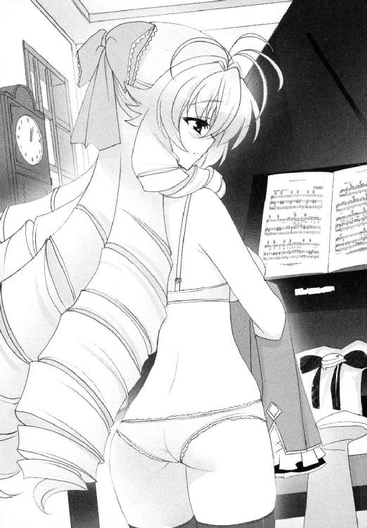

| SH@PPLE-しゃっぷる-(9) (富士見ファンタジア文庫) | |
| 竹岡 葉月 & よう太 | |
| 富士見書房 (2011) | |


本作品の全部または一部を無断で複製、転載、配信、送信したり、ホームページ上に転載することを禁止します。また、本作品の内容を無断で改変、改ざん等を行うことも禁止します。
本作品購入時にご承諾いただいた規約により、有償・無償にかかわらず本作品を第三者に譲渡することはできません。
本作品を示すサムネイルなどのイメージ画像は、再ダウンロード時に予告なく変更される場合があります。
本作品は縦書きでレイアウトされています。
また、ご覧になるリーディングシステムにより、表示の差が認められることがあります。
口絵・本文イラスト よう太
ＣＯＮＴＥＮＴＳ
第１章 全日本ばっきゃろー大会
いつか懐かしく思い出せる日が来るだろうか。
入れ替わって取り替えて、
真剣に誰かを想った日々のこと。
第１章 全日本ばっきゃろー大会
うちの子は気が弱いけど、とても優しい子なんですよ。
学校で家庭訪問や三者面談があるたび、母親の佐喜は雪国を指してそんなことを力説していた。
気が弱いけど優しい子。おおむね間違っていないと思う。
誰だって嫌な奴になんてなりたくないのだ。たとえば卒業式の前の日に、校舎の窓ガラスを割って回ったり、盗んだバイクで尾崎になるのだって、嫌われたくてやる人なんていないだろう。仮に怒ると正座をさせたがる鬼教頭に嫌われるのは構わなくても、一緒にジャンプの回し読みにつきあってくれる友達にまで嫌われたいとは思わないと思う。ハルオ（いま決めた。名はハルオだ）は嫌なセンコーには反抗的でも、コンビニで買った肉まんを、笑って半分分けてくれるヒロシのことは大事に思う方なのだ。
そんな義理堅いハルオだから、ヒロシのピンチは黙っていないはず。ヒロシが別の学校の悪い奴らに絡まれているところを見たら、裏に回って拳を振るうに違いない。ヒロシに手を出すなとタンカを切るに違いない。
でもそれが勘違いだったとしたら？
ヒロシはその悪い噂がある奴の姉だか妹に恋をして、なんとか橋渡しを頼もうと、心ばかりの貢ぎ物を片手に近づいている最中だったとしたら？
チャンスをふいにされてヒロシは泣くかもしれないけど、ハルオをなじりたいとは言わないだろう。だってはたから見れば普通の構図じゃなかったのは本当だし、身内のご機嫌を取るぐらいなら、直接オンナに告白すれば良かったじゃねーのと言われれば返す言葉もないのだ。
──そんな感じでふと周りを見回してみれば、この世にはびこる『どーにもならんね、これは』という事態は、大抵が悪意ではなく善意にもとづいて行われたことなのだとわかってやるせなくなる。
自分が悪役だと信じて仕掛ける戦争なんてどこにもない。空から隕石が降ってくることだって、つきつめれば万有引力の法則にのっとって仕方なくという、隕石側のやむにやまれぬ理由がある。悪いだけの奴なんていない。責めるだけの相手なんていない。
そう理解してばかりで口をつぐんで、なんの言葉も口にしない自分は、本当に優しい奴なのかと時々思う。
「──大丈夫だ、淡谷。この結果なら充分行けると思うぞ」
思っているうちにも、担任教師が結論を出したようだった。
ここは空舟五中の進路資料室だ。いま現在、教室半分ほどの薄暗い部屋の中は、旧式のストーブばかりがぎんぎんで、おぼれるようで息がつまる。向かいの会議机を挟んで、担任教師が座っていた。彼の手元には、各科採点を終えたばかりの期末テスト用紙が計九枚。どれも雪国のものだ。雪国は詰め物のへたったパイプ椅子の上で、あらためて学ランの背筋をのばした。
「えっと、行く......空舟北高に行くってことですか......？」
「いや、北じゃなくていち──」
「ぶわっかもおおおおおおおおおおん！ なあにを志の低いことをぬかしているんだ淡谷あああああ！」
部屋の中が暑苦しくなる原因は、なにもストーブに限った話ではない。
「行くなら、攻めろ！ 侵攻しろ！ 先生方だって応援してるぞ。このまま突き進んで一等を目指すんだ！ 根性出せやああ！」
ミズノのジャージの襟を立て襟にし、咆哮するのは三年の保健体育担当にして生徒会顧問の遠藤昭夫教諭だ。彼が出張って力説すれば、横では似たような先生方が「そうだぞ淡谷」「がんばりましょうね淡谷君」と拳を握って頷き合う。
期末試験を実施した九教科すべての教師が、教室半分のこの部屋に集まっているのだから酸欠にもなる。
彼らの目的はただ一つ。ここにいる雪国の進学先を、どうにかして変更させたいのだ。
「攻める、といいますと......？」
「北高なんて近場の無難高におさまるな。男なら潔く一高本命！ これで行け！」
そうだそうだと周りも続く。
簡単に言ってくれるが、県立第一高等学校ともなれば、青美女学院なみの歴史を誇る県下一の進学校だ。ほいほい受けて受からせてくれる学校ではない。
担任教師が、こちらの戸惑いをすくい上げるように頷いた。
「なあ、淡谷。お前はもともと、危ない橋は渡りたくない性格だったよな。空舟北も、決して悪い学校じゃないと思うぞ。うちから受ける生徒も沢山いる。友達が大勢行くっていうのは心強いよな。でもな、私たちとしても、なんの勝機もなく一高を勧めているわけじゃないんだ。普段の小テストはいまいちでも、ここ一番の中間と期末テストはちゃんと結果を出している。このまま集中すれば、一高だって必ず合格して──」
「ああ、いいです。受けますから」
「そうだよく考えて結論を──」
説き伏せようと身構えていた教師陣は、みな鳩が豆鉄砲をくらったように固まった。
「「「いいのか!?」」」
「はい。たぶん、これから先で、大きく成績が落ちることって、まずないと思いますんで......」
それはもう、確実にない。
小テストの成績が悪かったのは、雪国のかわりに姉の舞姫が、ニセ雪国として授業を受けていたからだ。そして中間や期末という大きなテストは、元に戻ったリアル雪国が受けていた。点差はそんなところに由来しているのである。
双子の学校入れ替わり。
このほんの少しの息抜きと、恋する下心を発端にした入れ替わり作戦は、若葉の頃にはじまり、それが黄色く色づき落葉がはじまる晩秋、綺麗さっぱり解消した。
たとえ二人の見た目は一緒でも、中身は男女で微妙に違う。その小さな差異が、周りにどんな影響を及ぼすかなんて、深く考えることもなかった──。
だから雪国は、あらためて頭を下げた。
「一高を受けます。今後ともご指導をよろしくお願いいたします」
これでも懇切丁寧にお願いしたつもりだったのだが、なぜか逆に戸惑われてしまった気がする。
──まあ、お前のことだから心配はしていないよ。
──そうよ、先生とっても安心だわ。がんばって。
教師陣との面談を終え、進路資料室を出る時、とりあえず追い込みがんばれと締めくくった彼らの顔を思い出すと、実は楽観できる成績ではなかったのかと心配になってくる。
（まあ、ちゃんと勉強すればいい話なんだけどさ......）
他にやることがあるというのは、ありがたい話だった。
少なくとも今は、やることのハードルが高ければ高いほど、余計なことを考えずにすむ。意味もなくわめき出しそうになる気持ちと向き合わずにすむ。
ゆっくり、穏やかな気持ちでいられる。それが何より一番だった。
「淡谷！」
昇降口に向かって歩きだしたとたん、こちらの名前を呼ばれた。
雪国が振り返ると、長い髪をポニーテールにした少女が、紙袋と段ボール箱を抱えて近づいてくるところだった。
「いま終わったところ？」
「うん。古葉さんは......生徒会の用事？」
「そんな感じ。これ、印刷室に運んだら帰るけど」
彼女の上履きの靴底が、雪国の前で止まってきゅっと高い音を出す。
この少女の名前は古葉鳥子。一応この学校の生徒会長だ。あまり熱心とは言いがたい五中生徒会だが、居残りの仕事がまったくないわけではない。
雪国は、当然のように彼女の手から段ボールの荷物を受け取って、一緒に印刷室へと歩きだした。
「ねえ。先生たちに呼び出されたのって、やっぱりあれ？ 第一志望変えること？」
「なんでわかるのかな」
「空舟北レベルじゃ言われて当然でしょ。淡谷なら一高だって行けるのに」
「そんな当然な話なんだ」
階段を下り、あたりの人気が少し減ったあたりで、鳥子が半歩だけ近づいてくる。
肩が触れそうで触れない距離。こっそり小声で囁いてくる。
「あたしよりぜんぜん総合いいくせに、あたしより下のとこ受けるなんて納得できないもの。先生ならなおさらじゃない？」
「古葉さんだって射程圏内だと思うけどな」
「無理むり。あんなとこ行ったら、毎日勉強漬けで窒息するわよ」
「まあ、そうかもだよね。古葉さんの場合は書きたいんだもんね」
「......悪い？」
いいえまったく。
そのために生徒会に入って、せっせと内申点を上げ続けてきたのだから。
このまま年明けになれば、鳥子は隣の市にある私大付属高校の推薦を出願する。今の成績なら、合格はほぼ確実らしい。学校はかなり自由な校風で、選択授業の多さが売りなのだそうだ。べつに妥協で決めたんじゃないんだからねと、少し拗ねた口調で話してくれたことがある。なんでも年の近い親戚の叔母さんも通った、あこがれの学校なのだという。
希望の高校での三年間。エスカレーターで大学に上がれば、プラス四年。それが鳥子の手に入れる自由時間になる。彼女はきっと書くだろう。
雪国たちは、そのまま期末テストの出来具合や、クラスで違う課題の進み具合を歩きながら話した。たまには笑いがこぼれることもあった。
「淡谷が一高受けるなら、あたしはがんばれって言うべきなんだよね」
荷物を置いて印刷室を出ると、身軽になった鳥子が振り返った。
少しきつめの顔立ちに、はにかむような微苦笑が、粉砂糖のようにまぶさっていた。
「うん。ちょっと複雑だけど......応援する。がんばってよ淡谷」
こうしていつでも話して励ましあえる人がいるというのは、やるべきことがある以上に、ありがたい話なのかもしれない。
穏やかに、前を向く気力を与えてもらえるから。
「古葉さん......」
「──だからー、そう言うのはね、魔法使いの卵に相談してみればいいんじゃないのー？」
雪国たちは二人そろって、声がした方向を追ってしまった。
見れば下級生らしい女子生徒たちが、ジャージ姿で廊下を移動中だった。内容としてはただの雑談。それ以上でも以下でもないようだ。
魔法使いの卵。今となっては懐かしい響きだった。
「......淡谷のお姉さんは、もう退院したんだっけ？」
「うん。今日はなんか......ひさしぶりに会うみたいだけど」
「芝目たちと？」
「そう」
青美女学院から五中に戻ってきて、元の暮らしに戻ることは、それほど難しいことではなかった。ただいくつか、入れ替わりをしていた時期と比べて、足が遠のいて見えてしまう場所はあるかもしれない。
旧校舎の二階。空舟エンジョイ委員会の部室も、比較をすればその一つには違いなかった。
彼らもまた、彼らなりに、舞踏会後の日々を送っているだろうとは思いながらも。どうしても行けずにいる。舞姫が残した夢の居場所──。
＊＊＊
空舟駅東口アーケード。だいちゃんラーメンに四時半。
「......ああ、ああ。よろしく頼むのだ」
ＳＥＣで延び延びになっていた退院祝いがしたいと電話をすれば、舞姫は「いいよ、わかった」と同意して、電話を切ってくれた。
ついに例の件に関する年貢の納め時がきたかと芝目は思った。
そして今、芝目たちは問題のだいちゃんラーメンの中にいる。
お座敷からのぞむ店のテレビでは、大相撲中継がはじまっていた。まだ客もまばらなこの時間帯は、同じく客席に空きも多い幕下の取り組みを映し出している。暴走ヤンキーの夜露死苦も真っ青な四股名をひっさげ、外国人力士が土俵際で投げを放つ。残った残った。残った残った──。
「な、なんか緊張してんのかなオレ」
「大道寺構成員。貴様がそんなに身構えてどうするのだ。自然に行け自然に」
「そりゃそーだけどさー」
「普通に迎えれば良いであろう。普通に」
「会長。餃子、タレ落ちてる」
「うおお」
──らっしゃーい！
きた。
芝目たちが必死にこぼれた醬油を拭いていると、店のオヤジの挨拶だ。こちらの緊張はマックスになる。
「よっ、兄貴！ おひさしぶりっすね！」
「うん。ひさしぶり。あ──おじさん。ボクみそコーンラーメンね。もやしたっぷりで」
まいどお！ みそコーン、もやし増量一丁おおおおおおおお！
あまり見かけないお客の登場だったが、慣れた注文が入ればいつも通り。オヤジの声が高らかに響き、厨房が少しだけにぎやかになる。
向こうはワインレッドのスクールコートに、同じ色のスカートをはいていた。つま先の丸い、ぴかぴかの革靴が足下を彩っている。指定の鞄も髪のリボンも、どこから見ても青美女学院のお嬢様だ。
そのまま彼女──淡谷舞姫は、いつものマイペースさで座敷に上がり込み、着ていたコートを脱いだ。ほっそりとした中性的な肢体が目にまぶしい。前より少し瘦せただろうか。手前の座布団へと座る前に、自前のコートを畳みはじめる。まず膝の上で三つ折りにし、鞄と一緒に、座布団の横へと置いている。
芝目には、その丁寧な仕草が髪の長さ以上に見慣れない。
無造作に合皮の鞄を放り投げ、座敷にあぐらをかくだけで良かった五中時代とは、いろいろな面で勝手が違うのだとあらためて思った。
「青美女学院だもんな......」
「ん？ なに？」
独り言に反応されたが、芝目は答えなかった。
ちょうどテレビの大相撲中継で、きわどい取り組みが飛び込んできたせいもあり、あれやこれやと感想を述べ合っているうちに、舞姫のラーメンも卓に到着した。
「ごめんみんな。まずは食べさせてね」
「いいっすよ」
「まあ食え。のびんうちに」
五分ばかりのラーメンタイムも挟まり、芝目たちは相撲の話題に集中する。話が進んでいく中、テーブルに残るのは三分の一ほどに減ったラーメンスープと、芝目たちが頼んだキムチ餃子が一皿。
テレビでは上位陣の取り組みもはじまっていた。
芝目もまた、ここで言うべき言葉のおさらいをはじめた。
「......ふう。ありがとう。やっと落ち着いたよ」
舞姫が箸を置いた。
今日は舞姫の退院祝いと、お互いの近況報告をするはずの日だった。
「心配かけてごめんね。もう大丈夫だから」
青美の制服を着て、長いカツラもそのままに、舞姫は小さく笑った。
今まで何度も通った、アーケードのラーメン屋の油染みた店の中で。薄っぺらくすり切れた藍色の座布団に、少女らしく横座りをしながら。
胸が痛むのは、歯がゆいからだろうか。
この彼女が青美の校庭の片隅で、ドレス姿のままくずおれたのを覚えている。芝目も、豆坂も、大道寺も、三人とも現場にいて、誰も手が出せなかった。どうやっても忘れようがない出来事だった。
結果として彼女は入院し、そのまま五中に戻ることなくお嬢様暮らしを続けている。
大道寺が、そんな舞姫の笑顔に応えるように続けた。
「んじゃ兄貴。向こうの学校ではどんな感じっすか？」
「んー、割と普通かな。生徒会の方は、もう下の代に任せなきゃいけないし。思ってた以上に暇かも」
「かーっ、うらやましっすね。うちはもう受験ムード一色でぴりぴりしてるっすよ」
「へえ、そうなんだ。大道寺くんたちは、もう志望校決めたの？」
「行けるとこに行くだけっすよ。な、かいちょー」
「ま、まあな」
あまりこの手の受験ネタには触れないでほしい。
幸い、舞姫はすぐに興味を移してくれた。
「豆坂くんは？」
「俺、受験まだ」
「え、うそ。三年生だよね？」
「違う。二年」
舞姫の涼しげな顔が、一気に崩れた。
「噓ぉ」
「二年Ａ組。噓じゃない」
メンバー一の巨漢が、のっそり真顔で生徒手帳を持ち出してくるので、それがとどめになったようだ。
「気づかなかったのか兄貴よ」
「ぜ、ぜんぜん気づかなかった......」
どうりで部室でしか会わなかったわけだよと、今頃になって驚きおののいている。
「......そーなんだ。じゃ、受験でぴりぴりは大道寺くんと会長だけで、豆坂くんはまだ一年大丈夫なんだね......」
「そんなとこっすね」
「他に変わったことは？」
勝ち越しをかけた力士同士が、一方を投げ飛ばした。
行司が軍配をひるがえす。
その中で芝目は、手始めに一枚目のカードを場に投げた。
「Ｅ組のモテキングに、ついに本命ができたらしいと噂が立っている」
合わせて豆坂が息を呑み、大道寺が固まる。舞姫がのばした箸の手前で、キムチ入り餃子が冷めた油を光らせている。
「......古葉さん？」
小さな確認の声。向こうも否定はしないらしい。
結びの一番がはじまる大相撲中継をＢＧＭに、芝目たちはしばし無言になった。
雪国と鳥子。あまりにその噂の組み合わせは、ＳＥＣが一丸となって目指した目標とはかけ離れ過ぎていたから。
本当にかけ離れ過ぎていたから──。
「──つかっ、なんでこんなことになっちまってるんすかっ！ 一駿河嬢はどうなってるんすか兄貴っ」
卓を揺らさんばかりに詰め寄る大道寺を前にしても、舞姫は動じない。
「一駿河さんは、元気だよ。ローズロワイヤルのトップ就任は、はっきり断ったみたいだけど。今学期いっぱいで転校するって言ってる」
「それでいいんすか？」
舞姫が、あらためて大道寺を見つめ返した。
左手に割り箸を持ったまま、餃子には手をつけず、黙って苦痛に耐えるようにひそめられた眉。それがすべてのような気がした。
頼むからもう聞いてくれるなと。
「言ってもいいの？」
本音は違う。『言いたくない』だ。
「オレは、ぜひとも聞きたいっすね」
「ねえ、みんな。ほんとにもうやめない？ 一駿河さんのことは、そっとしておく方がいいんだと思う。関わりあいになっちゃいけないんだ、ボクたちは」
「なんすかそれ。諦めるなんて兄貴らしくないすよ！」
「俺もやめるのには賛成だ」
大道寺が、ぎょっとしたように芝目を見返した。
「取り繕っても、しょうがないだろう、大道寺構成員。俺たちがしたことは、どうやったって取り返しのつかない『おせっかい』だったんだ。違うか？ 当人同士が話し合ってまとめるはずだった話を、横からいたずらに引っかき回してややこしくしたようなもんだ。あんな風に口を挟んで、恋が実る方がおかしかったんだ」
だから芝目にしてみれば、驚く大道寺の方がわからなかったのだ。
縁結びの神様にも、キューピッドにもなれなかった。やったことはと言えば、生身の友人が居並ぶ盤上を、無遠慮につかんでかき混ぜるような横紙破りだ。その結果がこれと言われれば否定などできない。
大道寺が、何かを言い返そうとして、結局悔しげに口をつぐんだ。
舞姫が、むしろ静かにたずねてくる。
「会長、後悔してるみたいだね」
「ああ。いつか破綻するのがわかってて、けっきょくその通りになった。本当に馬鹿だ」
「なら、途中で手を引くなり、止めに入るなりすれば良かったのに。なんで最後まで律儀につきあってたりしたわけ？」
とても素直な疑問だった。
そう。普通に考えれば誰でも思いつくような矛盾なのだ。舞姫が質問したくなるのも無理はない。
「それは......」
「それは？ なに？」
心臓が押し潰されそうだった。やっぱりやめよう。まだいい。次でもいい。そもそも言う必要などあるのか。
「ねえ、会長」
芝目は、それでも歯を食いしばって、身の内から二枚目のカードを切った。
「......できなかった。無理だった。俺は......兄貴のことが......好きだったから」
小さく息を呑む気配が、目の前の少女からした。
「俺は、兄貴が好きで、好きで、側にいたかった。俺が支えたかったのは兄貴だったんだ。兄貴が信じて望む世界があるなら、それを叶えたかった。同じものを見て、背中を押して、それで一駿河嬢と淡谷弟を助けられたらいいって。できるわけないと思ってたくせに、一分の勝機にすがって賭けたんだ、俺は」
「なにそれ」
本当になにそれである。
ちらりと見やった舞姫の顔が、今までで一番ひどい歪み方になっていた。まるで泣き出す手前の、傷ついた少女のそれである。
「そんなの、ちっとも嬉しくない」
うれしくないよ。
押し殺すようにつぶやかれ、芝目もまた、それをあまんじて受け入れるしかなかった。
彼女が望んでいたのは、掛け値なしに対等につきあえる友人であり、気の置けない『仲間』だった。それはもう、人力リバーフェスタの頃から、身に染みてわかっていた。一度は自分の口で友達なのだと噓をつき、そしてまたここで本音を告白し、二重に彼女を裏切ったのかもしれない。
舞姫は握りしめた拳の甲で涙（そう、涙だ）をぬぐうと、「お勘定払うね」と、鞄から財布を取り出した。そして自分のラーメンと餃子の代金を置き、コートも着ないで座敷を立ち去った。
──どうもー、ありがとやんしたー！
店のオヤジの挨拶が、閉まるドアの音が、背中を向けた芝目の耳にも届く。
「ほれ。大道寺構成員。豆坂構成員でも良いが。この餃子食わないか？ あと少しなのだが」
普通に皿をすすめてみるが、二人ともそれどころではないようだ。
特に、芝目の恋に感づいていたであろう、大道寺の衝撃は格別のものらしい。
「......会長。オレ、今度こそ会長のことがわかんねえ。もうちっとだけ踏ん張れっつーか......何もこんな時に言うことないじゃないっすか」
「こんな時だからとも言う」
自嘲にならないように気をつけたが、どうにも自信がなかった。
この世には、絶対に失敗してはならない局面というものがあるのだと思う。決して折れたり、曲げたりしてはいけない場面というものが。そして一駿河蜜と淡谷雪国の一件は、数少ないその『失敗が許されない』うちの一つだったはずなのだ。
芝目夏彦は、それを外した。だからできることは限られていた。
「かいちょー......」
「今の俺に魔法使いの卵を名乗る資格はもうないが、せめてこれだけは言っておかんと一駿河嬢に申し訳がたたんだろう。それだけのことなのだ」
気づけばテレビの中では、大相撲中継が終わっていた。
芝目はあらためてテーブルのメンバーを見つめて、ＳＥＣ会長としての方針を告げた。
「各自、当面の課題に集中しよう。サイトはこのまま休止する。新しい依頼は受け付けない。以上、よろしく頼む」
＊＊＊
ずっと欲しくて欲しくてたまらなかったワンピースがあったとする。
毎日ショーウィンドーを眺めて暮らして、着ている自分を想像して、どうしたらそれが手に入るか考えて、うまくいかない現実に拗ねたり怒ってみたり。でもやっぱり好きで欲しくてたまらなくて。
でもある日、そのワンピースがひょんなことから手に入ってしまう。ほとんど棚からぼた餅。事故に遭うみたいにあっけなく。
広げて着てみて考える。
ねえ──これほんとに似合ってる？
「ほーんと、古葉っちってラッキーだったよね」
その言葉を誰かに言われるたびに、鳥子の心臓はぎくりと跳ね上がり、首筋に氷をあてられたような気分になるのだ。
本日二時限目の授業は、隣のＥ組との合同体育だった。今も鳥子たちは片側の教室に集まって、女子は女子で着替えをしている。
鳥子はジャージのジッパーを上げながら、「うん」とか「まあ」とか曖昧な返事をした。
「そこでさー、赤くなんないでよお。どうやって落としたのか聞きたかったのに」
「べ、べつに、落としたとかそういうのじゃないし」
「あー照れてる！ 古葉っちのくせに照れてる！ 反則！ こうしてやる！」
うきゃあああああああああああ。
どうしようもない悲鳴になってしまった。
いきなりキャミソールごと上着をまくられるのは、反則を通り越して犯罪になるのではないのだろうか。
「ふんふん。たしかにスタイルは悪くない。えい」
「はなしてって冷たっ」
やめてええええ。冷えた手を腹にくっつけないでえええ！
「うんじゃ、そろそろ行こっか古葉っち。授業はじまるし」
「......う、うん」
好きなだけやって気が済んだのか、向こうはあっさりとこちらの腹から手を離して回れ右をしてしまう。間近で見ても垢抜けている川上藍子さんなどにこうして絡まれてしまうと、本当にどうしていいかわからなくなるのだ（だって細い！ メイクうまい！ 自分と違う！ などなど色々とコンプレックスが）。
向こうは気楽なもので、「ねーねーケーコ、やっぱダイエッターもいいけど乳も大事だよ」「そうか乳か」「残して瘦せなきゃ。時代はばいーんよ」「ばいーん」「ばいーん」となにかものすごい擬音とジェスチャーで会話をしている。
華やかな彼女たちの話題の中心に、自分が来ることなんてほとんどなかった。
ここ数日のガールズトークのネタは、『モテキング』淡谷雪国の側にいることが多くなったお堅い生徒会長、すなわち鳥子のことなのだ。
唯一の救いは、そうやって興味本位に探りを入れられ、ブラだの腹だのをいじられても、お前なんてふさわしくないと文句を言われたりはしないことかもしれない。
不思議と言えば不思議だった。学校中が意外に思う組み合わせでも、本当に祝福してくれているのだろうか。
（じゃなかったら、いつまで保つか見物と思われてるか）
十二月に入ってから、女子の授業はバスケットボールが続いている。鳥子たちが体育館へと向かう途中、渡り廊下から校庭の一角が見えた。川上藍子が、「男子はサッカーかあ」とつぶやいている。
鳥子の視線は、どうしてもその中に混じる小柄な少年を探してしまうのだ。
集団の中でひときわ浮き上がる、一見少女めいた中性的な容貌。三年Ｅ組のモテキング、淡谷雪国の居場所を。
「やっぱり目立つよねー、淡谷くん」
「うん。あのちょっと陰がある感じがいいんだよ」
「クールだー」
注目しているのは、鳥子だけではなかったようだ。
今も彼は昇降口の石段に腰掛けて、一人ぼんやりと空を見上げていた。
おまけにみんなときたら、そんな彼に向かってわざわざ肩を並べて声をそろえ、「せーの。淡谷くーん」などと黄色い声を張り上げてくれるものだから、向こうは猫の鳴き声を聞くようにこちらを見るのである。
「サッカー、がんばってねー」
「おーえんしてるよー！」
きゃっきゃうふふとはしゃぎ回る集団の隅に、鳥子も混じっていることに気づいているだろうか。なんだか無性に恥ずかしくなってしまい、一足先に体育館へ向かおうとした。
「ちょっとちょっとー。古葉っちー。淡谷くんいるのに行くことないじゃん」
「そーだよしゃべればいいのに」
あなたたちにはわからないのよと言ってあげたい。
クールで孤高で陰がある。女子に媚びないモテキング。
それはみんな、入れ替わりで五中に来ていた双子の姉に贈られてきた称号のはずだった。なのに入れ替わりが終わって戻ってきた雪国すらも、同じように姉の看板を引き継いでしまっているのだ。いつも無意識に壁を作って、一人で遠い場所ばかり見つめている。それの意味するところがわかるだろうか。
「あ、あたしは、べつに、ここで話すことなんてないし──」
「古葉さん！」
振り切ろうとした瞬間、当の雪国が声を張り上げた。
さすがに足を止めてしまう。向こうはジャージの左手を振って、お日様の光の下にいた。穏やかに微笑んで、こちらを、鳥子のことを見ていた。
「今日はさ、帰りに図書室に寄っていい!?」
思わず──こくりとうなずいてしまう。
向こうはそれで満足したらしく、そのまま集合場所に向かって走っていった。
「──うあーっ、もう！ いいなあ古葉っち！」
「うらやましー！」
後から後から女子に肩や背中を叩かれる。目を合わせれば、『やるじゃん』とばかりに親指を立てられる。
自分一人だけが、ここにいるその他大勢の女子の中で、特別に優しく接してもらえる。そのことへの嬉しさや誇らしさがないと言えば噓になる。でも──同じぐらいに不安も感じる。
あんな無理を、彼にさせていて大丈夫なの？
この状況がいつまで保つか見物という感覚は、あながち的外れでもないのだ。
だってあたしたち、本当につきあっているかも、よくわからないのよ。
十一月の最終週。二人は自転車でぶつかって出会った。
（危ない！）
響く悲鳴と急ブレーキの音。鳥子は書き上げた新人賞用の小説を送りに行く途中で、雪国は失恋したばかりで落ち込んでいた。
まるで周りが見えていないようだった。ポスト近くの歩道に座り込み、鳥子は彼の懺悔めいた告白を延々と聞いた。
そしてあろうことか、そんなどん底で土砂降りの雪国に向かって、ついつい言ってしまったのである。
「あたしは、淡谷が好き。ずっと前から好きだった」
本当に、徹夜続きでハイになっていたとしか思えない。
「......ぼ、僕を？」
「そ、そうよ。あたしが好きになっちゃいけないっての？ ねえ！」
「いけなくないけど......」
「けどなに!? はっきり言いなさいよ。言っちゃってよいいからこの場で！」
「いたたたたっ！」
今なら言える。それはテンパリの名を借りた脅迫と言うのだ、古葉鳥子。
鬼気迫る顔で詰め寄られ、ついでに腕までつねられた雪国は、青天の霹靂のような顔で驚いていた。
とにかく驚いていることを強調しながらも、あらためて自分の手を、こちらの手の上に重ねてくれた。
「あの......今まで、そんなことって考えたことなかったから......なんて言っていいかわからないけど......」
忘れない。この言葉だけは、きっと一生忘れない。
「ありがとう。うれしいよ」
そうして今、鳥子と雪国はつきあっているという周囲の噂に囲まれ、実際に一緒に帰ったりしている。
嫌いと言われたわけでもなく、邪険にもされず、「ありがとう」という感謝の言葉が手元にあるなら、鳥子の宿願は果たされたと言えるのかもしれない。
現に今も鳥子の目の前には、望み続けた少年が座っていて、開いたノートいっぱいに複雑な証明問題を展開しているのだ。
「その問題、難しい？」
「......んー、ちょっと面倒な感じかな」
校内の図書室で勉強というのも、受験生同士のデートとしてなら十分にありだろう。
「そこに補助線引いたらもっと楽にできない？」
「え、どこ？ ここ？」
「そうそこ」
雪国は少し考え、納得したように書きかけの証明を消しはじめた。
「だめだなあ。気づけば簡単なのに......」
「あたしも学校、一高にしようかなあ......」
ぽつりと呟くと、遅れて雪国が顔を上げた。
「──え、なんで？」
「なんでって。その。な、なんとなくよなんとなく。淡谷でも解けなかった問題解けたあたしってすごいかもって。ちょっと洒落で思っただけよ」
「ああ、そっか。びっくりしたよ」
「本気にしないで」
必死に笑い飛ばすと、雪国は、ほっとしたように笑った。
その『ほっとした』感じが、無性に引っかかるのだ。
「行きたい学校に行くのが一番だもんね」
「そうよ。だから淡谷もがんばって」
「うん。ありがとう、古葉さん」
一つだけ明らかなことがある。ここで礼を言う雪国は、鳥子が志望校を変える可能性というものを、まったく考えに入れていなかったということだ。
確かに鳥子が推薦を受ける予定の文星大付属高校は、ずっと狙い続けてきた憧れの学校だ。雪国にだってそう話したことがある。だけど、つきあっていれば一度ぐらい考えてみないだろうか。好きな人が行く学校に行ってみたいなと。一緒の学校に行ってみたらどうなるだろうかと。夢に見て想像したりはしないものだろうか。
淡谷は、一度もないのだろうか。
「......憧れ続けたワンピース、か」
「ん？」
「なんでもない」
憧れ続けたワンピース。ふとした弾みに手に入った理想。
家で着てみて考える。
ねえこれ──本当に似合ってる？
下校時刻になると、専門の司書のいない校内の図書室は、早々に閉まってしまう。
追いだされた形の鳥子たちは、おとなしく帰るしかなかった。
雪国は自転車通学のため、自転車置き場に寄ってから校門を出る。徒歩の鳥子もそれにつきあった。
「やっぱり閉まるの早すぎだよね、うちの学校の図書室」
「うん。今度から別の場所、探した方がいいかも」
「図書館とかの方がいいかな。来週までに考えとくよ」
鳥子のマンションに行き当たるまでの三百メートルほどが、二人で帰れる距離だった。
たわいもない雑談を一つか二つした程度で、もうチョコレート色の建物が見えてしまう。
「じゃ──」
「さよなら」
うん。また今度ね。
お互いに手を振って別れる。鳥子は胸の前に鞄を抱えて、小走りにマンションのエントランスをくぐり抜ける。
六階の自宅に帰り着くと、母親が夕飯の準備をしていた。
「鳥子。着替えたらこれ。手伝って」
そう言ってちらつかせるのはウチワである。
なんでもテレビでやっていたちらし寿司を作りたいらしく、酢飯作りを手伝えと開口一番命じられてしまった。
「早くね」
「わかってる。ちょっと待って」
こういう時、いくら好きなことに打ち込む環境作りのためとはいえ、『手の掛からない普通の娘』を演じていると、断れなくて辛い。着替えてくるからと言いおいて、マフラーをはずしながら部屋に入った。
部屋の方は、親に掃除に入って来られるのを防止するため、常に小綺麗に片づけてある。勉強机の奥に隠した創作ノートも、ここしばらくはご無沙汰だ。かわいそうな小説たち。投稿ショックも期末テストも終わったのだから、そろそろ新しい話を考えついてもいい頃合いではある。
そしてけっきょく今日も、雪国にこれを話すことができなかったのだ。
（蜜......ほんとにどうしよう......）
悩みながら机の引き出しを開けると、中には開封済みの封筒が一通入っていた。鳥子はそれを引き抜いて、隣のベッドに腰掛けた。
白い封筒と、メトロポリタン美術館のロゴ入り便せんは、すでに彼女と手紙をやりとりする上でのトレードマークのようなものだった。何度もこの手紙で、彼女の胸の内を知ってきたのである。
日付は一番新しく、今月に入ってからのものだ。
古葉鳥子さま
ごぶさたしております。一駿河蜜です。
急に音信不通になってごめんなさい。少し身の回りがばたばたしていたんです。やっとこうしてペンをとる時間が取れるようになりました。
まずは告白の成功、おめでとうございます。がんばっていた鳥子さんが報われないのはおかしいとずっと思っていました。
本当は直接お祝いに駆けつけたいのですが、やはり時間が許してくれそうにありません。実は十二月二十三日付で、空舟市を離れることになりました。驚かれるでしょうが本当なんです。東京の音楽学校に編入するんです。
この日は祝日ですが、ロワイヤルメンバーとして、青美女学院の舞台に立ちます。ローズロワイヤル主催でクリスマスコンサートを行うのです。
ＯＧと在学生のみのミニコンサートですが、最後の思い出にしようと思います。
寒さが一段と厳しくなる折ですが、鳥子さんもお体に気をつけて。（受験生ですものね！）
東京についたら、また手紙を書きます。
それではまた。
一駿河蜜 拝
絶交されるのを覚悟で手紙を出したのに、こんなに丁寧な返事が来るとは思わなかった。
達者な筆致の便せんと一緒に、本物のクラシックコンサートさながらの、シャンパンゴールドの箔入りチケットが一枚、挟みこんである。
なにより驚くのは、はっきりと二十三日が最後と書いてあることだ。その日で蜜は空舟市を離れ、東京に行ってしまうらしい。
（ほんとに決めたんだ）
好きな人を見分けられなかったら手を引くと、言った通りにことを進めているらしい彼女。それを純粋と呼ぶか強情と呼ぶかは、鳥子が決めることではないのだろう。
鳥子にはわからなかった。たった一度の一目惚れで、女装してまで好きな子を追いかけていった少年の気持ちも、そんな変わり果てた少年に恋をしてしまった少女の気持ちも。
双子の入れ替わりがはじまる前から雪国を好きだった鳥子と違い、蜜は女装した雪国の状態から恋をはじめたらしいのだ。
自分の中に、確かな芯が見つからない恋は辛い。それはわかる。でもそれ以上に、好きな人の側にいられないことの方が鳥子は辛い。そうではないらしい蜜は、強いのだろうか。弱いのだろうか。いつも小説を書く時のように、自由に想像の翼を広げようとすると、急にブレーキがかかってしまうのだ。
なにより雪国は、この事実を知っているのだろうか。
ただ確かめたくて、確かめるのが怖くて、今も引き出しの中に手紙をしまい続けている。そんな自分はどうなのだろう。
「鳥子、まだー？」
母親が早くしなさいとしきりにこちらを呼ぶので、急いでまた引き出しに戻した。
「はーい。いま行くから！」
考えない。考えない。今はまだ考えない。
週末は彼の方から、電話が来るといいと少し思った。
＊＊＊
「ただいまー」
雪国が家に戻ると、祖母がリビングの電話を占領していた。
通りすぎながら一階を見回しても、姉の舞姫の姿は見あたらない。どうやらまだ帰っていないようだ。そのまま学ランを脱ぎつつ二階の子供部屋に上がるが、なぜか青美女学院の制服だけは、きちんとハンガーにかかって壁につり下げてあった。
「舞ちゃん？ もしかして寝てるの？」
雪国は二段ベッドの上段を見上げるが、またも返事はない。
本格的に寝てしまっているのだろうか。
それならいい。自分も少し休もうと思った。
とりあえず制服の上だけを脱いで、下段のベッドに倒れこんだ。やわらかな布団の感触が、そのまま意識を引き落としてくれるからありがたい。
最近は妙に眠くて、夢も見ないで眠れるのだ。
第２章 ご隠居と噓とコーヒータイム
うわあ。
淡谷雪国は悩める受験生だが、将来の目標に作家の二文字を入れることだけはやめようと思っている。
なぜって？ 身近にいる例が強烈すぎるからだ。
「──ええ、なに？ なんだって？ 百二十ページの二行目？ 毒殺が薬殺になってるって？ そんなのそっちで適当に直しゃいいだろう。次いって次──ああだめ！ そこは伏線！ 変えたら呪うよ！ くええええええ！」
いったいなんの妖怪大戦なのだろう。
なにやら昨日あたりから色々なものに追いつめられているらしい祖母が、朝になっても受話器を握りしめている。洋服嫌いの着物党。そのくせ着ている紬の裾は乱れ、節くれた指先はインク染みでまだらに染まり、さらには出版前の版下原稿が足下いっぱいに散らばっていて、上からミミズがのたくったような癖字で「死体遺棄」だの「死後硬直」だのといった単語が赤字で書き加えられているのですごく怖い。
なにより一番怖いのは、受話器を握る祖母自身の、睡眠不足で血走った両目だが。
「......大詰めって感じだなあ......」
リビングから少し離れた台所にいても、その毒気と殺気は十分に伝わってくるからげんなりしてしまう。
雪国としても、土曜の朝からお仕事ご苦労様ですと言うべきなのかもしれない。しかし朝っぱらから出版限界ホラーショーを横目に朝食をとるはめになっては、ぼやきが出るのもしょうがないだろう。
今日一日は電話での声が飛び交って、落ち着いて勉強という雰囲気ではなさそうだ。
「舞ちゃんは、今日は家にいるの？」
「ううん──病院、予約入ってるから。すぐでかけると思う」
「そっか」
隣にいる舞姫はと言えば、格好こそパジャマ姿なものの、淡々と締めのヨーグルトを食べているからすごい。
彼女も退院してしばらくたつが、怪我がすぐに治るわけではないのだ。病院の外来で経過を診てもらう生活は、まだまだ終わりそうになかった。
雪国は、自分の皿をまとめて立ち上がった。
「じゃ、舞ちゃん。そっち食べたら流しにつけておいてね」
「わかった。ユキグニも、どっか行くの？」
「中央図書館でも行ってくるよ。その方が静かそうだし」
電話の方角を見て苦笑すると、舞姫もうなずいたようだった。
「古葉さんにも、よろしくって言っておいて」
「え──」
キッチンに踏み込もうとしていた足が、止まってしまった。
「え、あれ。古葉さん、誘ったりしないの......？」
「いや......そのつもりは、なかったんだけど......」
どうなのだろう。おかしいのだろうか。
真面目に彼女の言葉に不意をつかれてしまった自分がいた。
「ご、ごめん。こういうのよくわかんないんだ。やっぱり誘った方がいいよね。そうだよね」
「違うって。ボクが勝手に思い違いしただけだから」
「でも──」
「待ってよ。落ち着いてよユキグニ。四六時中一緒にいなきゃおかしいなんて、そっちの方がおかしいってば！」
大声で諭されて、それでようやく落ち着けたようなものだった。
「無理することないって。普通にやればいいんだよ、普通に......」
「......そうだよね。ありがとう、舞ちゃん......」
うつむき加減に声をかけ合い、その場は終わった。家の中のくせに、変な沈黙がおりてくる。雪国は今度こそ洗い物をしに、台所に向かった。
その普通がわからなくて難しいなんて、言ってもしょうがないことだ。
そしていつものように自転車に乗って、市の中央図書館に行ってみた。だがこの時期は似たようなことを考える学生が大勢いるらしい。中の学習室も閲覧席も、机という机は児童用コーナーにいたるまで満席だった。
仕方なく引き上げようとするが、併設の喫茶室の方は空いていた。
「............」
三十秒ほど考える。
時間やお財布と相談の結果、コーヒーを飲む間ぐらいはいいだろうと、そちらの方に鞄をおろした。注文を取りに来たウエイトレスにコーヒーを注文し、単語帳を取り出す。
中身を三つほど覚えた頃、向かいの座席に、高校生らしいカップルがやってきた。その仲のよろしさを見るたび、やっぱり電話ぐらいするべきだったかなと、訳もなく後ろめたくなった。
古葉鳥子に告白されたのは、雪国が蜜と別れた直後のことだった。
この世の終わりだと思うぐらいに落ち込んでいたのに、思わぬところから延長戦を告げられたような気分だった。
──あたしは、淡谷が好き。ずっと前から好きだった。
まだ終わってもいないし、やるべきこともある。それをしろと背中を押されたのだと思った。
実際、失恋ぐらいで世界は終わらず、雪国は空舟五中の受験生としての毎日を送らねばならなかった。
舞姫は優しいのだろう。こちらの雰囲気を察した後は、何も語らず、最近は彼女の方から鳥子の名前を出してくるようになった。
しかし、ことおつきあいとなると難しいと思う。現に土曜の一日を離れて過ごすのは正しいかどうかで、こんなに悩むことになるとは思わなかった。
できることなら、多大な負担をかけてしまった舞姫には、余計な心配をさせたくなかったのだけれど。自分で鳥子の名前を口にしながら、時折どこかで傷ついているような、あのどうにもならない気持ちをもてあました舞姫の目。あれを見ないですむなら、それにこしたことはないというのに──。
「あの、もしかして、淡谷さんですか？」
その時、雪国の思考を断ち切る声がした。こちらが単語帳から目を離すと、少女は脇からこちらをのぞきこんだ姿勢のまま、はにかむように微笑んだ。
唇には暗めのルージュ。服は全身真っ黒、かつ光るレザーが中心。どう見てもいるべき場所を間違えたパンクファッションだったが、浮かべる表情は善良＋低姿勢そのものだ。
「......ええっと......」
「ああ、やっぱり淡谷さんですよね。淡谷雪国さん。わたくしです。青美女学院の高天原りぼんです」
「うわ、え、あ──っ！」
「ご無沙汰しております。式場ジャックの時以来ですよね──」
「ご無沙汰っていうか。あ、どうぞどうぞ。良かったらこっち座ってください」
「まあ、ありがとうございますわあ」
せっせと椅子に乗せていた荷物をどかし、りぼんが座るスペースをこしらえる。りぼんはタイトミニのレザースカートの裾を気にしながら、そこに腰掛ける。ああ間違いない。間近で見ればやっぱり彼女だ。
高天原りぼんは、青美女学院の図書委員長だ。
彼女の初恋の人をめぐって、一悶着があったのは秋のことだ。ＳＥＣが運営する相談サイト、『魔法使いの卵』に依頼された問題は、やがて胡蝶の宮の結婚問題ともリンクして、結婚式ジャックにまで発展した。それきり『淡谷雪国』との接触はなかったはずだが、こうして姿を見れば声をかける程度には覚えていてくれたようだ。
「絶対どこかでお見かけしたお顔だと思って。間違えなくて良かったです」
「ははは......」
実はそのお見かけした顔というのは、舞姫が男装したニセ雪国に違いなく、こちらはしばらく青美女学院に通っていたので、ニセ舞姫としてなら何度も面識があったりする。
もっとも──どうしてこんなところに、こんな奇天烈な格好でやって来ているのかは、さっぱりわからなかったが。
雪国はたずねた。
「今日の高天原さんは、図書館に......？」
「いいえ。お店でコーヒーが飲みたくて」
「は？ コーヒー？」
「わたくしですね、カフェや喫茶店でコーヒーを飲みながら読書をするのに憧れてるんです。今日はほら、詩集をもってきました。金子みすゞです」
りぼんは鋲付きの指輪がはまる両手で、可愛らしい児童用の詩集を引っ張り出す。
「でも、ここ以外のお店は怖くて......」
「......怖い、ですか......」
「はい。悪い人が来るんじゃないかって心配で。カ、カツアゲとかされちゃうかもしれないじゃないですか。だからいつも同じお店になっちゃうけど来てしまうんです。だめですよね......こんな弱虫じゃ......」
肩を縮めて恐縮してくれるが、そんな彼女の自宅は、ここから電車で二時間の山の中だった気がする。本当に読書とコーヒータイムのためだけに空舟市までやってきたというのなら、いっそカツアゲ側より根性があるような気がした。
（そういえば、周りの人はぜんぜん気にしてないや、高天原さんの格好......）
注文を取りにきたウエイトレスも、「いつものですね」の一言で引っ込んでいった。もう常連さんなのだ。
「淡谷さんは、芝目さんたちと待ち合わせですか？」
「あ──」
そうか。そう来たかと思ってしまった。
「いや......今日は僕、勉強しに来たんで。一人なんです......」
「まあ。大変ですわね。お受験ですか？」
「そうです。三年で追い込みですから」
「そうですわよね。お忙しいですわよね」
舞姫が『雪国』を演じていた頃なら、ＳＥＣとつるんでいた方が自然なのだ。
そして素直に目を丸くしておどろくりぼんが、うらやましくもあり新鮮だった。青美女学院はエスカレーター式の学校だから、ほぼ全員が高等科へと進学できる。受験ムードとは無縁の学校だった。
「そうですか。だからサイトも閉じてしまわれたんですね......」
「え？」
閉じた、って──？
「あら？ お受験のせいじゃないんですか？ まああ。わたくしったらまた勘違いして......」
違う。違う。わかっていないのはこちらの方だ。
「本当に。ずっと更新されていらっしゃらなかったですけど、正式にお休みの案内が出た時は悲しかったですわあ。淡谷さんや芝目さんたちが助けてくださったからこそ、今のわたくしがあるようなものなのに」
雪国は、勢いうなずきそうになって、あわてて彼女の声に耳を澄ました。
どうやら間違いはなさそうだった。芝目たちが運営する相談サイト『魔法使いの卵』は、休業状態なのだ。
「どうか、お受験が終わったら再開してくださいましね。どんな形でも良いですから。わたくしたち、ずっと待っておりますわあ」
うまく事態が飲み込めない雪国の前で、高天原りぼんはねぎらいの気持ちたっぷりに微笑んでいた。
家に帰って問題のサイトに飛んでみれば、確かにトップページが変わっていた。
「ほんとだ。なんで......」
『また会いましょう。ひーほー』と、ふとっちょネズミが手を振るアニメーションだけが、くるくると画面上を回っている。リンクはどこにも繫がっていなかった。管理人のメールアドレスすらも消えている。休止というより、閉鎖に近い。
「ちょいとちょいと雪国。急いでないのならそこをおどきよ。使えないじゃないか」
祖母にせかされても、仕事場のパソコンの前から動けなかった。
心のどこかで成り行きを気にしながら、実際に実のある話を聞いたのは月曜になってからだった。
学校で授業が終わり、待ち合わせのため図書室に行くと、閲覧席に芝目夏彦がいたのだ。
彼の周りには大道寺も豆坂もおらず、一人で机にノートを開いていた。今までそんなことは一度もなかったので、かなり意外な気はした。
「芝目くん──」
雪国が声をかけると、向こうも顔を上げた。
「淡谷弟か」
「ここで会うなんて珍しいね」
「そうだな。まあ、いい加減年貢の納め時で勉強せねばならんからな」
「なんかみんなそんな感じだよね」
うまい具合に笑うことができた。そのまま向かいの椅子に腰掛けてみた。
「淡谷弟は、北高、受けるのか？」
「あ、ううん......一応、一高にしようと思ってるけど」
「その方が助かる。貴重な枠がなくなるのは困る」
がりがりと、シャープペンシルを動かしながら言うので、すぐには意味が飲み込めなかった。
つまりなんだ？
「芝目くん、北高受けるんだ......？」
「おお。だから空舟北だけはやめてくれ。ただでさえ落ちる確率がますます上がる」
「いやそんなこと言われてもさ......」
「切実なのだよ。淡谷なら五つぐらい偏差値を分けても困らんだろう。このまま食えば増えるか？ 吸えば増えるか？」
「目つきが本気だよ芝目くん！」
「けっこう本気だ」
おほんと、カウンターの国語の先生に咳払いをされた。しかしそれでも目の前にあるのは、芝目の半端でないマジ顔である。なんだか吸血鬼に生き血を吸われる乙女の気分を味わった。
だいたい以前に高天原りぼんの消息を追うため、一緒に空舟北高へ足を運んだ時には何も言わなかったくせに、戸惑いもするだろう。
「いきなりどうしたの？」
「いろいろあるのだ、いろいろ」
なんでもお兄さん二人が通った高校には通いたくなく、他に自転車で通える公立高校となると、あの学校しか残らないのだという。
「うちの兄ーズの行ったとこに入るとな、俺は自動的にサッカー部のエースか、軽音部長の弟というふれこみになるのだぞ」
「うわ」
わかった。死ぬ気で避けたい。というかそのリア充な組み合わせはなにごとだと聞きたい。遺伝子だけでも引き継げなかったのか。
「悲しいかな、兄弟ってだけで中身が似るなら苦労はしない」
「............まあ、だよね」
「というわけでだ、淡谷弟。世の中にはな、空舟北でもあっぷあっぷな人間もいるということだ。担任には正直に無理無謀だと言われているが、席は一つでも空けておいてくれると嬉しい......その空席すら届かない可能性もあるが......しかも非常に高いが......はははは......はははは......」
乾いた声で笑いだすものだから、余計悲愴なものを感じてしまった。
「わ、わかったよ。がんばろう芝目くん。サイト閉じたのだって、それどころじゃないんじゃしょうがないって」
「おお。わかってくれるか、淡谷弟」
「芝目くん！」
「でもな、それは間違いなのだ。淡谷弟」
しかと手を握り合ってから、そう言われた。
やっぱり芝目は真顔だった。
「確かに俺たちは受験生で、そのせいで手が回らない面もある。でも──一番大きかったのは舞踏会の一件であるよ。もう再開はしないと思う」
きっぱりとした決意。そこには口を挟む余地すらないような気がした。
「......僕は、芝目くんたちのせいだなんて思ってない」
言いながら、違うなと思った。これでは偽善だ。そこまで割り切れてなどいない。舞姫の横には、いつだって芝目がいた。ただそれでも、起きた事態の責任を全て彼にかぶせるほど間違っているつもりはなかった。
「俺が、俺にけじめをつけたかっただけなのだ。俺は」
口ごもる雪国に、芝目は言った。
彼は気づいていたのだという。舞姫が男装して蜜に近づくことの不自然さも、その結果起きるかもしれない未来の破綻も。薄々というより、ほとんど確信に近い気持ちでいたらしい。
「──なあ？ 反則だろう？ なのに兄貴の側にいたいために目をつぶったんだ。わかっていたくせに止めなかった。俺はあの一件を『使った』のだよ、淡谷弟」
「そんな......」
「悩めるお嬢さんの味方が、自分の恋路を優先させるようになったらおしまいなのだよ、淡谷弟。魔法使いの卵としては、一発退場のレッドカードだ。だから閉じた」
「舞ちゃんは、このこと知って......？」
「話した。軽蔑されたし嫌われもしたが、すっきりはしているよ」
なんてことだろう。
知らないうちに芝目たちの方まで壊れだしていたのだ。
口にする言葉が見あたらない雪国を見て、向こうは口の端を引き上げた。
「こうなったのは自業自得だ。淡谷弟が気にすることじゃない。弟は弟で好きにやってくれ。その方が俺は嬉しい」
「芝目くん......僕は......」
その時、脇で入り口の扉が開いた。中に入らず様子をうかがっていたのは、ポニーテールの古葉鳥子だった。雪国は、すぐに腰を浮かせた。
「ごめん、行くね芝目くん」
「ああ。帰るのか？」
「うん......古葉さんいるから」
「そうか。そのうち勉強でも教えてくれ。暇な時でいいから」
挨拶をかわし、テーブルを離れた。
鳥子は扉の前で雪国を待っていた。思わず雪国は、そんな彼女の右手を引いて歩きだした。
芝目と舞姫には共通点がある。優しい言葉と優しい噓で応援すると言いながら、目が正反対の気持ちを表すところだ。
がんばれがんばれと言いながら、心の中で傷ついているところだ。
前を向こうとしているのに。
ずるいと呟きたくなった。
＊＊＊
蝶間林典子は、自分のセリフで人が泣き出す時というのを知っている。
それによって涙をこぼしたり、笑ったり、心の底から傷ついたりすることを知っている。
たとえば、今。典子は放課後のお茶会の席で、ロワイヤルメンバーに囲まれながら、決定的な言葉を口にした。
「北条さん。次のトップになってくださる？」
肝心の答えの方は、周りを取り囲む二年生メンバーの、弾けるような歓声にかき消されてしまった。
「おめでとう、北条さん......っ！」
「諦めなくて良かったわね！」
「トップですって！」
いつもはきはきと意見を言う、気が強いはずの北条薫が、一言も口をきけずに赤面した。両手で口をおさえ、感激をこらえきれずに涙をこぼす。
その素直さは可愛らしくもあった。入学する前からローズロワイヤルに憧れ、トップの典子にもストレートに崇拝の気持ちを表していた彼女だ。一方で他を攻撃するような幼い面があるのが玉に瑕だったが、成長はしていると信じたい。
きっと典子によく似た、体面と誇りを材料に進む、典型的なソロリティトップになるだろう。
「あ、あ、あたくしでよろしければ。よ、喜んで」
「楽しいだけの責務ではないと思うけど。みんなを守ってさしあげて」
「はい！」
また最後は拍手に包まれた。
正式な鍵の授与式は先の話だが、これで内々の発表はすんだということだ。感激しきりの次代トップに苦笑し、気持ちとしては肩の荷が下りた思いだった。
「──嗚呼お父様、お母様、お兄様にお姉様、おじいさまおばあさまひいおじいさまひいおばあさま、北条商事の社員一同に関連会社のみなみなさま、犬のリンダにグッピーたち、薫はついにやりました。やりましたとも......！」
「お百度参りをした甲斐がございましたね、北条さま」
「どんなお名前で呼びましょうか。薫姫とか──？」
話が弾む中、当の北条薫が、ふと我に返ったようにこちらを見返した。
「あら。なあに、薫。お茶のおかわりがいる？」
「あの、お姉さま。あたくし、やっぱり代わりなのですよね」
「────」
「二番手なのですよね。そう思っていた方がよろしいのですのよね」
カップに紅茶を注ごうとした手が、さすがに止まりそうになる。
いったい誰がイエスと言える？
北条薫は、自分の椅子の上で、神妙にこちらの答えを待っている。
「だってお姉さまが一番目をかけていらっしゃったのは一駿河の──」
「遅くなってすみません！」
サロンのドアが開け放たれた。
中に駆け込んできたのは、二年うめ組の一駿河蜜だった。
典子はとっさに叱りつけていた。
「蜜！ 急いでいても、そんなにバタバタするのは淑女のすることじゃなくてよ！」
「ごっ、ごめんなさいお姉さま！」
「いいからその荷物をどうにかなさい」
典子が命じてやれば、蜜は両手に抱えた楽譜の束の置き場所を探しはじめる。
大方、教室の掃除が長引いたことと、白百合（り）館のレッスン室が混んでいたのだろう。最近は下校前に、自主練で歌を見てもらうのを欠かさないと聞いている。
「そうね──せっかくだからそこで歌いなさい、蜜」
「え」
「遅れてみんなを待たせた罰よ。一曲、なんでもいいから歌って席におつきなさい」
最後の方は冗談めかして微笑めば、蜜も逆らうことはできないようだった。「はい。やらせていただきます......」と殊勝な顔でうなずいて、制服の背筋をのばす。
周りのロワイヤルメンバーも、いきなりの余興に興味が出てきたようだ。特に下級生が目を輝かせている。
「伴奏は？」
「いえ。結構です。このままで」
楽譜を机に置くと、わずかに足を開き、伴奏もなしに歌いはじめる。
それは、この場にいる誰もが聴いたことのあるメロディーだった。歌詞こそ英語だが、日本の『ふるさと』を英訳したもののようだ。
「──この歌──」
「童謡ですわね」
「ふるさと？」
それでも、鈴の音のように澄んだ蜜のソプラノは、どこまでもやわらかく伸びていく。
幼い頃を過ごした故郷を想って唄うメロディ。せつなくも愛情に満ちた想いを、地上に降りた天使が代弁して唄っているかのようだった。
美しく透明で、けれど決して浅くはない。最近は天性の声の良さに加えて、感情表現の厚みまで増してきたようだ。
「なんででしょう。あたくし、とってもとってもかなしくて......」
「泣けてきますわね」
誰かがつぶやくのが聞こえた。一部の少女などは、本当にハンカチを取り出して目頭をおさえている。
「こんなにお上手なのに、転校されてしまうんですよね」
「残念だけど......仕方がないのかしら......音楽学校なら......」
典子は、蜜の歌声を聴きながら、手元の紅茶に口をつけた。
北条薫が、そんな蜜の姿を、複雑な顔つきで見つめていることに、気づかないわけではなかったのだ。
「──薫。たしかにあたくし、蜜をトップにと思ったこともあったわ」
むしろ願っていた。目の前にいる彼女が、ローズロワイヤルトップの孤独や、背負うものが多すぎる不自由さを変えてくれることを。
典子のように先頭に立って場を仕切る威厳こそないが、そのぶん周囲の人間が手を差し伸べて埋めてくれるはず。そういう助けに入りたくなるひたむきさが、蜜にはあるのだ。
ソロリティ舎に響くピアノの音と、蜜の歌。その下で支え合う妹たち。考えれば楽しみですらあった。
校内舞踏会が終わり、蜜から転校の話を聞いた時、典子は考え直さないか、ここにとどまることはできないか、何度となく説得した。だが彼女の決意は固かった。
（あたくしのせい？ あたくしがあんな賭を申し出たから？）
自分を責め始めた典子のことは、頑なに否定した蜜だった。しかし転校という選択自体は、決して変えなかったのだ。
「でもね......あの子は聞かないの。決めたことを動かそうとしないの。そういう子だとまでは、あたくしも思わなかった」
運がなかった。ただただ運がなかった。そう表現するしかないほどに。
「あたくしにも、後任を決める責任がある。次に任せる人がいるなら、あなたが適任だと思ったわ。薫──」
独白に、蜜のお辞儀が重なった。いつの間にか歌が終わっていたようだ。サロン中、割れんばかりの勢いで拍手が響き渡る。典子は北条薫に目配せすると、一緒に拍手の輪に加わった。
「結構。さあ蜜、こちらにいらっしゃい」
「ありがとうございます、お姉さま！」
ついさっきまで聴き手の心をつかんで放さなかったくせに、そこから一転、子犬のようにはしゃいだ笑顔だ。
いったい自分は、どんな顔でそれを迎えようとしたのだろう。横で北条薫が、「わかりましたわ。お姉さま」と小さくつぶやくのがわかった。
蜜は一年の後輩から、熱い紅茶の入ったカップを受け取っている。そのまま空いた椅子に腰掛け、そっと口をつけるが、少し飲みにくそうにのど元をおさえていた。典子はしょうのない子ねと笑った。その声もまた、サロンの談笑の輪の中に溶けて消えた。
「──ですからですね、お姉さま。ラストは賛美歌とオペラの歌曲、どちらにしようか迷っているんです」
スクールバスで駅へと帰る間、蜜は典子の隣の席に座っていた。
彼女はそこでずっと、来たるクリスマスコンサートの話をしていた。今度の祝日に行う、ソロリティ主催のコンサートだ。蜜は得意のソロを歌い、典子はその伴奏をする約束をしている。舞台衣装はどこを凝ろうか。ステージには何を置こうか。全体のプログラムから、自分の選曲にいたるまで、準備に余念がないのだ。
「お姉さまはどう思いますか？」
「あなたの好きにすればいいと思うわ」
「そうなんですけど。お姉さまの意見が知りたかったんです」
かすかに頰をふくらませる。そんなすね方もいつも通りだった。
「なんでもいいけど、難しい曲はやめてね」
「大丈夫ですよ、お姉さまなら！」
「合わせて伴奏する身にもなってほしいのよ。今日聴いたふるさとも悪くはなかったと思うわよ」
「うわあ、迷います。その手もあるんですよね......」
まるで、その後に転校など何もないように。
「蜜──」
「後悔しないようにしないといけませんよね。もう最後になるんですから」
明るい声で、さらりと続いた。典子は口をつぐむしかなかった。
バスが空舟駅前のロータリーに入っていく。いつもの定位置で、ドアが開いた。
蜜も他の生徒に混じって移動し、バスステップを降りていく。とん、とん、とんと。少し弾むような革靴のスキップ。やわらかな髪が背中で揺れる。その背中を見つめて追いながら、典子は言っていた。
「本当に、諦めるの？ これでいいと思っているの？」
何度似た言葉をかけたことだろう。
蜜が、鞄と一緒に振り返った。
「諦めるんじゃ、ないんですよ。これしかないと、思うんです」
「雪国さんはなんて？」
「あのひとはもう──」
その時、蜜が小さく咳き込んだ。
「ちょっと、大丈夫？」
「大丈夫。平気、です──」
重なるように、車のクラクションが鳴り響く。
バスの前方に停車していた車からだった。
ドライバーが、運転席のドアを開けて出てくる。一駿河佐和子だ。黒髪のウェーブヘアと、サングラスをかけた小振りの顔が屋根の上へと出る。
「蜜！ ここよ！」
「お母様──」
「時間厳守、偉いわね。さ、帰りましょう」
西洋人形のような蜜とはタイプが違うが、同じく人形めいた可憐な美貌は親子なのだろう。彼女はサングラスを外して、着ていた白のロングニットの襟元にそれを掛ける。
蜜に続いて典子も、そんな佐和子のもとに歩み寄った。
「ごぶさたしております」
面識は何度かあったので、典子はそつなくそう答えた。
「蝶間林さんね。近いうちに、家の方にもいらしてね。清野が最後にご挨拶したいって言って聞かないの」
「ええ、うかがわせていただきますわ」
蜜を遠くに連れて行く人と考えると、どうしても心が冷えていくのを止められないけれど。
「それじゃあ、お姉さま。さようなら」
「また明日ね」
蜜が、佐和子が、車に乗り込んだ。行き先は自宅だろうか。どこかのパーティーだろうか。蜜の転校に備えて勉強をさせるのかもしれない。
最後。最後。最後ですって？
ひとり歩道に立ち続ける胸の奥に、ちらちらと燃えるものがあった。舞踏会が終わってからずっと、煽られながらも消えることのない炎だった。
無二の妹が、不本意な形で遠ざけられるかもしれない悲しみと憤りが一つ。そしてもう一つ、裏側で色を変えて大きくなりはじめている炎がある。
こんな形であの子が身を引くのなら、自分は──。
＊＊＊
冬のびっくり。それは日が短すぎることかもしれない。
雪国たちが市内の図書館を出ると、外がすでに暗くなっていた。
あまりの変わりように、思わずあたりを見回してしまう。たとえば植え込みの街路灯にも明かりが点り、敷地の外を行き交う車もライトが点灯していた。ちょっとした浦島太郎気分だった。
「まだ五時過ぎなのにねえ......」
自転車置き場に向かいながら、一緒に勉強してきた鳥子につぶやいてしまう。
「......たぶんこの時季が、一番日が短いんじゃなかった？ 冬至とか」
「ああ、南中高度ね」
「夏至とセットで試験に出るわよ」
ぐるぐると、頭の中で地球の自転を表した図が回る。オプションで公転の軌道の図も回る。悲しくなるほど受験生脳だ。
「でも、良かった」
雪国が自分の自転車を見つけて引き出す間、鳥子が言った。
「こっちの学習室の方が、学校より長く開いてるみたいだし。次からもこっちで勉強すれば──ふぶしゅんっ」
雪国は、思わず固まってしまった。えーっと、もしかしてなんですか。今の不思議な語尾は、くしゃみですか？
「──古葉さん。ほら一番星だ」
「余計にわざとらしいわよ！」
空を指さしてみるが無駄のようだ。
鳥子の顔は、夜でもわかるぐらいに真っ赤になってしまっていて、ばつが悪くてしょうがないようだ。
確かにこうしている間も、二人の吐き出す息は白く染まり、さらに目の前の鳥子のを筆頭として、五中の女子の制服は、全般に肌色部分が多くて寒そうだ。
青美女学院のロングフレアスカートで慣らした脚の感触を、そのままミニスカート丈にまで引き上げてみて、今の外気温にあてはめてみたら、あまりの寒さと心もとなさに身をよじりたくなった。
「ご、ごめん。寒いよね。なんかあったかいものでも買ってこようか」
「あっ、ちょっと淡谷！」
「図書館のエントランスででも待っててよ。そっちの方があったかいし！」
雪国は、自転車にまたがり出口を目指した。たしか道路の反対側に、コンビニが一軒あったはず。いわゆる女の子をしんどい目にあわせてはおけず、寒い目にも、ひもじい目にもあわせてはおけず、それゆえ必要なのはたった一つ。熱源の補給だった。
目指す店の明るい照明が目に入った瞬間、自分の中のハンタースイッチが、しかと押されたのがわかった。
（獲る！）
三分後。
雪国は、一仕事終えた気分で図書館のエントランス前まで戻ってきた。
「あーっ、古葉さん！ 大丈夫そんなとこで」
鳥子は中に入っていろと言ったのに、わざわざ建物の外の階段に腰をおろしていた。
「......待ってろって言われても、そんな待てないし......」
「だめだって風邪ひくよ。ほら、僕のマフラー巻けばいいし」
自転車を植え込みの脇に停め、階段を駆け上がる。そして鳥子の赤い顔に、ぐるぐるぐると自前のマフラーを巻きつける。彼女は黙ったまま、ますます赤面した。よしよし、次は食料だ。
「はいこれ、ビッグ豚まんと唐揚げ七味味！」
コンビニのビニール袋から戦利品を取り出し、両手で差し出す。
それはほかほかと湯気をたてる巨大な豚まんと、スパイスたっぷりな唐揚げの紙パックだった。目の前にブツを突き出された鳥子は、切れ長の瞳をまん丸にしていた。
「あれ、嫌い？」
「......き、嫌いっていうか......」
「一応、いろいろ買ってきたんだよ。フライドポテトでしょ？ あんまんにピザまんでしょ？ 牛すじおでんでしょ？ まだお湯が入ってないけどカップめんの大盛りもあるよ？ あ、これ新製品だから買ってみた。里芋クリームデニッシュってどんなもんだと思う？」
石段の上に、買ったコンビニ食品を並べていく。
「ね、ほら。どれがいい？ あとこれおまけ。チロルチョコ」
「......ありがとう。じゃあこれだけ......」
「これだけ？ まだあるのに。遠慮しなくていいよ」
「食べたら......その、絶対に太っちゃうわよね......」
あ、と思った。
鳥子は『ザ・油もの！』なラインナップを前に、泣き笑いのような顔をしていた。
「......あの、淡谷。やっぱりあたしって、こういうのがっつり食べそうな顔してる？ ポテチと二十四時間お友達って感じ？」
「い、いやいやそうじゃないけど！」
「瘦せるから！ 大丈夫瘦せるから！ ごめんね淡谷！」
お互いにぺこぺこ謝って、いったい何をしているのだろう。
普通に考えて、女の子に食べてもらう量や品ぞろえではなかったのだろう。いつものノリで買い込んできてしまったのだから、馬鹿なのは雪国の方である。
「淡谷は男子だもんね。なんか意外。瘦せてるから食べない方かと思ってた」
違う。違うんだよ古葉さん。
ジャンクフードを大量買いしてしまうのも、それが当たり前と思ってしまうのも、他で需要があったからだ。
一駿河、蜜。
彼女のために買っていたから。
ほんの少し目を閉じれば、きらきらと目を輝かせて焼きそばパンを頰張る蜜の姿が目に浮かびそうになり、雪国はどうしようもなく叫びそうになった。
「逆に......こういうのとか、食べたくても、食べられない人とかもいるんだよね......」
「あ、うん。それは、そういう恵まれない国の人もいるわよね。病気とかでも」
「そうじゃなくて......」
そうじゃなくて。たとえば同じ国でも、健康でお財布に余裕があっても、環境や価値観の違いで、こんな駄菓子を買うことができない人がいるのだ。
──お、おいしくなんかありませんよ。
──もう一個ありますか？ 先輩。
絶対に残さなかった。
次にいつ食べられるかもわからないから、彼女はいつも真剣に完食だった。
テストで百点を取ることより、誰かの役に立つ喜びを知った。ぺこぺこのお腹が満たされて、自然に浮かぶ笑みを横目に眺めていると、本当に来て良かったなあと心の底から思えたのだ。明日は何にしよう。どれなら喜んでくれるかな。そんなことを考えるのが、小さな小さな楽しみで。
「淡谷？」
雪国は、はっと我に返った。
鳥子が、こちらのマフラーを首に巻いたまま、心配そうに様子をうかがっていた。すぐ近くにいたのに、考え込んで気づかなかったことが恥ずかしかった。
「......あのね。もし淡谷が良かったらだけど。今度は、あたしが淡谷に、お菓子とか作って持っていってもいいかな」
消え入りそうな声で言われて、嫌だなんて誰が言えるだろう。
「ほ、ほんとにねっ、あんまり上手じゃないから！ そこは期待されると困るけど！ 時間もかかっちゃうかもしれないけど！」
「いいよいいよ全然いいよ！ 待ってるよ！」
鳥子の不安そうな顔が、この辺りに来てようやくゆるんだ。ここまで気にかけてくれることが、ありがたくて申し訳ないぐらいだった。
そうだよ。大事にしよう。優しくしよう。好きだと言ってくれた彼女に応えよう。
それがたぶん、今の自分にできる精一杯のことだ。
「帰ろうか、古葉さん。送ってくから」
「え！」
「自転車、後ろ乗って！」
雪国は勢いよく立ち上がって、残った食料を袋につめなおした。残り三段の階段を、わざと高めに跳ねて飛び降りた。
「二人乗りって、できるの......？ あたしあんまりやったことなくて......」
「大丈夫。舞ちゃん乗せて慣れてるから」
雪国はなんてことのない顔をして、鳥子を後ろの荷台に乗せてみた。が、
（ううっ）
やはり勝手は違った。
重さが問題なのではない。なにしろ固い布地のブレザー越しでもはっきりわかる、やわらかなお肉の感触が二つほど。サドルにまたがるこちらの背中に向かって、ぎゅっと押しつけられてくるのである。
「......あの、ほんとに大丈夫？ 重くない？」
「大丈夫。大丈夫。大丈夫......絶対放さないでね」
心頭滅却。心頭滅却。しかしいざ実際に背中にあてられてみると、感触どころか表面積からして違うもんだな。乳のでかさの差というものは......。
向こうが荷台の上で身をよじると、そのたび形を変えて押しつけられるので、なかなか忘れることができそうにない。
「舞ちゃんの、まな板め......」
「え、なに？」
うわあ、動かないで。
ろくな予行練習もできぬまま、雪国はペダルを踏み込む。
振り切れ。押し切れ。
暗い夜道を走り出した。
結論から言えば、転ぶことだけはなかった。
鳥子は慣れない二人乗りに悲鳴をあげ、街灯やガードレール付近をすり抜けるたびに「怖い！」「足がぶつかる！」「死んじゃう！」と慌てふためいてくれたが、最後の方はとにかくしがみついてやりすごすことを覚えてくれたようだった。空舟五中近くの鳥子のマンションに、その五体を無事に送り届けられた時は、超高度なミッションを成功させた達成感で敬礼をしたくなったぐらいである。
そして今度は一人で、人力ニュータウンの自宅を目指して走る。
はっはっは。しかしなにやら急に軽くなったペダルが快調だ。背中のあたりがやけに涼しいのは、鳥子の体温と、すばらしい感触だったおっぱいがなくなったせいだろう。この先ちゃんと走れるかどうか心配になってしまう。
だが、走り続けた道のりもそろそろ終盤だった。最後の急坂が目の前である。過ぎたことは忘れて気合いを入れようと思った。さあかけ算九九暗唱！ 七の段！
「しちいちがしちい！」
ぐんぐん漕ぐ。ぐんぐん漕ぐ。
「しちにじゅーしいい！」
しだいに足が重くなってくるが気にしない。
「しちさんにじゅういちいいい！」
まだだまだだ。まだまだ行けるぞ。漕げ。漕げ。漕げ。漕げ。
「しちしにじゅうはちいいいい！」
唐突によぎる乳の感触。
「しちごお、さんじゅーごおおおおおおおおおおお！」
忘れろ。忘れろ。さっさと忘れろって。
「しちろくしじゅーに！」
ほら、もう少しで頂上だ。踏み込め！ 弾けろ！
「しちしちしじゅーく！」
だから弾けるのは胸のボタンじゃなーい！
「しちは、ごじゅうろく──っ！」
ゴ──────ル！
「しちく、ろくじゅうさん......」
煩悩に勝った。ようやく上り詰めた坂の頂上で、雪国は一人ハンドルにもたれかかり、勝利の美酒に酔った。
「おつかれさまです」
「ああ、どうも......」
横から差し出されたハンカチを、何も考えずに受け取ってしまう。
ハンドルにもたれた姿勢で見えるのは、ハンカチをくれた当人の、想像以上に膨らんだ胸だった。なんでこんなに乳責めが続くのだろう。深いワインレッドの制服の布地を押し上げる、でかくて張りがあって、そのくせに重力に負けずに上を向いているのが、この視界からでもよくわかる立派な乳。鳥子の乳が中学生の範疇としての巨乳なら、こちらはオールオブベストの巨乳なのだ。
雪国は、この乳の揺れ具合にも見覚えがあった。
着ている制服にボタンも付けたし、うっかり揉んでしまったこともないことはない。
だから顔を見る前から思い出すことができた。
「胡蝶の宮......」
「ごぶさたしております。雪国さん」
蝶間林典子は、ゆっくりと顔を上げた雪国に向かって、礼をした。
通り過ぎていく車のヘッドライトが、こちらの横顔を照らしていく。明かりに浮かび上がる典子は、笑ってなどいなかった。
そしてここから、二人の間で長い話がはじまるのだ。少なくとも、気持ちの上では長い話が──。
＊＊＊
弟がゾンビのような顔で家に帰ってきた日の翌日も、舞姫はいつものように青美女学院に登校した。
それが舞姫の毎日だったからだ。
朝、スクールバスのバス停にたどりつくと、先に列待ちをしていた在校生に挨拶をされた。おはようございますにおはようを返す。ごきげんようにもおはようを返す。空舟五中にいた頃のテンションたっかーい女の子たちに比べれば、上品なぶん穏やかなやりとりだろう。そんな風に、最近は違いを受け入れることができるようになってきたかもしれない。
「おはよう、須川さんも」
列の最後尾には、おもしろい人がいた。彼女は先月の生徒会選挙で当選した新生生徒会の会長だ。名前を須川梓嬢と言う。
今まで執行部経験もない二年生だが、なかなかどうして頭はいい人である。
「あ、若光の君──！」
「どう？ 会の調子は」
「もう必死です。教えていただきたいことが山のようにあって。たとえば新執行部募集の方法なんですが──」
「大丈夫だいじょーぶ。須川さんならやれるよ」
「お願いします！ お時間があったら生徒会室までいらしてください」
「うん。あったら行くよ。がんばってね」
別に冷たいのではない。これも須川流のやり方につきあってのことなのだ。
彼女としても、経験のなさや知名度のなさは百も承知なのだろう。それなら前政権の舞姫のことは立てるだけ立て、足りない部分を補おうという戦法である。いわばイメージアップに欠かせない『若光の君』との交流だが、これで譲れない部分はしっかり主張してくることは、話しているうちになんとなくわかった。
（いい人、選んだよね）
雪国も、そして投票をした在校生も。ただ前任に流されるだけの人は選ばなかったということだ。
無闇にこちらのやり方を押しつけるつもりはないし、ポーズはポーズで深入りはしない方がいい。
「じゃ、またね。相談ならいくらでものるから」
「とんでもないです。若光の君──」
やがてロータリー内にスクールバスがやってきた。車内に乗り込んでからは、別々の座席に座ることにした。
「じゃね」
手短に切り上げる。もうそろそろいいでしょう？ 須川さん。
中では偶然隣に座った一年生と、好きなお茶は何かの話をした。名前はいまいち覚えられなかったが、小リスのような小動物系で、くるくるのツインテールが可愛らしい子だ。舞姫と間近で話をするのははじめてらしく、座席からお尻が三ミリぐらい浮いて見えた。
「わたしは、お茶なら『オレンジペコ』が大好きです。若光の君は、何の種類がお好みですか？」
「......『お～いお茶』かな」
「え？」
「毎回俳句が載ってるところが渋いよね」
本当はダージリンのファーストフラッシュが好きかなと無難に答えるべきなのだろうが、最近は面倒なので正直に話すことにしている。
「そ、そうですか......『お～いお茶』......」
「うん。老舗の味だよ。試してみたら？」
その頃になってようやく、バスが青美女学院前に停車した。舞姫は、周りに続いて立ち上がった。一年生は、まだ席で目を白黒させているようだった。
「ほら、行こうよ海崎さん」
山崎さんだったろうか。川崎さんだったろうか。その彼女に手をさしのべると、彼女が持つ鞄の中から、小さな電子音が響いた。
携帯のメールの着信音のようだ。
「あ、あ、も、申し訳ありませんっ。わたしったら......」
「学校入る前に電源切っておこうね」
一年生はこくこくとうなずいている。そうだよ、ミセス・ダフネにみつかると怖いよ。
それでも携帯の画面を見た瞬間、彼女の顔が、この上なくほころんだのを見逃しはしなかった。
「他校にさ、彼氏でもいるの？」
バスステップを降りた彼女に、舞姫はなにげなく聞いてみた。
一年生の海崎さんだか山崎さんだか川崎さんだかは、本当にびっくりしたようだった。
「......い、いいえ。違います若光の君」
「そう？」
確かにこの開けっぴろげな聞き方は、『青美流』とはほど遠いかもしれない。
「わたしはただ......その手前でじたばたしてるだけなんです」
今度は舞姫が驚く番だった。
なんでも彼女は電車の中で出会う『王子様』に夢中なのだそうだ。いつか告白したいが、相手のこともよくわからない状況では、踏ん切りがつかないのだという。
どこかの誰かに、相談してやりたくなる案件である。
あのサイトは、すでに休止したらしいけれど。時間は逆には戻らないけれど。
「だから今は、メールで魔法使いに相談してるんです」
舞姫は、自分がクールで淡々としていると言われるタイプで良かったと思った。たとえ心臓が止まりそうなほど驚いても、そこまで顔に表れないらしいのだから。
「魔法使い......卵......？」
「そこはもう閉まってるじゃないですか。裏の方ですよ。『魔法使いの目玉焼き』の方です」
彼女はにこにこと微笑みながら、舞姫の知らないサイトの名前を口にした。
まったくの初耳だった。
知らないうちに芝目たちが、新しい相談サイトを立ち上げ直したのだろうか。そうでなければ──。
「あ、若光の君。すみません。お友達が来たみたいです。わたしはここで──」
「うん、ごきげんよう──」
「失礼いたします」
舞姫はしばらく、その場に立ち尽くしてしまった。
山崎さんか川崎さんか海崎さんかよく知らない子は、ぱたぱたと小走りに、校門前の友人らしき人のもとへと駆け寄っていった。
「いかがされましたか、舞姫さま」
ふと背後に、腹心の久我原さゆねが現れた。
舞姫は、振り返らずに考えこんだ。どうしても譲れないことができたと思うべきだろうか。
「久我原。ちょっと調べてほしいサイトがあるんだ」
ことによっては、これは──。
第３章 目玉焼きには醬油かソースか塩コショウか
「ユキグニー、お風呂入るなら入っちゃって」
「ああうん。いいよー」
そんなゆるい会話の名のもとに、本日ラストのしまい風呂に入ることになった。雪国は脱衣場で部屋着を脱ぎ、洗い場で体を洗って湯船につかる。
──ふいい。
思わずため息がこぼれた。
日付が替わる手前の三十分。今まさにそのまま沈んでしまいたくなるほどの心地よさだ。
頭の中では、昨日出会った胡蝶の宮との会話が、間欠泉のように湧き出てくる。
あの後。
鳥子をマンションまで送り届けた後、出合い頭の衝突のように胡蝶の宮は現れた。周りは家の灯りが点りはじめたニュータウン内。その人通りの少ない細道を、彼女と二人、並んでゆっくりと歩いた。
「お元気にしてらっしゃいましたか？ 雪国さん」
「ええ、そうですね......特に変わりはないと思います......」
雪国の方は、乗ってきた自転車を押しながら。胡蝶の宮は、右手にカバーのかかった本を一冊だけ持っていた。きっとどこかに車を待たせているのだろう。あの黒くて重量感たっぷりの、戦闘機のようなマイバッハ。しかし余計な詮索ができるほど、雪国もまた余裕があるわけではなかったのだ。
彼女に会ったのは、軽く数えても二週間以上前だった。例の校内舞踏会が終わってから、今日この瞬間まで、連絡といえば舞姫の怪我の状況を留守電で告げたことぐらいである。
いったい何をしに来たのだろう。何の用があるのだろう。雪国の頭の中は、そのことでいっぱいだったのだ。
「あたくしの方も、幸い特に変わりなく。舞姫さんもお元気そうですわね。校内で拝見している限りはですが」
「はい。傷の経過は、良好だと聞いてます......」
「そう。本当に大事にならなくて良かったこと」
彼女は穏やかだった。目に見えて浮かれているわけではないが、冷淡というほど冷めてもいない。
訪ねてきた理由も、まだ何も悟らせないようだった。
「あの、胡蝶の宮。今日は、何か用事があって──？」
「クリスマスコンサートのチケットは──」
「え？ チケットですか？」
「そう。コンサートのチケット。もう他の誰かからいただいていらっしゃるかしら」
「すいません。なんのコンサートのことですか......？」
胡蝶の宮が、はじめて口許に笑みらしきものを浮かべた。
「あら嫌。では、あたくしがご招待いたしますわ。ローズロワイヤル主催のクリスマスコンサートですのよ。今度の祝日に、学院のひばり堂で盛大に執り行うつもりですの。蜜も出演いたしますし、雪国さんには是非いらしていただかないと──」
「ちょっ、ちょっと待ってくださいよ！」
本の間からチケットを取り出され、雪国は慌てた。
「そんな急に言われても、無理です」
「何故かしら？」
「何故って、決まってるじゃないですか」
胡蝶の宮は、黙ってこちらの出方を待っている。どうやら訪問の理由はこれだったようだ。雪国からノーの理由を聞くまでは、テコでも動かないつもりらしい。
だから雪国も、それらしい理由を嫌でも口にせざるをえなかったのだ。
「......何故って......ほら、あのコンサートって、在校生以外はＯＧしか入場が認められないじゃないですか。僕は男ですし。男子禁制じゃ参加できないですよね」
「女装なさればよろしいのに」
我ながらはまったと思った正当な理由は、非合法な解決案で木っ端みじんに打ち砕かれた。
「そうでしょう？ 舞姫さんの格好をされて、入れ替わればよろしいじゃありませんの。今までそうされてきたのですから」
雪国は、すぐには二の句が継げなかった。それはもうぐっしゃんぐっしゃんのばりばりに打ち砕かれたのだから。
胡蝶の宮は、そんなノーガードの雪国の手に、コンサートのチケットを押しつけてくる。
「蜜と会って。話し合って」
「胡蝶の宮......」
彼女の口調やまなざしは、いっそ挑戦的と言ってよかった。
しかし雪国は、必死に目を伏せ続けた。ここで挑発にのるわけにはいかないと思った。
「......勘弁してください。僕はもう......女装とか男装とか、そういうのはしたくないんです。しちゃいけないと思うんです」
「あの子、転校しますわ。コンサートが最後のチャンスですのよ」
「────っ」
「ほらやっぱり。ご存じなかったでしょう？」
思わず顔を上げそうになった。
ついにやってきた『転校』の二文字が、雪国の脳裏を駆けめぐっていく。蜜の選んだ道がこれなのだ。そう思うと、ぐらぐらと視界が揺れた。でも耐えた。拳に力をこめて耐えた。
「たとえそうだとしても、僕は行きません。無理です」
「古葉さんに遠慮が？」
「......そこまでわかっているなら、僕の言いたいこともわかると思います」
「あんな方のどこがよろしいのかしら。人の傷心につけこんで取り入るのがうまい方とは思いますけど。鳥というより泥棒ネコかしら」
その言葉は尖っていた。はっきりとした悪意があった。
雪国は、さすがに彼女の顔をきつく見返してしまった。
「......ローズロワイヤルトップは、もっと高潔な人だったはずですが」
「あまり人を買いかぶると、足下をすくわれましてよ、雪国さん。今もどなたかにすくわれてしまってこの状況なのかもしれませんが」
「たとえ僕の気持ちが真っ当じゃないかもしれなくても、彼女は僕を必要としてくれています！ 一生懸命なんです！ その期待に応えようとすることの、どこがいけないって言うんですか!?」
「自分のためより人のため、誰かのために尽くすことがあなたの正義なら、どうしてあたくしを選んではくださらなかったのですか!?」
怒鳴り合いの間を、自転車が一台通り抜けていった。見知らぬ中年男が乗っていた。ふらふらと左右に揺れながら、「こわいねえ」と冷やかし混じりの笑い声を残して消えていく。
（くそったれ）
みんなみんなくそったれ。
どこの誰だろうと、笑われるいわれなどないと思った。
雪国も典子も、どちらも真剣に自分の想いを賭けていたのだ。
「......あたくしも、あなたに選ばれたかった。何が違うかぐらい、聞いてもよろしいじゃありませんの......」
彼女はうつむいたまま、小さくそう囁いた。
大事な恋をなくした傷跡は、今でも互いの胸の内にある。それだけがわかる言葉だった。
やがて黒のマイバッハが、音もなくこちらへと近づいてきた。胡蝶の宮は、黙ってその車体に歩み寄り、後部座席のドアを開けた。そして一言、「ごめんなさい、雪国さん」とだけ置いて、中のシートへと乗り込んだ。どんな顔をしていたのかなんて、雪国には確かめようがなかった。
誇り高い彼女が堕ちた？
違うだろう。言わせたのは自分だ。
「あ、う、あああああああああああああっ！」
目の前に落ちていたコーヒー缶を蹴飛ばした。近くにあった選挙の看板にあたって、飲み口からくるくると回って車道へ落ちた。
わめいても仕方がないのに、ほとばしるものがあった。
前を向いて、気持ちを切り替えて、一人で立ち上がろうと思ったのに、けっきょくこぼれていくものは減らせないのか。
──あたくしも、あなたに選ばれたかった。
決して彼女の気持ちを軽く見ていたつもりはなかったのに。それでもその強さと潔さに、雪国さえも吹っ切れていると過信してしまったのだ。言わなくてもいいことを口にさせてしまった。
路上に落ちた空き缶が、走ってきた乗用車に轢かれて、パンと高い音をたてた。
これもまた、僕のしたことの結果。淡谷雪国の結果。結果だった。
「......ちっくしょう......」
馬鹿は誰だ......？
そして今、雪国は風呂から上がり、髪を拭きながら二階へと上がっている。
タオルを頭にのせたまま、子供部屋のドアを開けた。見知った本棚と二段ベッドで区切った洋室の、手前が雪国のスペースだった。
勉強机の上に、自分の学生鞄が置いてある。明日に備えて、教科書を入れ替える途中だったのだ。
あらかたの中身を出し終えた後、時間割にそってまた詰め直す。数学のノートを一冊引き上げた瞬間、小さな紙片が滑り落ちた。
それは空気をはらんで絨毯の上へと落ちていき、そのまま本棚の下へと滑り込んで行きそうになったので、あわててダンと足を振りおろした。
「......なに？ ユキグニ」
「ご、ごめんうるさくして。大丈夫だから」
足の裏にブツを踏みつけたまま、カーテンの向こうに断りを入れる。
舞姫は、それ以上特には聞いてこなかった。
あらためて踏みつけた足をどけると、皺の寄ったコンサートチケットが現れた。
ローズロワイヤル主催。十二月二十三日開催。スペシャルクリスマスコンサート。胡蝶の宮が、途中で雪国に押しつけていった品だった。
一駿河蜜は、このコンサートを最後に転校するのだという。
会いに行く方法はあった。会ってどうなるかの予想はまるでたたなかった。だってそうだろう？ あの鈴の音のような声。やわらかな髪を再び目にしたら。こちらを見つめる琥珀色の瞳。手も足も。そうだよ。会えるものならば、もう一度だけ会って抱きしめたい──。
「────」
雪国は、愕然としてしまった。
たどりついた本音──たぶんそうだろう──に、とっさに口をおさえた。
この感情は、きっと外に漏らしてはいけないものだ。それぐらいはわかる。
まるで泥の中の得体の知れない生き物をつかんでしまったような気持ちだった。あわてて埋め戻しをはじめた。
埋めてしまえ、深く深く。
気づいたことさえ忘れるぐらいに埋めてしまえ。
ついでにチケットは、元のノートに戻して鞄にねじこんだ。
＊＊＊
一方、舞姫は。
「──舞姫さま。例の件の調べがつきました」
久我原さゆねにサイトの調査を頼んでから数日後。ちょうど体育で高飛びの計測をしている最中、ついに彼女が進展の言葉を口にした。
舞姫はマットレスに埋もれながら深々とうなずき、さゆねは落ちたバーを拾い上げながらそれに応えた。
「......わかった。後で聞かせて」
そのまま放課後になるのを待ち、校内のカフェテリアに、あらためて居場所を確保した。窓から離れた奥まった席に鞄を置き、舞姫は口火を切った。
「どうする？ このあとＰＣルームにでも行く？」
「いいえ。その必要はないかと思われます」
同時にウエイトレスが注文を取りにくる。舞姫はコーヒーを、さゆねは紅茶のラプサンスーチョンを注文する。
こういう時、簡単に人払いができた生徒会室が少し懐かしい。雑談さえ人目を気にしないとならないのだ。
「......めんどくさいな......」
「どうかされましたか、舞姫さま」
「ううん、なんでもない。それより久我原、サイトが見つかったんだって？」
「はい。調査の前提が少々違っていたので、たどりつくのに手間取ってしまいましたが」
久我原さゆねが、膝の上に持ち込んだ鞄を開けた。中から取り出したのは携帯電話だった。
電源を入れて電話をかけるかと思いきや、そのまま舞姫に画面を見せてくる。映し出されているのは、個人のホームページのようだった。
「携帯サイトだったんだ......」
「はい。本家たる『魔法使いの卵』と同じ種類のＰＣサイトかと思っておりましたが、拠点がそもそも違っていたようです。名前も英語化されて、若干のアレンジが入っておりました」
「でも、ちゃんとあったんだ」
それだけでも十分だ。
舞姫は、食い入るように画面に見入る。相談サイト『魔法使いの卵』に似せた、『魔法使いの目玉焼き』というサイトがあるかもしれないから探してくれと、さゆねに頼んだ時は半信半疑だった。しかし目の前には、確かに同じタイトルの携帯サイトがある。
「魔法使いの目玉焼き──だって」
いったいなんの冗談だろう。携帯用に簡素化されてはいるが、トップページの色がよく似ていた。ロゴのフォントもかなり近かった。掲示板へ案内するマスコットは、『ひーほーネズミ』ではなく『よーほーハムスター』だ。形は一緒でも、体にハムスターの柄が入っている。
そう、露骨なぐらいによく似ている──。
「掲示板をご覧になりますか？」
「うん。お願い」
さゆねがキーを操作する。画面の取得がはじまった。やがて、掲示板のページが表示された。
まず、思ったよりも大勢の人間が書き込みをしていることに、舞姫は驚きを隠せなかった。本家ほどの規模ではないが、そこに書き込まれているのは、本家とほとんど変わらぬ少女たちの困りごとや悩みごとの相談だ。
──背が高くなりたいんです。
──電車に痴漢がでます。
──成績が落ちてしまいました。
少女たちの書き込みがあれば、次に管理人が返事を書き込む。どの書き込みにも、半日を空けずにレスがつく。どこかユーモア混じりのとぼけた文体もよく似ていた。
「サイトの開設時期は定かではありませんが、ワタクシがたどりついた時には、すでに簡単なキーワードでも飛べるようになっておりました。魔法使い、空舟市、相談あたりですね」
「もはや裏じゃないってことだね......」
「ええ。どう見ても『魔法使いの卵』の後継サイトとして機能しております」
舞姫は、とっさにさゆねの顔を見た。
「......申し訳ございません。あくまでワタクシの印象です」
「謝らないで」
鏡を見ることのできない舞姫は、自分がどんな顔をしているか確かめることができない。しかし気持ちの上ではそう──はらわたは煮えくり返り、ふざけんなこの馬鹿、何が楽しくてこんな真似するの、と襟首をつかみたくなっているけれど。
「いかがでしょう、舞姫さま。このサイトは白か黒か──」
「違うよ......こんなの、偽物に決まってるよ......」
たとえばこれ。
──よーほーフロイライン。ボクらは迷える女の子たちの味方だよ。
こんな管理人のレス一つ取っても、今の舞姫たちには死んでも書き込めない。気軽にはできない。わざわざ魔法使いの卵を閉鎖して、こんな携帯サイトを立ち上げ直す意味もわからない。
だからこのサイトも偽物、管理人も偽者なのだ。
何度か更新を繰り返すうちに、新しい書き込みがされた。
──こんにちは、よーほーネズミさん。じつはとってもこまってるんです。空舟市民公園に、ヘンな人が出るんです。塾のかえりに通りたいんですけど、コワくて通れません。たすけてください。
さゆねが、秀麗な眉をひそめた。
「これは......」
「ＳＯＳだね」
それも、かなり物騒な類だと思う。
しかし舞姫は、ある意味これはチャンスのような気がした。
この偽者の管理人が、どこまで本気でいるかはわからない。しかしあくまで魔法使いの卵の後釜を狙う気であるなら、ガセの可能性が高かろうと現場でウラを取るだろう。舞姫たちはいつだってそうしてきたのだ。
つまり、これから市民公園付近を張り込めば、彼らの正体がわかるかもしれないということだ。
「久我原──しばらくさ、アリバイ作りにつきあってくれる？」
「舞姫さま！」
とっちめるまで行かなくとも、問い詰めてやりたい気持ちはあった。
たとえ木っ端みじんに砕け散った理想であったとしても、ＳＥＣメンバーが考えた『迷えるお嬢さんの味方』というコンセプトは、簡単に真似されていいものではないのだ。
「............よし。やったるぞ」
舞姫は決意をこめて、砂糖もミルクも入っていないコーヒーを、一気に飲み干した。
まるで、『殺ったるぞ』とルビを振りたくなる感じだったと、後にさゆねは述懐する。
＊＊＊
──かろん。
小さなドアベルの音を響かせ、鳥子が店のドアを開けた。
そこは最寄りの駅から二十分は歩く、公園沿いの住宅街の中にあった。雪国なら普通に歩いて見逃してしまいそうなほどの、小さな小さなカフェである。
店内は塗りムラのある手塗りの白壁で統一され、古いレコードのジャケットやポストカードが、模様のように飾られていた。決まった形のテーブルや椅子はなく、形や素材の違う椅子やソファ、ローテーブルが、奇妙な統一感でもって置いてある。
「あら、古葉さん。いらっしゃい」
「き、きちゃいました......」
奥のカウンターキッチンに、オーナーらしい女の人がいた。三十代の半ばぐらいだろうか。白い襟なしのシャツを着て、赤いバンダナで髪をまとめている。化粧けはないが感じのいい人に見えた。雪国を引き連れて入ってきた鳥子を見つけて、「待ってたのよ。ゆっくりしていってね」と微笑んだ。
棚のグラスと一緒に、洋酒の瓶も並んでいるので、夜になればお酒も出す店なのかもしれない。
「淡谷。どこ座る？ どこ座ってもいいみたい」
「じゃ、こことか......」
雪国は、目に入った一人がけのソファを指さした。深い草色のソファで、焦げ茶のローテーブルを挟んで、似たような黒い革張りのソファが置いてあった。鳥子はうなずき、どちらもソファに腰掛ける。
水が運ばれてくるのを待つ間も、きょろきょろと周りを見回してしまう。チェーン店のコーヒーショップやファーストフード店と違い、大学生以上じゃないと来てはいけない雰囲気だ。
「......すっごいなあ。よくこんなお店知ってるね」
「ここのオーナーさんね、別の場所で雑貨屋もやってるの。そっちのお店はよく行ってて、いつかカフェにも来てみたいってずっと思ってたの」
「へえ」
「そうよね。やっとデートができる相手がみつかったんだものね」
オーナーさんが、お冷やのグラスとメニューを持ってきた。鳥子は、金魚のように口をぱくぱくさせてオーナーさんを見上げる。けれどけっきょく、何も言えないようだった。
顔色まで金魚色になって黙りこんでしまう。
「......その、ダ、ダシに使ってごめんね......」
「か、関係ないよ。ダシなんて言わなくてもさ」
まったくもって問題ない。こんなにしおらしい鳥子に出会えるのなら、どこにでもお供しようというものだ。
やたらとおしゃれな手書きのメニューを前に、鳥子はかなり悩んだようだった。本当に悩んで悩んで、ついでにお財布の中身とも相談して、意を決したようにガトーショコラとコーヒーのセットを注文した。雪国は、もう一つのセットらしいレモンタルトのセットを注文してみる。
運ばれてきたケーキの皿を前に、鳥子はまだ眉間に皺を寄せていた。
「ど、どうかしたの？」
「あたしもタルトにすれば良かったかもしれないと......」
「交換する？」
「でもチョコが好きなの」
「どっちも食べたいんだね？」
「食べたいというか......味見？」
ちらりと、雪国の顔を見返すので、気持ちよく皿を鳥子の方向に向けてあげた。彼女はひかえめに顔を輝かせ、金のフォークを雪国のタルトに差し込んだ。
フォークを操る手が、カタカタと震えているから冷や冷やする。どうやら固いタルト生地を切り取ることに苦心しているようだ。なんとかクリームとタルトをすくい上げるが、予想に反して、フォークの先にようやく乗る程度の量しか取れていない。
「もっと食べてもいいよ？」
「いいのいいの。淡谷も食べてね、これ」
ガトーショコラの皿を勧められる。しかし小さなプレートに乗るチョコレートケーキは、雪国のタルトよりも小振りで、羊羹の切れ端ぐらいしかない。けっきょく砂山の棒倒しをするような慎重さで、ケーキの角っちょをフォークで削り取る作業が必要だった。やはり手はカタカタと震えた。
「......夕飯ひかえめにするから大丈夫。夕飯ひかえめにするから大丈夫。夕飯ひかえめにするから大丈夫......」
いったいなんの念仏ですかと思えば、ケーキを食べる前のおまじないのようだ。
雪国は、ついつい噴き出して笑ってしまった。
「淡谷ひどい」
「ごめん」
本当にごめん。でも大丈夫だ。まだ笑えるから大丈夫だ。
甘いケーキを食べながら、屈託なく笑える自分が救いのように思えた。心の奥底に埋めたあの日の記憶は、まだ触れないように、揺らさないように。
「淡谷っ。勉強しよう。このままじゃダメよ！」
思うかぎりカフェでケーキを堪能し、鳥子は満足したようだった。しかしそのまま店を出て、駅に向かって歩きだしたとたん、彼女はトレードマークのポニーテールをブンと揺らして言ったのだ。
「その理屈はなに？ 勉強？」
「アメには鞭よ。片方に偏るとしんどくなるわ」
「そ、そういうもの？」
「そういうものなのよ。ちょっといろいろ甘くしすぎたわ......腹とか......たるみとか......」
して、今回の『アメ』にはどれほどの鞭が必要か？
雪国がたずねると、彼女は自前のお腹を見つめて考えた。
「まずは......このまま参考書を買いに、本屋に行けばいいと思う。それで、各自の苦手分野の、一番難しい本を買うの。家で脳汁が出るまで解きまくるとか？」
「ハードだねえ」
「頭を使うとブドウ糖が消費されるのよ」
とにかくカロリー消費から離れられないようだ。
古葉さんの希望を叶えるべく、雪国たちは寄り道がてら本屋に行った。駅ビルの最上階にあるチェーン店で、『脳汁』が出そうな参考書を探した。
「ねえ淡谷。後で数学のノートとか貸してくれる？」
「いいけど。あ、これは？ 古葉さん」
「簡単すぎない？」
言われてみれば、手に取った問題集は、解説こみでとてもすっきりわかりやすい。平台に置かれている本は、多かれ少なかれそんな感じだ。
「......うーん。いっそ売れてるお勧めより、どう考えても読みづらくて不親切な参考書の方がいい気がしてきたぞ......」
参考書の棚の前に陣取りつつ、雪国は隣の出方をうかがった。
しかし、肝心の鳥子がいないではないか。
一瞬慌てるが、彼女の姿はすぐに見つかった。
後ろに並ぶ一般文庫の棚の方にいたのである。小脇にキープした参考書ともう一冊、本日発売らしい文庫本を抱え、手持ちのお金が足りるか必死に数えている。
「こーばー、さん」
「う！」
後ろから囁くと、彼女はぎくりと振り返った。
「見るならゆっくり見てなよ。僕、トイレ行ってくるから」
「............あ、ありがとう......」
鳥子にとって本屋とは、参考書を買う苦行の場であると同時に、すばらしい娯楽の発信地のようだ。誘惑はカフェのケーキより多いらしい。
面目ございませんなポニーテールが、うなだれた拍子にぴょこんと肩から落ちる。雪国は苦笑するしかなかった。
じゃあねと言い置いて、店を出た。
同じフロアにあるはずのトイレを探して歩いていると、雪国は我が目を疑ってしまった。
「──じゃあお母様──蜜はここで待ってるから」
心臓を撃ち抜かれた気がした。一発じゃ足りずに二度三度も。
「そうなの？ 先に車にいてもいいのよ？」
「いいの。すぐにすむんでしょう？」
冗談だろう？ 噓だろう？ 雪国が立つフロアに向かって、一駿河蜜と佐和子の親子が、エスカレーターで上がってくるのである。
雪国は、とっさに右を見て左を見て、目についた店の商品を見るふりをした。そこがなんの店で、何をつかんでいるかなんて、まるで気にしなかった。とにかく頭の中が破裂しそうなぐらいに混乱していたのだ。
どうやら佐和子の方が、このフロアにある歯医者に用があるらしい。残された蜜は白いコートの私服姿で、よりにもよって雪国のすぐ後ろの休憩コーナーで休憩をはじめるのである。
振り返りたい。でも振り返ってはいけない。どうしよう。いったいどうしたらいいのだろう。
「あらーっ、お客様、それが気になります？」
タイミング悪うううう！
しかも雪国が隠れ蓑に使っていた店の店員が、わざわざ接客に出てくるのである。
お店は冬だというのにウクレレとさざなみの音が響くハワイアンショップだった。雪国がつかんでいたのは、フラダンス用スカートである。原色の布地にハイビスカスをあしらった派手な柄で、たっぷりと布をつかっている。反射的に戻そうと思ってももう遅い。夏にはサーフィンでもしそうな焼けた顔の店員さんは、にこにこ笑いながら説明をはじめるのである。
（ちょっとちょっとちょっと！）
店員さん、完全にターゲットロックオン状態だった。
「それはですねー、フラの練習用のスカートで、お教室の生徒さんに大人気なんですよ。もちろんプライベートで着てもぜんぜんおかしくないし。ほら見てください、私もいま着てるんですよー」
着てるからなんなのだ。あなたとお揃いになって嬉しいことなど何もない。
「い、いや僕はですね」
「どなたかにプレゼントを？ それともご自分で？」
「んなわけないでしょうっ」
「でも似合いそうですよお。顔なんて女の子みたい......そうだっ、ちょっと試着だけしてみません？ ちょっとだけ」
なんか目つきが輝いていませんか？ 営業トークの下から黒いものがにじみ出てますよ。ものすごいナイスアイデアって顔してますよ？
「だから着ませんってば。ほら、買わないお客なんて相手しても意味ないでしょう！ 捨て置いて捨て置いて」
「意味はなくても意義はあるのよ。ココナッツブラもあるの。セットで試着しましょうね試着」
「変態でいらっしゃいましたか──っ！」
真っ二つに割ったココヤシを引っ張り出して胸にあてがおうとする店員から逃れたくて、そのまま後ずさったら、どんと人にぶつかってしまった。
雪国は謝ろうとするが、謝罪の言葉は、すぐには出てこなかった。
「......一駿河さん......」
「......弟さん......」
相手がそれでもなお、その場に立ちつくしていたからだ。
高く澄んだ鈴の声。真っ直ぐにこちらを見つめる瞳は琥珀色。彼女は大きく目を見開いたまま、真剣にこちらの正体を見極めようとしていた。
「......あなたは先輩ですか？ 弟さんですか？」
雪国は、覚悟をきめて答えるしかなかった。頭が常夏な店員の横で目をつぶり、あらためてため息まじりに口を開いた。
「どちらでも、あります。女装もたしなむ男の淡谷雪国、です」
どういう自己紹介をしてるんだ、お前。
長居をするつもりはなかった。
蜜が座っていた休憩用のベンチはあったが、立ち話ですませることはお互いに了解している雰囲気があった。口火を切ったのは蜜だった。
「おひさしぶりです。先輩はお元気でしたか？」
彼女は両手を後ろに回し、気さくに雪国のことを見上げてくる。雪国はそれを受けて答えた。
「まあ、悪くはないと思うけど。受験あるから、勉強はしてるよ。一駿河さんは？」
「蜜はばてばてで死にそうです」
「ええっ」
「冗談ですよ。ちょっぴりくたびれてはいますけど。やることが多いから仕方ないですよね」
聞きたいことは、それだけではないはずだった。
もどかしく思う気持ちとは裏腹に、蜜の小さな体はどこまでも元気そうに見えるのだ。
「でも一駿河さん。学校、転校するんだって？」
「ええ、はい。そうなんですよ」
雪国は、耐えきれずに割り込んでしまうが、そこから戻ってきた返答は、ふわりと邪気のない肯定だった。
そうなんですよ。そうなんですよ。ええ、はい。そうなんですよ──軽く絶句してしまうぐらいに。
「この間、編入試験も受けてきましたし......くしゅっ」
蜜は途中で、可愛い小さなくしゃみをする。雪国は慌てるが、蜜は先手とばかりに人差し指をつきつけてきた。
「ですから先輩、ご心配はいりません。一駿河蜜は目標の前には邁進するのみなんです」
「そうなんだ......」
「もうね、聞いてくださいよ先輩。蜜ですね、あっちですっごい先生に教えていただけそうなんです」
蜜はきらきらと顔を輝かせ、転校先の音楽学校の設備のすばらしさや、面接で出会った教師の人柄について語ってくれた。あそこで学べば、自分にとってすばらしい体験になると思ったらしい。
「寮はですね、なんか大きなソロリティ舎みたいでした。食堂の他に、小さな共同のキッチンがあって、自炊をしたい人はそこで自炊ができるみたいなんです。これってレトルトのカレーとか、冷凍のチャーハンとか、カップの焼きそばとか、そういうのが食べたくなったら好きに食べられるってことですよね!?」
「そ、そうかもね」
「もう匂いを気にしてポテトを食べる時に窓を開けないですむかもしれないんです......」
「それは良かったねえ......」
「あ、も、もちろんあくまで息抜きのためですよ？ そこは勘違いしないでくださいね？」
フォローがこれほど空しく響くことはあるまい。ポテトだ。どう考えてもポテトが決定打だ。
「なんか......強くなったねえ、一駿河さんは」
雪国は、思わずこぼしてしまっていた。
佐和子に命じられた転校であっても、彼女は本当に前向きに気持ちを切り替えているようだ。行き先の学校に楽しみを見いだして、そのために一生懸命になっている。この明るい蜜はそういうことなのだろう。
なんだか自分の知っている彼女ではないような気がして──寂しくさえあった。病院で別れて泣きそうになったのは、ひょっとして自分だけだったのだろうか。
「そんなの──先輩のおかげですよ」
ふっと心の中に入り込んでくる、蜜の声。
雪国は瞬きをした。目の前で薄皮のベールがはがれるように、こちらを見上げる蜜の笑顔が淡くなった。
淡いけれど、むしろ輪郭は前よりはっきりとつかめる気がするのが不思議だった。
手を伸ばせば、ちゃんとしっかり抱き留められるような気がしてしょうがないのだ。
「台無しには、したくなかったんですよ。だって、蜜が恋をしたのは本当だと思うのに、泣いてばっかりじゃあんまりじゃないですか」
縮こまっていた心の奥に、水があふれ、新しい熱が生まれてくる。
止まらずにあふれてくる。
伸ばしたい。伸ばしたい。
ここにいる彼女に、今すぐ手を伸ばしたいよ。
「泣いた？」
「ええ。溶けるかと思いました」
「でも行くんだ」
「行きます」
蜜は、半歩後ろに下がった。心の中で届くと思った距離の、さらに外へと。
「慣れない場所で精一杯のベストを尽くすことも、その中で人に優しくすることも、蜜は恋をして、恋の中で覚えました。だから、それを持って行きます。本物じゃなかったかもしれないけど、蜜にとっては一等賞の恋だったって。あっちで証明してみたいんです」
そうなんだ。君はそう思うんだ。
蜜は腕の時計を見て、そろそろ時間ですとつぶやいた。
「お母さん？」
「ええ。いつここに戻ってくるかわからないから」
「僕らがいたら誤解されちゃうね」
「いろんな方にですね」
雪国と蜜は、お互いに微笑んだ。じゃあねと、軽く手を振って別れた。
歩き出す。
「──まって！」
呼び止められて、磁石のように振り返る。だが蜜は、言ったその場で咳き込んで、うまく喋れないようだった。
「大丈夫？」
「......なんでもないです。気をつけてくださいね」
「本当に、体は大事にしてね」
「全部すんだら、兎羽山ででもゆっくりしますよ......くしゅっ」
雪国は、重ねて頼んだ。蜜は口をおさえたまま手を振った。
そうして彼女を置いて歩き出す胸の鼓動は、今も高めのまま止まらないのだ。駅ビルのフロアの人工的な照明の下、雪国は今まで以上の早足でトイレを探した。中で洗面台を見つけるやいなや蛇口をひねった。頭から水の奔流に突っ込んだ。
嬉しがるなよ。そんなに泣くほど嬉しかったのかよ、淡谷雪国。
彼女の声があふれている。恋をした。彼女もそう思ってくれていた。そして雪国の中では、まだ消えることなく続いている。そんなどうしようもないことに気づいて、何がそんなに嬉しいのかよ。
勢いよく流れる水の音にまぎれて、こぼれ出た言葉があった。
「............ちくしょう。やっぱ、好きなんじゃ、ないか......」
ちくしょう神様。今ここで死ぬほど嬉しいのを、どうか止めてください。お願いですから止めてください。
止めてください。止めてください。止めてください。どうか。
それが無理なら──。
＊＊＊
雪国は、鳥子が買い物を終えて出てくるのを、テナントの外で待っていた。
しかし彼は濡れていた。
一応自分の彼氏のような人が、たかだか十分そこらのうちに、頭を濡らして突っ立っていれば、誰だってびっくりすると思う。
「ど、どうしたのその頭」
「えっと......いろいろあったって言うか......」
本当にぐっしょりびっしょりなのである。
少なくとも、それを見た時の鳥子は驚いた。買ってきたばかりの参考書と新刊二冊（決められなかった！ 一冊には決められなかった！）が入った袋を取り落としそうになるほどには驚いた。
「ワックスとかじゃないんでしょ？ まさか雨？ 違う？ 信じらんない、風邪ひくわよ」
「ごめん」
「あたしのことはうるさく言うくせに。何やってんの」
「ごめん」
鳥子は、ふと口ごもった。
雪国は今も、まっすぐにこちらを見ている。
髪の毛先を湿らせたまま、まるで目を逸らしたら最後のように鳥子を見つめているのだ。
「ごめんね、古葉さん」
その日以来、なぜか鳥子は、雪国に謝られることが嫌いになった。
怖いとさえ思っているとは、さすがに口にできなかった。
ジングルベルに清しこの夜。
十二月のこの時期は、家のテレビもコンビニの有線も、ちまたに流れる曲はクリスマスソング一色になっていく。軒先に光るイルミネーションは、赤、白、青に黄色。最近は繁華街どころか、住宅街の庭先でも電飾が灯るようになった。
クリスマスが奏でるせわしない音楽からは逃れられないけれど、この図書館の学習室だけは、どの雑音とも無縁だった。
雪国が、鳥子の目の前で英語の文法問題を解いている。鳥子はそれを眺めている。手元の因数分解はいっこうに進まないけれど、眺めているだけで満たされるものはあった。
「もうじきさ、クリスマスだよね」
「......あ、う、うん。そうよね」
ばれただろうか。こちらがずっと、よそ見ばかりで集中していなかったこと。
「受験生だけど、ちょっと遊びに行くぐらいはしてもいいかな。古葉さんはどう思う？」
「い、いいんじゃない？ ちょっとなら」
「そう？ なら行こうよ。二十四日」
鳥子は、目と耳を疑いそうになった。
喜びすぎて変な顔になっていそうで、「そうね、考えとく」とだけ言ってうつむいた。ずっと放置していた参考書と、雪国から借りた数学のノートを突き合わせる。しかしいくらにらみつけても、脳がゲシュタルト崩壊を起こして字と字が爆発して見えた。もうだめよ、古葉鳥子。もはや勉強どころじゃないみたい。
「ちゃんとしたところで話したいんだ」
続けてノートをめくっていく途中で、見知らぬ紙片が挟まっていることに気がついた。
鳥子は、その紙片が何だかわかった。シャンパンゴールドの紙色を目にした瞬間、もう直感でわかってしまった。
あらためて向かいに座る雪国を見る。彼は問題を解いている。どうやらまだ気づいていないようだ。ここにこれがあることも、鳥子が気づいていることも。
紙は全体にくしゃくしゃで、一度は足で踏みつけたような跡があるが、どう見てもローズロワイヤルのクリスマスコンサートのチケットなのだ。十二月二十三日。青美女学院ひばり堂。
（誘われてるの？）
（淡谷も行くつもりなの？）
（蜜と合うつもりなの？）
（ひょっとしてわざとやってる？）
鳥子が駅ビルで見た後ろ姿は、やはり蜜だったのだろうか。
だってあの時鳥子は、遠目にだが見てしまったのだ。本屋のレジで会計をすませていると、テナントの外を歩いていく、蜜らしい女の子の影があった。雪国が手洗いに行っていた時間帯と、時間はほぼ重なっていた。
あの後ろ姿。雪国の態度。嫌な想像ばかりが膨らんでいく。
このまま二人が復縁するかもと想像したとたん、ぞわりと肌が粟立った。嫌だ。嫌だ。そんなのは嫌──。
「あのね、淡谷！」
思ったよりも大きな声になってしまい、周りも雪国も驚かせてしまった。顔がますます熱くなる。心臓のどきどきも鳴りやまない。でも続けた。
「......あ、あのね。その、遊びに行くのなんだけど。二十三日じゃ......だめ？」
うつむき加減ながらも雪国の顔を、真剣にうかがう。
「二十三？ 祝日の？」
「そう。だめ？」
向こうに浮かんでいるのは、真意を測りかねているような──困り顔だった。
「二十四日じゃなくて？」
「そんなのこだわる意味ないと思う。どうせ遊ぶなら祝日の二十三日の方が一日遊べるし。遊園地とか行きたい。あたしお菓子作ってく。約束したし。ね？」
「......そうなんだけど」
「ならお願い。ぜったい二十三日がいい」
反論を許さぬよう、必死に畳みかけると、雪国はうなずいてくれた。ああよかった。これで雪国はコンサートに行けない。蜜にも会えない。どうだ。してやったり。
そんなに困った顔をしてもダメ。
今の彼女はあたしなんだから。
あたしを大事にしてくれなきゃダメなんだから。
そうして鳥子は、家に帰ってからはベッドにもぐりこみ、携帯を開いてメールを打った。宛先は、人生と創作の師である淡谷菜穂子先生だ。
【題名】やった～(^^)/
【本文】淡谷先生、やりました！ やりました！ 強気でがんばってライバルに一点先取しちゃいました！
だいたいライバルってほどでもないんです。東京に行っちゃうって言っても、優先するべきはあたしのお願いだと思いません？ だってあたし彼女なんですよ。
というわけで、天皇誕生日は遊園地デートで決定です。朝から晩まで一緒です。よ～っし、今度こそおいしいお菓子作っちゃおうっ。
ところで先生、ひとつ質問がありまーす。
あんまりおかしくって、腹筋が痛くなってしまった。
＊＊＊
久我原さゆねの家は、代々上忍の家系だという。舞姫もたまに彼女の家に遊びに行くが、まだ徹底的なシノビの証拠はつかめていない。
いいや、訂正しよう。微妙にそれっぽい気配はあるのだけれど。
「──舞姫ちゃん、舞姫ちゃん。柿をむいたのだけど食べる？」
「あ、ありがとーございます」
「そう？ 良かった」
夕飯も食べ終わり、さゆねの自室でカードゲームを続けていたところだった。
しっとり和風美人のお母様が、ことりと果物の入った盆を畳の上に置いて、また障子を閉めて戻っていく。まるで月明かりのススキが揺れたような感触だけが、舞姫たちのいる部屋には残っている。
「......久我原のおかーさんってさ、いつもすっとして綺麗な人だよね。久我原とちょっと似てる？」
「現役の頃はそれで任務遂行の役に立てていたと聞いております」
「ほー。現役」
お家は閑静な住宅街の中にあり、上品なお母さんがお台所を切り盛りし、上場企業のエリートサラリーマンらしいお父さんが、暇な時はお寿司などを握ってふるまってくれたりする素敵なお宅だ。だが、会話の端々がときどきおかしい。
「おとーさんは、お仕事？」
「海外出張が長引いております」
「たいへんだ。うちはいまシンガポールだけど」
「ペンタゴンに侵入するだけで終わるはずだったのですが、別件の応援に入るよう里から要請が入っていると聞き及んでおります」
やはり来る時の廊下の隅に、撒菱の粒っぽいものがこぼれ落ちていたのは、気のせいではなかったのだろうか。彼女のお父さん、サラリーマンのくせに刃物の使い方が妙に様になってたし。お母さんも近づく時足音しないし。
しかしそれ以上のつっこみは、初等科の頃からしないことにしている。なにせシノビの世界は秘密主義らしいし、仮に違っていてもどうということでもない。舞姫がつきあいたいのは久我原さゆねただ一人であり、それ以上でも以下でもない。この原則は一生ゆるがないのだ。
古い置き時計が、八時半を指した。
「──さて。それじゃー行きますか」
「本当に、ワタクシも同行しなくて構いませんか？ 舞姫さま」
「いいよ。もう三日空振りだし、今日でなにもなかったらやめるから」
舞姫は、立ち上がって身支度を調えた。
今は身軽なセーターとジーンズの私服姿で、着てきた制服はサブバッグの中に詰めてある。その上からマフラーとスクールコートを着込んだ。
アリバイ上は、このままさゆねの家で遊んでいることにしているが、舞姫は空舟市民公園に行くつもりだった。
『魔法使いの卵』の偽物サイトの管理人が、もう少しで現れるかもしれない。それを信じて張り込みを続け、はや四日目。今のところくしゃみばかりの空振り続きなのが腹立たしいが。
「じゃあね、久我原」
「何かありましたら、遠慮なくご用命ください」
さゆねは自分の携帯を舞姫に貸してくれた。舞姫はそんな彼女を軽くハグして、不思議の久我原家を後にした。
イルミネーション輝く街中から見ると、夜の市民公園はまるで異世界だ。昼の間は癒しと酸素を吐き出す常緑の木々も、この時間帯になると光という光を吸い込むブラックホールに変化する。寂しく落葉した木々が残した枯れ葉は、北からの木枯らしに巻かれて歩道の上をすべり、それを踏みつけて通り抜けていくのは、駅までの近道をしたいサラリーマンと、いちゃつきたいクリスマスカップルぐらいかもしれない。
あとは野鳥の会の人のように、それを遠目に観察するボクこと舞姫だ。
人目につきにくい東屋のベンチで、舞姫はコンビニで調達してきた肉まんを食べる。はふはふと口から白い息が漏れる。一通り公園内を一周し、自分にも暖を取ってやらないとやっていられない。それぐらい気温が低くなっている。
「......こんな安請け合いしてるくせに」
肉まんの紙を畳みつつ、舞姫は手元の携帯を見つめた。例の偽物サイト、『魔法使いの目玉焼き』の掲示板が表示されている。舞姫の足を動かしたあの書き込みに、今日になって管理人のレスが付いた。
なんとかします。よーほー。
ちっともなんとかしてないじゃん。足すら運んでないじゃん。もういちいち突っ込みたくてたまらない。
来ないなら来ないで、安心して偽者認定できると分かっていても、それとこれとは別なのだ。できることなら直接この目でニセ管理人を見て、平手パンチの一つもお見舞いしてやりたかったのである。
だがしかし、寒さも人通りのなさも一入だ。
「──うー」
うーうーうー。
「あーもう、調査終了だっ！」
ちゃぶ台をひっくり返す気分で立ち上がった。
書き込みも管理人も全部ガセ。もういい。これでいい。本家『魔法使いの卵』の時だって、悪戯の書き込みはあったし、張り込みが空振りになったこともあったのだ。
ああすっきりしたと、多少空威張り気味でも踏ん切りを付けることにした。
その時だった。
「──あっれえ、こんなところでなにをー、しってるのかなあ」
ふにゃふにゃとろれつの回らない言葉遣いで、年の頃なら課長クラスとおぼしきおっさん二人が、Ｓ字走行のまま歩いてくるのだ。
「おんなのこがー、ひとりじゃ、あっぶないよお？」
「おしおきされちゃうぞお」
「おしりぺんぺーん」
「ぺんぺーん」
あっひゃひゃひゃひゃひゃ。
背広にトレンチコートのおっさんたちは、自分で自分の尻を叩いて大爆笑している。ぞわりと背筋が粟だつ光景だ。とにかく酒臭すぎて、近づくことさえノーサンキューである。
（そうだよ、忘れてたよ）
十二月に入ると増えるもの。クリスマス目当ての急造カップルの他にもう一つこれがあった。忘年会の酔っぱらいだ！
すでに東屋を出てしまっていたので、無視して彼らの脇を通り抜けようとするが、いきなりサブバッグの紐をつかまれた。おっさんたちは、こちらを引き留めたままにやにや笑い続けている。
「おじょうさーん。一緒にぺんぺーん」
「ぺんぺーん」
きもい。きもい。猛烈にきもい！
「ボクに触るな！ けーさつ呼ぶよ！」
「ぼくう？」
振り切って進もうとしても、なにしろ鞄を放してくれないのだ。携帯もその鞄の中にあるので振り捨てることもできない。
「こんな可愛い女の子があ、ボクなんて乱暴な言葉つかっちゃいけないなあ。やっぱりぺんぺーんだ」
「ちょ」
「おっしおき、おっしおき」
たかはしかちょう、なーいす！ まるで接待ゴルフのかけ声のように、おっさんその一は同僚に囃し立てられ、舞姫の薄い尻に手をのばそうとする。スクールコートの裾をめくられた瞬間、舞姫はもう反射的に肘鉄をくらわせてしまった。
「たっ、かちょう、かちょう、たかはしかちょーう！」
ごりっと嫌な手応えがしたのは、たぶん当たった先が鼻の軟骨だったからかもしれない。
セクハラのおっさんその一は、鼻をおさえて言葉も出ない。けれど舞姫の怒りは冷めやらなかった。これぐらいでおさめてたまるかと思う気持ちがあった。
「......おまえっ、ふらふらふらふら出歩いてる小娘が調子にのるんじゃなあいっ！」
「その小娘に手ぇ出したのはどこの誰だよ！ 酔っぱらいのエロおやじども！」
おっさんその一の顔が、鼻血を出しながらも憤怒に近くなった。しかしなんだ。やるならやるぞ上等だ！
「こんの──」
「はーいはいはいクールダウンクールダウン。お騒がせしましたお騒がせしましたさよならさよならさよならさよならさよなら」
「へっ？ へっ？ へっ？」
「さよならさよならさよならさよなら」
いきなり後ろから、ずぼっとゴミ袋らしいビニール袋をかぶせられたのである。そのまま腕をつかまれ、一目散に走らされた。どこに向かっているかさえわからなかった。なにせ視界がゴミ袋だったので。
距離にすれば百メートルもなかったかもしれなかったが、舞姫にとっては大変なことだった。
「ぷわあっ」
全速力。そこからこけて地面に転がりようやくストップである。
（な、なに......なんなの......）
四つん這いのまま、頭にからまっているゴミ袋を引き抜く。一緒にヅラまでずり落ちるが、構ってはいられなかった。
そしていきなり人をゴミ収集車のように回収した犯人。これがまた、舞姫以上のグロッキーぶりで、地面にへたりこんで肩で息をしていた。着ている上着は厚みのあるダウンジャケットだし、縦にはそれなりに伸びているはずなのに、横がないせいでエンピツのシルエットだった。
「......死ぬ。ぜったいに死ぬ......」
「キミ......」
「......っとに、毎度心臓に悪いことをしでかしてくれるな、兄貴は！」
芝目夏彦は、こちらを見るなりそう叫んでキレてくれた。
第４章 クリスマス？ 日本人は盆と正月だけ祝えばじゅうぶんだ！
あっはっは。ちょっと待ってよ。なんの冗談？
舞姫が呆然と座りこんでいる間も、芝目の説教は続いているのだ。
「──俺が先に見つけたから良かったもののな。不用心にもほどがあるぞ！ だいたいこんな時間帯に一人でうろつくなぞ、周りにからんでくれと言っているようなものではないか。兄貴がそこまで考えなしとは思わなかった。軽はずみのすっからかんと言われても否定できないぞ。だいたい兄貴というのは普段から軽挙というか怖いもの知らずというか」
「あのね──」
さすがにむかっときて割り込んでしまった。
「そこで説教するのは、ボクに対してなの？ 一番ダメなのはあの酔っぱらいたちなんじゃないの？ 違う？」
「そんなもん当然だ！ 議論するまでもない当然の前提だ！ あのクソオヤジどもは終電乗り過ごしてタクシーを捕まえようとするも乗車拒否にあって二時間寒風にさらされ風邪をひく刑にあえば良い！ だが兄貴がオヤジの一匹や二匹を血迷わせるぐらい、強烈に可愛い一人の女の子なのだというのは自覚するべきであろう！」
唾を飛ばす勢いで断言されて、どうすればいいというのだろう。
──強烈に可愛い。
──一人の。
──女の子。
自分が──？
「兄貴が強いのも、度胸があるのもわかる。だがあの場でおっさん二人に本気を出されたら、危ないのは兄貴の方だろう。一人で対処できる確率が低いなら、とっとと逃げるべきだったんだ。一番いいのは出歩かないことだが──」
舞姫は、芝目のずるさと無神経さに、口を曲げたくなってしまった。言うによって、告白済みで怒らせた相手に今言っていいセリフか？
むくれて向こうをにらみつけてやると、やっと自分が何を口走ってくれたか自覚したらしい。彼は今までのキレ顔な説教モードが一転、どうしようもないほどあたふたしはじめた。
「い、いやな。これはあくまで一般論であって。可愛いとかそういうのは、俺の私見からは切り離して考えてくれるとうれしいというかなんというか」
「そーだよねー、人のことずーっとそっちの目線で考えてた人だもんねー。実感わくよねー」
「俺の気持ちはピュアハートだ！ おっさんの痴漢行為と一緒にするな！」
「自分で自分のことピュアとか言っちゃうセンスってどーなのかなあ!?」
「いちいち気にする度量のなさに乾杯だ！」
怒鳴るだけ怒鳴りあって、その不毛さに目眩がした。
「......も、いい。やめよう。これ以上余計なことでエネルギー使ってアホになりたくない......」
「......まあ同意だ」
舞姫は落ちていたヅラをかぶり直し、芝目は月をながめて咳払いをする。
「会長こそ、ここに何しに来たのさ。おっさんたちと一緒にされたくないなら、なにか理由があるんでしょ？」
「それは......」
「ボクは、『魔法使いの卵』の裏サイトがあるって知って、その管理人がここに来るかもしれないって思って張り込みしてたんだよ」
さゆねの携帯を見せてやった。
「これ見たら、絶対おかしいって思うでしょ」
すると向こうはため息まじりに、「その通りであるな」とうなずいた。なんとダウンジャケットのポケットから引き出した彼の携帯画面には、まったく同じ掲示板が映し出されていたのだ。
かくも偶然の一致とは恐ろしい。
こうなるともう、互いに言い合うのは一時休戦だった。
二人は植え込みの陰で、がっちり上着の襟を押さえ、しゃがんだまま事態の確認にあたる。
「──いいか。お互いもの申したいことは多々あるだろうが、まずはがまんだ。我々は団結してことにあたる必要がある」
「そうだよ。自分のこと棚にあげてるピュアハートのことも考えちゃいけないんだ」
「兄貴」
「ごめんもう考えない。鳴くよウグイス平安京」
「以後よく広まるキリスト教。ご協力感謝する」
芝目と舞姫は、合意のもとにうなずくと、あらためて偽者の捜索について話し合った。
まずは情報交換だった。舞姫としては、すでに張り込みをはじめて四日目で、今日にいたるまで成果がゼロなことを告白した。
「四日目？ そんなに一人でほっつき歩いていたのか？」
「はじめは久我原もいたよ。とゆーか会長、説教禁止だから。協定協定」
「うむむ......」
「もしかしたら、ほんとにイタズラかもしれないね。サイトも書き込みも」
「それならそれで腹立たしいものがあるが......」
話し合っている時だった。
「し、証拠は撮ったぞ！ この偽者め！」
叫び声と一緒に、ぱっと後ろでフラッシュが光った。
舞姫はとっさに振り返ってしまったため、半分ぐらいはまともに光を見てしまった。閉じた瞼の裏に、熱い光が焼き付いてしまう。
小柄な影だった。まるで子供──小学生かと思うほど。
「......大道寺くん？」
まだまぶしさがおさまらない芝目が、「なに？ 大道寺構成員だと？」と慌てている。
だがこのシルエットと、デジカメの持ち方はそうだろう。
やがて目が慣れてくる。植え込みに仁王立ちの大道寺は、寒さに落ちてくる鼻水をすすり、首をかしげていた。
「......え、あれ。兄貴？ かいちょーも？ なにこんなとこにしけこんでるんすか」
芝目が、ポケットに入っていたフリスクのケースを投げつけた。
偶然の一致第二弾だった。
「──やー、びっくりっす。びっくりっす。まさか兄貴も会長もあのサイトに気づいてたとは」
「紛らわしい真似をするな。よりにもよって俺たちを偽者呼ばわりとは」
「だーって、こんなとこに学生らしい奴らがこそこそしてたら不審に思うじゃないっすか」
公園内の遊歩道を歩きながら、大道寺が持っていた携帯カイロを分けてもらう。丁寧に揉んでから頰にあてた。自分がどれだけ凍えていたかよくわかる。熱源ってすばらしいと舞姫は思った。
「大道寺くんも、偽者が気になって来たんだね」
「そりゃまーそーっすよ」
大道寺は、やはり舞姫や芝目も見たサイトを携帯に出している。彼の小猿のような顔の眉間に、深々と皺が寄っていた。
「......腹立つじゃないすか。こんなパクりのパチもんサイト」
「ボクらの学校でもね、知ってる人は知ってるって感じだったんだよ」
「しかも、このぶんじゃ悪戯の可能性が高いな──」
芝目がため息をついた。そのまま舞姫たちは、喋りながらも出口に向かって歩き続けた。パチモンサイトは最後までパチモン。その結論で落ち着いてしまいそうだ。
中央の池から林を抜ける遊歩道を通り、出入り口近くの自転車置き場にさしかかる。そちらはトタンの屋根がついただけの粗末な設備だ。柱に取り付けられた誘蛾灯の明かりが、歯抜けに置かれた自転車を照らしていた。
そしてふと見れば、自転車置き場の前で、誰かが声をあげているのだ。
舞姫たちは、思わず立ち止まって注目した。
「──やめてとか言うなよ。オレたちなんもやってないぞ？ な？」
「やめてくださいって！」
塾帰りらしい女子中学生が、自転車置き場から引き出したばかりの自転車を支えたまま、頰をこわばらせていた。左右を挟みこむように立つ男たちは、大学生ぐらいだろうか。服装は芝目とよく似たダウンジャケット姿で、さして突飛なものでもなかったが、誘蛾灯の乏しい明かりでも、酔っているのがよくわかった。
なんてことだろう。忘年会は、ネクタイ締めたおっさんサラリーマンだけの特権ではなかったのだ。浮かれた大学生も対象だったのだ。
塾帰りの女の子をからかって、いったい何が楽しいのだろう。
「へー、かわいい鞄もってるじゃん。なに入れてんの？ 生徒手帳？」
「みしてみして」
「か、かえしてください」
少し前の自分が味わった不快感を思い出し、舞姫はとっさに腕まくりをしてしまう。「よせ兄貴」と、横の芝目に止められてしまった。
でも黙って見ていろと言うのか？
思ったその時だった。
──コン、コン、コン。
──ひのぉ、よー、じん。
遠く遠く、夜回りの声が聞こえてくる。
──コン、コン、コン。
──ひのぉ、よー、じん。
拍子木を打ち鳴らす乾いた音。続いて複数の大人が読み上げる『火の用心、マッチ一本火事のもと』のコール。それらが自転車置き場に向かって、徐々に近づいてくるのだ。
大学生たちは、迫り来る夜回りの方向を見やり、鬱陶しそうに顔をしかめた。
「......なんか面倒なの来たな」
「行くかあ」
ふざけて取り上げていた中学生の鞄を、彼女の自転車の籠に戻し、「気をつけて帰れよお」と、お前が言うななセリフを投げて去っていく。
女子中学生の方は、半ベソながらも気丈だった。彼らにつかまえられたあたりを右手で払い、サドルにまたがって公園を走り出ていった。
駐輪場の入り口に立ちつくす舞姫たちの耳には、「ひのぉ、よー、じん」と拍子木の音だけがボリュームを増して響いてくる。
「......とりあえず、あれっすか？ 夜回りのおっさんたちグッジョブってことで」
「であるな......」
大道寺と芝目が喋る間も、火の用心コールは繰り返される。
しかし不思議なことに、本体の姿が見えそうで見えないのだ。現場に立って待てども待てども、かけ声と拍子木の音だけが響き、肝心の本体がやって来ない。
「......なんか、へんじゃない？」
この状況を音だけで推理してみると、夜回りのおっさんおばさんの集団が、道の途中で青竹踏み運動でもはじめているようなものである。シュールにもほどがある。
芝目や舞姫たちは、顔を見合わせ、かけ声の聞こえてくる方へと移動をはじめた。なぜか抜き足差し足、気持ち遠回り気味に、遊歩道の中を耳をすまし目をこらし、『火の用心』コールの出所を探しはじめる。
──コン、コン、コン。
──ひのぉ、よー、じん。
その音は、どうやら目の前にある植え込みの中から聞こえてくるようだった。
「......どー考えても、こん中に大人数のおっさんは入りきらないっすね」
大道寺が、見てわかることを口にした。
舞姫が単刀直入、大ざっぱに草むらをかきわけた。
「えい」
がさり。
──コン、コン、コン。
──ひのぉ、よー、じん。
──コン、コン、コン。
──ひのぉ、よー、じん。
草むらの奥の奥。太い樫の木の根元に、黒いＣＤデッキが置いてあった。そこからコールが響いてくるのだとわかった。
そして、デッキの音量をいじるため、操作パネルに張り付くように身を縮めている少年がいた。野戦服にヘルメットをかぶり、身を隠そうにも隠れきれない巨大な背中は、舞姫にも見覚えがあった。
「......ぶ、ぶ、ぶ、はくしょん！」
少年が、背中を丸めたままくしゃみをする。
その途端、別のボタンを押してしまったらしい。デッキのスピーカーから流れていた『火の用心』コールが、急遽明るいポップスに切り替わった。
「わ、わ、わ」
夜の公園いっぱいに響きわたるのは、可愛らしいラブソング。その甘ったるい声質は、アイドル相川品子の特徴でもある。場違いなぐらいに愛と希望と乙女心を熱唱してくれる。
「豆坂くん」
少年が、歌声の中心で振り返った。
「貴様か、あのサイトの管理人は」
ペンライトに照らされる顔を見れば、こちらが誰かはわかるだろう。
芝目に正体を指摘され、豆坂少年はうなだれながらくしゃみをした。ぶしゅん。
ラスト一個の携帯カイロが分け与えられ、被告人・豆坂は、舞姫と同じように『熱源ってすばらしい』という顔をした。
自転車置き場の前まで戻ってきて、街灯の下に四人はあらためて集う。寒さに頰を赤くして、足先がかじかんで、それでも知りたかったのは真実だ。
どうしてこんなことになっているのか。
「......もう一度確認するぞ。あの携帯サイトを作ったのは豆坂構成員だな？」
芝目が訊ねた。
「............つくった。おれが」
「理由は？」
彼はうつむいたまま答えない。残った手には、カイロと工作に使ったＣＤデッキだけが無骨に残る。
「少なくとも、あんな裏サイトを作って、女子の相談にのるつもりはあったのであろう」
「......あったけど」
「ＳＥＣの方針は、伝えていたと思うぞ。サイトは更新しない。相談も受け付ない。豆坂構成員がしたことは、我々への裏切りだ」
「ちょっと会長っ」
舞姫は、思わず間に入ってしまった。だが芝目は聞かなかった。
「嫌なら、ＳＥＣを抜けてもいいのだぞ、豆坂構成員」
ただ大道寺とともに、目の前にいる豆坂だけを、固い表情で見つめている。
豆坂と一緒に過ごしてきた時間は、舞姫とて決して短くはなかった。だから舞姫もまた、彼の誠意を祈りたくなった。
どうかお願い、なんとか言ってよ豆坂くんと。
「........................だっておれ。まちがいじゃないと思った」
「何が間違いじゃない？」
「おれはっ、ちっともっ、まちがいじゃないと思った！ 『魔法使いの卵』は、まちがいで終わらせちゃだめだと思った！ だからつくった！ それだけ！」
膨らんだあんパンのような頰に、涙が一筋つたって落ちていく。
「おれたち、たしかに失敗した。すごい大きい失敗した。でもＳＥＣは、すべてのお嬢さんの味方で、困ってるおんなのこを助けるんだ。ありがとうって笑ってもらうんだ。これがちがうなんて思えない。サイト閉じれば、おれたち気分軽くなる。でも会長、悩んでる子はどこに行けばいい？ みんな待ってる。おれ、放っておけない」
わななく豆坂の問いかけに、芝目の体が凍り付くのがわかった。
豆坂は、喋り疲れた唇をふるわせ、吐き出す息が、闇夜に白く染まっていく。そうしてうつむくその端から、ねじれた涙声が絞り出されていくのだ。
「会長たちが卒業しても、おれ、まだ五中にいる。おれ一人でもあのサイト続ける。続けて、できること増やして、二度と同じ失敗しないようにするんだ......っ」
芝目が、右手で顔を覆った。彼もまた、堪えても堪えきれないものがあったのだろう。
誰に言われるまでもなく、裏サイトの存在に腹をたて、偽者の正体を暴こうと張り込みまでしたのは、それだけＳＥＣ──『魔法使いの卵』が大切だったからだ。他人に奪われたくないと思うぐらい、身を入れて活動を続けてきたからだ。
舞姫の視界もぼやけていた。
（だって──）
あの日以来、悲しがってはいけないと思っていた。ひどく傷つけてしまった雪国や蜜の手前、自分のがんばりが報われなかったことを嘆いてはいけないのだと思っていた。悪いのは自分。言い訳は無用。してきたことの全てを否定して。それでも罪悪感と贖罪の想いは消えずに降り積もるのだ。
ずっと寂しかった。悲しくて切なくてたまらなかった。
優しく輝いていたお座敷付きの部室が、もう二度と手の届かない、灰色の国に押しやられて凍えていた。あれだけ大好きだったのに。楽しかったのに誇らしかったのに。
「......ちくっ、しょう。オレだって、なくしてすっきりなんて思っちゃいねえよマメぇっ！」
大道寺が、泣きながらその巨体に飛びついた。
「続けられるもんなら続ければいいんだ！ そうだろ？ そこでしかできねえもんはあるっしょ！ 間違えたら修正すりゃいい。ちっとも逃げなんかじゃねえよ！ そう思うだろ兄貴も会長も！」
大道寺は、片腕を豆坂の背中に回したまま、もう一方の手を舞姫たちに差し出した。
豆坂もまた、ゆっくりと大道寺と肩を組み直し、空いた手をのばしてくる。
残されたのは、舞姫と芝目だけだ。冷えた空気の中で、ぐすぐすと鼻をすする音だけが絶え間なく響いている。
舞姫は、涙目のまま大道寺の方へ手をのばした。横では芝目が、豆坂の手をつかんで握りなおしていた。そして、舞姫と芝目が互いの肩を組む。ぐっと顔を近づけて背丈を合わせる。
円陣の完成だ。
仲間の顔が、小汚い泣きべそ顔がすぐ近くにある。でも、もう悲しいだけでは終わらないはず。
「......へへ」
「へへへ」
「へへへへっ」
「へへ」
負けない。間違えない。一度は外してしまったことは忘れないで、今度はもっともっと上を目指して。
「なんつーかほら、今度は、もうちっと落ち着いてやってこうっすね」
「ヘルプの押しつけは良くないな」
「すみません」
「でも、助ける心は忘れずに！」
ひーほー！
全員で叫んで、互いの肩を叩いて、円陣を解きながら手を叩く。
それは冬のさなか。冷たく星が光る夜の公園。
ＳＥＣおよび『魔法使いの卵』、再始動の合図だった。
そうして。あれから数日が過ぎた。
舞姫は今でも青美女学院に通い続けてはいるが、何かあればすぐに駆けつける約束はした。休止中にしておいたＰＣサイトは、ひっそりとメールアドレスだけが復活している。できる範囲で続けていければいいと思う。
公園の入り口で肩を組み、出直しを誓った嬉しさを舞姫は忘れない。
だけど日常に戻って家と女子校を往復し続ける中で、ふと弟の顔を見て思う時がある。
「ユキグニ。ねえ、そんなとこで寝ると風邪ひくよ？」
たとえば受験勉強の途中で、雪国が疲れて部屋の机に突っ伏している時があるのだ。
風邪をひくよと近づけば、寝息に混じってこぼれ出る寝言を聞くことがある。
「ごめん......ごめんね古葉さん......」
今はまだ、この言葉に対して祈ることしかできない。彼の悩みに胸を痛めて、手を差し伸べたくなるけど、それはしてはいけないことだった。だからどうかどうか、この子が幸せになりますようにと強く祈る。
（たったひとりの双子の弟なんです）
机の上に置かれていたダイバーズウォッチが、音もなく日付の変更を告げた。
世は全国的に十二月二十三日に入ったようだった。
舞姫は、彼の肩に毛布をかけてやるため、隣のベッドへときびすを返した。
＊＊＊
雪国が朝起きると、卓上カレンダーに印がしてあった。
十二月二十三日。
いわゆる天皇誕生日の祝日のところに、赤字で『AM 9:00 駅改札』と書いてある。
誰が書いたわけでもなく、どう見ても自分で書き込んだ字でそう書いてある。よって今日は二十三日で、鳥子と遊園地に行く約束をした日なのだ。
「..................よし」
窓の外は、おあつらえ向きの晴天だ。きっといい一日になるだろう。
雪国はこの日にやるべきことを考えながら、着替えと洗顔をすませ、朝食を作って食べた。いざ待ち合わせの駅へと向かおうとすると、家の電話がリリンと鳴った。
後戻りして受話器を取るが、出てきたのは当の鳥子だった。
『──あ、淡谷。よかった。まだでかけてないわよね？』
「うん、大丈夫だけど......どうしたの？」
出かけていないわよねと確認されるまでもなく、家にいないとこの電話は取れない。
『あのね、ちょっと出る準備が終わってないっていうか、九時に空舟駅は無理そうなの。先にひなげしハイランドまで行って、空いてるうちにチケットだけでも買っておいてくれる？』
「少しぐらいなら待つよ？」
『ううん。悪いけど少しじゃなさそう。だから先行ってて。お願い』
遅れることを告げる割には、彼女の口調はひどく落ち着いている気がする。
『終わったらすぐにお父さんに車出してもらうから、だから大丈夫』
「......そっか。うん。わかった。じゃあ、先行ってるよ。入り口で待ってる」
『ごめんね、よろしく』
受話器を下ろした。
なんだか不思議な始まりである。
再び玄関に向かおうとした雪国と、今度は二階から降りてきた舞姫が鉢合わせする。彼女は祝日だというのに、青美の制服を着ていた。
「学校行くの？」
「そう。ローズロワイヤルのコンサート、招待されてるから」
舞姫は、リビングへと足を向けながら、薄く笑んだ。
「一度ぐらいちゃんと観ておこうと思ってね。もう会長でもなんでもないし」
「十時？ 十一時だっけ開演」
「十時半だよ」
「楽しんできな」
手を振って別れる。
「──あ、ちょっと待って」
雪国が中途で呼び止めると、舞姫は不思議そうに立ち止まってくれた。
だが、やはりこれは今言うべきではないと思った。
「ううん──ごめん。やっぱりなんでもない」
「なんなの」
ごめんね、舞ちゃん。
もしかしたら、後から行くかもしれないなんて、ここで口にするべきじゃないと思う。
玄関を出て浴びる日差しは、十二月とは思えないほどのまぶしさと暖かさだった。
本当に今日は外出日和なのだろう。
別れ話をする人間にとっても、等しくいい一日になってくれるだろうか。たぶん無理だろうなと考えながら、雪国は自転車を引き出し、駅に向かって走りだした。
＊＊＊
一方、蝶間林典子は、青美女学院内にいた。
ソロリティ主催のクリスマスコンサートの開演まで、残り一時間を切っていた。
右手に並ぶレッスン室からは、本日の出演者による音合わせが響き、前や後ろを、衣装や小道具を持ったロワイヤルメンバーが小走りに行き交っている。聞けばもう受付の方では、招待客を中に入れはじめたらしい。
「あわただしいこと」
典子はひとり、モザイクタイルの埋まる廊下を歩いている。
ここは会場であるひばり堂から少し離れた、特別棟の白百合（り）館だ。今も来たる本番に向けて、最後の微調整のようなやりとりが続いている。
「みなさあああああん！ 落ち着いて参りましょうねえええええ！」
なにより一番落ち着きがないのは、絶えず右に左に動き回っている新生トップの北条薫かもしれない。
「大丈夫よ、少し落ち着きなさい薫」
典子が声をかけると、彼女は神経過敏な引きつり顔のまま「心配はご無用ですわあ」と返した。うまくやってくれることを祈るしかない。
バイオリンの音。ピアノの音。フルートにクラリネット。みな今か今かと出番の時を待っている。まるで手元の弓を引き絞り、矢を放つ直前のようなこの緊張感が、典子は嫌いではなかった。下積みもトップも経験したが、引退した今なら全体に気を配り続ける必要もない。自由に見たい場所へ足を運んでもいいのだ。
中庭へ降りる扉を見つけ、典子はドアノブをひねった。冬でも青々とした芝生が、典子を表の空気へといざなってくれる。
「お姉さま！」
足を一歩踏み降ろしたところで、聞き慣れた声がした。
「あら、蜜」
「ま、ま、まだそんな制服姿でいらっしゃって。間に合いませんよ！」
蜜が戸口に立ち尽くしていた。本日の主役は、やわらかなベルベットにファーの縁取りをした、サンタガールのようなミニドレスを着ていた。ただし色は赤ではなく白一色だ。髪の方はまだ手が回っていないらしく、無造作に梳いたまま放置してある。
「そうね、よく似合っていてよ。髪は少しサイドで留めたらどうかしら」
「蜜はいいんです！ お姉さまだって出演なさるでしょう。あと一時間もないんですよ。急がないと」
「伴奏がそんなに凝った格好をする方が恥ずかしいわよ」
そういう問題じゃありませんよと、やわらかな蜜の頰がぷっと膨らんだ。可愛らしいフランス人形が、とたんに崩れてふくれネコだ。典子は苦笑してしまう。
「大丈夫よ、蜜。出番に遅れるような真似はしないわ。ちょっとひばり堂に行って様子を見てきたいの」
「今からですか？」
「ええ。雪国さんがいらっしゃると思うから」
微笑み続けるが、蜜が笑うことはなかった。
典子のここに来ての強情さに、今さらながら面食らっているのかもしれない。
「......無理ですよ、お姉さま......」
「あなたはいいから準備を続けて。最後の公演なんですから、悔いのないようにね」
「お姉さまってば！」
強情でけっこう。典子は自分の目的を果たしに庭を歩いた。
コンサート会場になる音楽ホールは、学院では本館と並んで一、二を争う築年数を誇る建物だ。地元Ｎ県産の石材と、当時としては最先端の技術でもって焼き固めた煉瓦をふんだんに使ったゴシック建造物である。
エントランス前の石段に立って、正門からこのホールへと続いていく人の流れを見つめていると、立ち止まって建物の偉容に目を奪われている人の姿が目立つ気がした。
年配のあの女性は、青美のＯＧだろうか。目に浮かぶのは懐かしさ。その後ろにいる可愛らしいお嬢さんの目には憧憬。受験でこの中等科に入るつもりなのかもしれない。
そして道の途中でカメラを構え、ついでに同行の女性もファインダー内に映れ映れとしきりに勧めている庶民的なあの姿は、一駿河家の家政婦さんだった気がする。
「佐和子さま！」
典子は階段を降りながら口を開いた。
こちらと同じ現実の世界にいながら、まるで舞台の上にいるように、美しく無造作に振り返る。典子が呼びかけた一駿河佐和子は、一言で言うならそういう人だ。
「あら、典子さん」
「おいでくださるとは思いませんでした。清野さんも、ごぶさたしております」
着ている白のファーコートと、水色のプリーツスカートの組み合わせが、オペラ『トゥーランドット』の氷の姫を思わせた。
典子はあらためて頭を下げる。佐和子の脇に立つ清野は、カメラを両手に持ったまま目頭を赤くしていた。「まあまあ、蝶間林の典子さまにそんな丁寧にされては、わたくしの立つ瀬がございません」と感激している。
唯一気になるのは、佐和子が清野の他にもう一人、典子が知らない女性を連れていることだった。それは上品な白髪の女性で、典子と目が合うと笑い皺が深くなる。小柄な洋梨体型だが、内側から生気が満ちあふれている姿は充分に人目を引いた。
佐和子がそんな女性に話しかけている。
「星科先生。こちらは蜜の先輩で、蝶間林典子さん。今日は伴奏をやってくださるそうで」
「まあ、楽しみね。はじめまして蝶間林さん。わたくし星科と申します。東京の音大付属校で声楽の指導をしておりますの」
「あ......」
典子は一瞬口ごもった。流れのままに手を握り返すが、なかなか次の言葉が出てこなかった。
「蜜さんのソロが聴けるとうかがって、一足先に駆けつけさせていただきましたの。もうがまんができなかったんですよ」
「それは......その......光栄です......」
「典子さん、中にいる蜜の調子はどうかしら。星科先生と一緒に観客席にいるから、しっかりやりなさいと伝えてくれる？」
期待に満ちた星科の顔と、先行きの心配をする佐和子の顔と。典子はどちらの顔にもいい顔などしたくなかった。でも心の中とは裏腹に、体は体裁の良い方向へと動いていく。
「......そうですね。ご安心を、蜜はとても張り切っておりますわ」
「しっかりね」
「どうぞ客席の方でお待ちください。すぐに開演です」
「あなたはいいの？」
「あたくしはまだ、ここで人を待つ必要がございますの」
気を強く持って言い切れば、それ以上不審がられずに送り出すことができた。でも一方ではやるせなさに泣きたかった。
「そうそう、典子さん。この公演が終わったら、一緒にお食事にでも行きましょう。出発は夜のつもりだから」
──あんまりよ。
ここに来て蜜を連れていく人ばかり。東京の先生まで見物に連れてきたなんて。
だから典子は、急いてもう一人の希望を、雪国の姿を探さなければならなかったのだ。今日は男子が禁制だから、その姿は『ニセ舞姫』の姿をとっているはず。癖のないカツラのロングヘアを探した。あのどこか中性的な、凛々しい面立ちを探した。
どこ？ どこ？ どこにいるの雪国さん──。
「いたわ！」
典子は思わず声を上げてしまった。
人混みの間に、求めていた姿をかいま見てしまい、目頭を熱くしながら石段を駆け下りる。
「あ、ちょうまばやしさ──」
「ああ、やっぱり来てくださったのですね雪国さん。あたくし信じておりましたのよ」
ぎゅむうう。
少し感激しすぎたかもしれない。立派に失恋した身の上で、正面から馴れ馴れしく抱きつきすぎてしまった。でもちょっとスキンシップが過剰になるぐらい許して欲しい。もう一人で抵抗するにも限界があったのだ。
「......あ、あのね胡蝶の宮......」
「客席に参ります？ それとも楽屋？ やっぱり楽屋の方がよろしいわよね。蜜と話し合うなら早い方がよろしいもの」
「いやちょっと待って胡蝶の宮！ 蝶間林さん！」
なんですの？
「ボク違う！ ユキグニじゃなくて舞姫！」
典子は、唐突に日本語がわからなくなってしまった気がした。
相手の肩に手を置いたまま、あらためて冷静に、その顔と体つきを眺める。舞姫？
「......どこに女性のお胸があるとおっしゃるの？」
「半分分けてくれたらお互いちょうどいいかもね。それでも体重はボクの方が軽いと思うけど」
「舞姫さんですわ。このかわいげのなさ」
「お褒めいただきありがとう。ついでに謝る。ユキグニじゃなくてごめん」
竹を割ったような元生徒会長だった。だから典子は、そこで頭を下げる彼女を、嫌でも認めざるをえなかったのだ。
ここにいるのは舞姫。雪国は──来ない。
「......雪国さんは、いらっしゃらないのね？」
「たぶん、来ないんじゃないかと思う」
ここに来て歯切れが悪くなるセリフも、事実を裏付けているのだろう。
「そう......」
「泣かないでよ」
「泣いてなんていませんわ」
泣くわけがない。泣いている暇などない。ただ目の前の現状を受け入れるだけで精一杯になってしまっているだけだ。
「あきらめないで。もしかしたら、この後に──」
「もう充分ですわ」
本館の時計塔が、開演三十分前の鐘を打ち鳴らした。いくらなんでも、出歩いていられるのはここまでだった。戻って着付けをはじめないといけない。蜜が待っているのだ。そして彼は来ないのだ。その事実を知った以上、他にどうすればいいのだろう。
舞姫と別れ、早足に白百合館まで戻った。そのまま楽屋がわりのレッスン室で服を脱いだ。脱ぎ散らかすように下着姿になり、用意してあった黒のシフォンドレスに袖を通した。深呼吸を一つ。化粧と髪の結い上げまで機械的に作業した。

「お姉さま、そろそろ出番ですよ──」
蜜がドアを開けた時には、非の打ち所のない所作でたたずむことはできたと思う。
「わあ、綺麗！」
「無駄口はいいから。行きましょう」
白百合館からひばり堂までのわずかな移動は、ドレスの裾を気にしながらの徒歩になる。先導を付け、蜜と二人で渡り廊下を歩いた。
「その......ごめんなさいね、蜜」
「なにがですか？」
「雪国さん、やっぱりいらっしゃらないみたいで」
舞姫にはもう充分と断っておきながら、蜜にダメだったと告げるのは怖かった。だから典子はけっきょく、相手の言葉を待たずに早口になる。
「ねえでも、あきらめるのは早いわ。途中でいらっしゃるかもしれないし。舞姫さんだってもしかしたらって」
「だから、蜜は言ったじゃないですか。先輩にも予定があるんですよ」
蜜は、典子を見上げて微笑んだ。「ね？」とばかりに透明な笑顔だった。
もしかしたら。この子は本当に強い子なんじゃないかしら。
典子はふいにそう思えてきた。こちらがいつまでも引きずって乗り越えられない現状を、蜜は先に乗り越えてしまっているのかもしれない。あれだけ泣いて泣いて悩み続けて、そんな彼女を守ってあげないとと思っていたけれど、本当はもうとっくにケリをつけてしまっているのかも──。
「......いいのね」
「はい。大丈夫です」
覚悟を決めなければならないのは、典子の方なのだろう。
蜜は喉の調子を確かめるように両手で首もとを押さえ、小さくハミングをしている。知らず成長した妹の姿が、ひどく遠くまぶしく感じるのは、嫉妬も混じっているからだろうか。
この舞台が最後なのだ。オープニングに三曲。締めの合唱で一曲。蜜のために弾ききろうと思った。
「もっと練習しておけば良かったですわ」
なにせ、ピアノはたしなみ程度の腕である。
そのままひばり堂の裏口から、舞台袖へと移動した。
下がった緞帳の内側に、リハーサルと同じ位置でグランドピアノが置いてある。典子の移動先はあそこだ。そして蜜は中央。一度だけその手を握り合うと、典子と蜜は開幕の位置についた。
──ただ今より、第○○回、ローズロワイヤル定期コンサートを行います──。
拍手が響き、幕が上がる。
焼き付きそうなスポットライトが、中央に立つ蜜の頭上へと降り注いだ。
典子の位置からは、観客席もみな黒く染まって見える。あの中のどこかに、佐和子の一団がいて、また別の場所には舞姫が座っているのだろう。
気持ちの整理はしきれていないけれど、集中だ。
「みなさま、本日はわたくしたちの音楽の集いにお越しいただき、本当にありがとうございます！」
オープニングは明るく楽しく、クリスマスらしい曲にと決めていた。蜜が打ち合わせ通りに、客席に向かってスピーチをはじめている。
「今回のテーマは、『メリークリスマス、マイホームタウン』です。駅前にも大きなツリーが立っていますね。この時期は、街いっぱいに明かりが灯ったみたいでとてもわくわくします。はじめの一曲は、いまごろ忙しくソリの準備をしているはずのサンタクロースにちなんで、『サンタが町にやってくる』です。どうぞ！」
典子はピアノを弾きはじめた。
明るいアップテンポの曲調に合わせて、蜜が両手で拍子を取る。足も頭も動きだす。スポットライトが全体の照明へと切り替わり、舞台全体が浮かび上がった。
そこで客席が小さくざわめけばしめたものだ。舞台の上にあるのは、五メートル近い本物のモミの木と、大小色とりどりのプレゼント。クリスマス前の大広間を模した、西洋館のセットが置かれているのだ。
その中で、真っ白な雪の妖精のような蜜が歌いだす。
（ええ。やっぱりうまくなったわ、蜜）
それは弾けるような笑顔と、甘い飴菓子のようにクリアで伸びやかな声の二重奏。聴く人も明るくなるような天使の歌声だ。
足を引っ張らないよう、典子は身を入れて鍵盤に向かった。
曲はクリスマスのサンタクロースを待ち望む人々の、のどかで楽しいポップソングである。途中で歌詞にあわせて、小さな子供たちも舞台上に登場する。「かわいい」と客席から声があがった。
どの子も青美女学院の初等科の子供たちだ。科に身内や親戚がいるメンバーに声をかけて、ゲスト出演してもらったのだ。空っぽだったステージの大広間は、すぐにおしゃまな女の子たちでいっぱいになる。
蜜は歌いながら、そんな子供たちを呼び寄せた。鈴の音を一緒に聴くジェスチャーをする。
目に見えないサンタクロースのソリが、ホールの中を走っていくような気がした。
歌い続ける蜜は、リズムに乗って両手を広げた。さあこのまま、次の歌詞に移って。
移って。
移って。
移──らない？
どうしたのと聞きに走りたかった。
蜜はステージの途中で、歌いもせずに立ち尽くしている。一緒に歌い踊っていた子供たちも、訳がわからず棒立ちだ。典子の伴奏ばかりが鳴り響いている異常事態になっていた。
（蜜！）
彼女は目線だけをこちらに向けた。のどに手をあてたまま、泣きそうに首を振っている。まさか──。
「声......出ないの......？」
典子は、伴奏をやめた。同時にいっさいの音が舞台上から消え去った。当たり前だがショックな話だった。蜜はとうとうその場に膝をついた。
歌声は響かない。客席もまた冷えきっていく。
あってはいけないことが、目の前で起きているのだとわかった。
「蜜う！」
佐和子の悲鳴がホール中に響く。と同時に、開いたばかりの幕が、舞台と客席を隔てて落ちていった。
＊＊＊
雪国がひなげしハイランドに来るのは、今年に入って二度目だった。
一度目は、蜜を追いかけて。二度目は、こうして鳥子と話をするために。
時計の針は、十一時半を過ぎた。雪国は一時間ほど前からひなげしハイランドの入り口に立ってはいるが、鳥子はまだやって来ない。
（胃がいたい......）
空だけは、タダだとばかりによく晴れている。ぽかぽかとやわらかな日差しを振りまく太陽が、時間とともに高度を上げていく。以前の蜜もこんな感じで太陽を見上げていたのだろうか。一人で。楽しげな観光客を横目に見ながら。
それでなくともこの先に起きることを考えると、今からでもきりきりと胃が痛むのだ。
青美女学院の方では、すでにクリスマスコンサートもはじまっているだろう。鳥子と話を終えたら、挨拶ぐらいはしにいけるかもという希望は、さすがに甘い話だったようだ。
「そんな簡単に行くはずないか......」
そう。行くはずがない。雪国は、これから彼女に別れ話をしようとしているのである。
蜜への想いが止められないなら、鳥子の側にはいられない。そんな気持ちを、正直に話してリセットしてもらうのだ。考えるたびに胃が重くなるけれど、それができなければ何も始まらないような気がしていた。だからその後で何かをしようと考えるのはおこがましい話なのだ。おとなしく待て、淡谷雪国。ここで鳥子が来るのを待つのだ。
でも、肝心の彼女が来ない。いくら待ってもやって来ない。そして思考は堂々巡りだ。
もう腕の時計を確かめるでもなく、さすがに変だと思う時間帯である。あれから何度も鳥子の携帯にかけ続けてはいるが、一向に繫がる気配がない。ひたすら電波が届かないか、電源を切っているというアナウンスだけが響いてしまう。
もしかして、なにか本格的なトラブルでもあったのだろうか──。
（や、やっぱり電話だ。もう一回電話だ）
やるべきことが見つかると、少しだけ体温が上がってくる。雪国は鳥子の携帯と、家にもかけて、あとできれば鳥子の自宅の番号も調べてもらおうと思った。
駅前の電話ボックスめがけて、もう一度小走りに踏み出した。
「淡谷！」
前のめりに転びそうになる。
駅がある方向でも、遊園地の入り口がそびえる背後でもなく、その脇の路地裏に鳥子が立っていたのである。
「こ、古葉さん！」
白のロングトレーナーにミニスカートをはいて、モスグリーンのアーミージャケットが風にはためいていた。眉間に深い皺を寄せた厳しい顔つきで、肩に大きめのショルダーバッグをさげている。
「チケット、買っておいてくれた？」
ブーツの両足が、ずんずんと近づいてくる。
雪国は、まだ少し信じられなかった。とにかく彼女は来てくれたようだ。
「びっくりしたよ。どうやってこっちに来たの？」
「この先の県道で降ろしてもらったの。お父さんに車出してもらうって言ったでしょ？」
「あ、う、うん。そういえばそうだったね」
「だからチケット。買ってあるのよね？」
有無を言わさず確認され、雪国はまた言葉を無くしてしまった。
鳥子があくまでも待ちの姿勢なので、あわてて自分の鞄の中身をまさぐる。買っておいたフリーパスチケットを出した。
「......あ、あるよ。ほら二枚」
「じゃ、早く行こう。時間もったいないし」
ぱっとチケットを引き取って、入場ゲートへ歩き出す鳥子。こちらを振り返りもしない。
なんだろう。別にごめんねの言葉が欲しいとは思わないが、こうまで遅れたことに対するコメントはないのだろうか。
彼女は早足になりながら、機関銃のようにこの先の予定を喋り続けている。
「今日はね、シュークリーム焼いてきたの。はっきり言ってあんまりおいしくないと思うけど約束だし。食べてね」
「そ、そうなんだ」
「観覧車とジェットコースターにも乗るの」
「あの古葉さん」
「お昼はアドベンチャーランドのバゲットサンドだから。決定」
入場ゲートのバーを押して中に入る。雪国も後に続く。にぎやかな場内放送やコースターの音がより大きくなる。
「お化け屋敷に行ってゲーセンで使い道のないぬいぐるみもいっぱい取りまくって、メリーゴーランドで白馬にまたがって超バカっぽい淡谷の写メも撮って、それをあたしの携帯の待ち受けとかにもして、観覧車ではキスとかして、ラストのパレードでべったりラブの余韻にひたる予定。もう明日になったら気恥ずかしさに自殺したくなるぐらいの甘々のべたべた。いい？」
「え？」
「淡谷の予定はどうなの？ いいの？」
鳥子は、あくまで事務的に訊ねてきた。彼女の背後で、色とりどりの電飾をまとうコーヒーカップが、ぐるぐると回転している。子供たちがはしゃぎ声をあげている。
その前に立ちつくす鳥子の頰は、いっそう固くこわばっていく。
雪国は、今になって鳥子が怯えていることに気がついた。
この先の予定を喋りながら、一方で彼女はその未来が来ることに疑問を持っている──。
「できれば嫌な話は、やることやった後にしてほしい。それが無理なら、今すぐここで言ってくれた方がいい。そっちの方が、あたしは......」
ジェットコースターの轟音が、二人の間を駆け抜けていく。
「覚悟ができるし」
その中でも彼女の言葉は、不思議と聞き取ることができた。
雪国は、どうしてこうなったのだろうと歯がみしたくなった。
「......古葉さんが、悪いとか嫌いとかいうわけじゃないんだ」
「そんなのなんの慰めにもならない」
「好きな子がいるんだ。まだ好きなままだったんだ」
「あたしのことは好きになれなかったの？」
「種類が違うんだ。たぶん」
「種類？」
「好きは好きだけど......好きになれると思ったんだけど......」
「わかんないって言ったらどうする？」
雪国は、一拍置いて目を伏せた。
言える言葉は、一つだった。
「......ごめん」
「だからっ、そういう優しさが誤解される元なのよばか淡谷！」
目の前に星が飛んだ。
肩にかついでいたショルダーバッグを、ハンマー投げの要領でたたきつけてきたのだとわかった。
「絶対今日じゃなきゃダメって言い張ったのだってね、遅刻してやったのだってね、全部わざとに決まってるじゃない！ あたしが淡谷と蜜を会わせたくなかったの！ それぐらい気づいてよ。なに馬鹿正直に待ってんの!? いま何時だと思ってんのよ！」
「無理だよ。無視して行くなんてできないよ」
「この期に及んでいい人ぶるな！」
「でも僕は」
「本気でいい人かもしれなくてもがまんしとけーっ！」
鳥子は、バッグのファスナーを開け、しまっていたビニール袋も引き出して放り捨てた。中には手作りらしいシュークリームが入っていた。半分以上が潰れてしまっていた。
その、潰れたシュークリームの残骸を見据え、鳥子は荒い息を繰り返す。
「......あたしはね、作家になるの。ずっと前からそう決めてるの。淡谷先生みたいなすごい小説書くのよ。どんなことだってネタの一部よ。そうよ、してやったりよ。この潰れシュークリームだってね、殴ったから潰れたのか、元から形が悪かったのか区別がつかないわ。ざまーみろよ。ふふふ」
「いや古葉さん」
「いつ口を開いていいって言ったあ!?」
わかりましたごめんなさい。
通行人の視線が半端なく冷たいが、「ねーママー、なにあれー。ケンカしてるのー？」とお子様に指など差されてしまっているが、雪国は黙った。
「いい。今のあんたがあたしにできることは、ここであたしに綺麗さっぱり嫌われること！ そんで、潔く蜜と幸せになることよ！ 他に何があるってのよ！」
彼女の叫びが、牧歌的な遊園地いっぱいに響いていく。
肩で息を切らせて、目は泣きそうに真っ赤で、そんな彼女を慰めてはいけないという。弁解も弁明も謝罪もしてはいけないという。たしかに──これは辛いよ、古葉さん。
今までで一番しんどい罰かもしれないよ。
雪国は、地面に落ちたシュークリームの袋を拾い上げ、比較的無事そうなブツを食べることにした。
「あ、淡谷？」
「記念に一個だけちょうだい」
「やめてよ。ぜったいまずいし！ そんなやめてやめて......あー！」
「うん。おいしい」
「うそつき。ひどい。大嫌い」
「やった。ありがとう」
鳥子の頰が、カッと赤くなった。恋のときめきと言うよりは、言葉の揚げ足をとられた激情のそれ。
これでいいかな。ちゃんと嫌ってくれたかな。
「さっさとどっかいっちゃえ──っ！」
袋を奪われたので、雪国は一礼してゲートへ引き返した。
「ふられたからって、相手になんかしてやらないから！」
まっすぐな罵声を背中に浴びながら、雪国は走った。
謝って、嫌われて、怒られて、すっからかん。ここまでは納得できる。
でも、幸せになれるかな？
正直そんな気持ちにはまったくなれなかったが、もう後戻りはしないだろう。
行き先は真っ直ぐ空舟駅。そして青美女学院の蜜がいるところだ。
＊＊＊
ごうん。ごうん。ごうん。ごうん──。
上昇するゴンドラが、夢のひなげしハイランドの全貌を鳥子に見せてくれる。
観覧車は遊園地で一番偉いのだ。
ここから見渡せるのは、三回ループのジェットコースター。とんがり屋根のメリーゴーランドも素敵ね。人が豆粒のようねゴミのようね。
今頃淡谷雪国は、電車で蜜のもとに向かっている頃だろう。敷地の外を走る電車のレールもちゃんと見える。
「乾杯☆」
売店で買ったコーラを、一人っきりのゴンドラ内であおった。つまみは持参したあげくつぶれたシュークリームだ。クリームが濃厚でおいしい。はじめはお世辞の嫌みかと思ったが、食べるとそう悪いものでもなかった。なによこれ、ほんとにおいしいじゃないのよばか淡谷め。ほんとにあの馬鹿は、肝心なとこで噓がつけないのねと鳥子は思う。
あのメールがなかったら、まだずっと迷っていたかもしれない。
鳥子は、鞄の内ポケットから、携帯を取り出した。
そこには何十回と見直したメールが保存してある。
【題名】やった～(^^)/
【本文】淡谷先生、やりました！ やりました！ 強気でがんばってライバルに一点先取しちゃいました！
だいたいライバルってほどでもないんです。東京に行っちゃうって言っても、優先するべきはあたしのお願いだと思いません？ だってあたし彼女なんですよ。
というわけで、天皇誕生日は遊園地デートで決定です。朝から晩まで一緒です。よ～っし、今度こそおいしいお菓子作っちゃおうっ。
ところで先生、ひとつ質問がありまーす。
すっごく欲しかったワンピースなんですが、あたしが着るとあたしがブサイクに見えます。先生ならどうします？
何日か前に、淡谷菜穂子に向けて出したメールだった。鳥子はフォルダを開き直す。これに対する返信ももちろんあった。
（なんかもう、返事ですらなかったのよね）
あったあった、これよこれ。
【題名】Re:やった～(^^)/
【本文】〉すっごく欲しかったワンピースなんですが、
〉あたしが着るとあたしがブサイクに見えます。
〉先生ならどうします？
書きな
これである。
なんなのだ。三文字だ。どうして服の話で執筆の話になるのだ。こちらが喩え話をしていたことに気づいていたのだろうか。それでもなんのなぐさめにもなっていない三文字である。
でも不思議なことに、どんな優しい言葉や恋のアドバイスより、菜穂子のこの三文字が一番効いた。
高く昇り続けるゴンドラの中で、鳥子は明日の自分を考える。
今日はちょっとむしゃくしゃしてやけ食いをしてしまっているが、ダイエットはちゃんと続けるだろう。推薦の試験を受けて合格するだろう。晴れて高校生になって、この想いをすべて書き出すだろう。
書いて書いて、嬉しかったことも悲しかったこともすべて書いて、そうしてもっといい女になる。そうすることが、物書きという人間にのみ許された特権だというなら。
「ふっ、う、ふえええ......」
この瞬間のどうしようもない涙も、糧に変わってくれるような気がした。
ゴンドラの中で一人、鳥子は気が済むまで泣くことにした。
思いは今日も、メールの電波に乗る。
【題名】観覧車
【本文】観覧車すごい
観覧車えらい
観覧車たかい
菜穂子から、どんな返信が来るか、少しだけ楽しみだった。
＊＊＊
待って待って待つだけ待って電車が空舟駅まで戻ってきた。雪国はドアが開いた瞬間、出走ゲートが開いた競走馬のように駆けだした。
行き先は自宅ではない。反対方向の青美女学院だ。駅前の駐輪場に停めておいた自転車が、こんなところで役立つとは思わなかった口である。まだ間に合うとばかりにペダルを漕いだ。
駅周りのビルが民家になり、民家が緑の雑木林に変わり、さらに私道を走り続ければ、街の喧噪を忘れる乙女の園が見えてくる。
今日は正門も開け放たれていた。自転車のまま突っ込もうと加速をすれば、
「ちょっとそこそこ！ なにやってんの！」
正門の警備員が声を荒げて飛び出してくる。
やはり男子の姿で突破は難しいようだ。
厳しい顔で近づいてくる警備員。雪国はサドルの上でしばし考え、バッグのポケットからコンサートのチケットを引き抜いた。
「ああ、ああ、どこで手に入れたか知らないけどね、だめだから。ここは基本的に男子禁制。わかる？ 残念だけどお家に帰りなさい」
「あたしのどこがぁ、男の子だって言うんですかぁ？」
きゃるるんっ。
両目の瞬きを限界までがまんし、涙でうるんだ瞳で上目遣い。握った拳を口許にあててみる。
警備のおじさんは、風速五十メートルの風にあてられたように一歩下がった。
「............」
「............」
「............」
「............」
きゃるるんっ。瞬き、ぱちぱち。
「......わかった。お行きなさい、お嬢さん......」
「ありがとうございまあすっ」
自転車をこぎこぎ突破した。
ついにヅラもスカートも使わず『ユキちゃん』になれるようになってしまった。長きにわたる女装入れ替わり生活の集大成。世も末と言うか、自分がいろいろと末期なのかもしれない。
でもいい。目の前の目的が果たせるならなんでもいい。
雪国は人目につきにくい木陰に自転車を停めると、コンサート会場になるはずのひばり堂に向かった。すでに受付には、プログラムを配る人すらいなかった。無人となったエントランスの階段を上り、閉じきったホールの扉を押し開く。同時に拍手が沸き上がった。
（間に合った!?）
時間も時間だ。演目はとうに終了、ホール全体もぬけの空も覚悟していたが、客席はまだまだ満杯だった。ステージ上では、出演者によるカーテンコールがはじまっている。色とりどりのドレスに身を包んだロワイヤルメンバーが、両手をつないで頭をたれている。
（そっか。間に合ったんだ......）
曲を聴くことができなかったのは残念だが、ちゃんと拍手はしようと思った。
手を叩きながら考える。蜜はどこにいるだろう──。
「え？ え？」
雪国は、すぐに違和感に気づいた。どう見ても数が足りない。蜜に加えて、目立つはずの胡蝶の宮の姿も壇上になかった。
雪国は、目の前の席に座っていた女性に、後ろから話しかけてしまった。
「すみません、何かあったんですか？」
「な、なによあなた」
感動の拍手を続けていた中年婦人は、いきなり肩に手を置かれて席から飛び上がりそうになる。雪国は真剣に訊ねた。
「確か今日は一駿河さんと、胡蝶──蝶間林典子さんも出演してましたよね。時間もずいぶん押してるみたいですし......何かあったんじゃないかって......」
すると婦人は、キッと眉をつり上げた。無礼は百も承知だった。謝ろうとするが、向こうはそれより早くまくしたてた。
「あなた、もしかしてあのトップバッターだった子のファンなの？ それならね、もっと早く来てあげなさいな。本当に大変なことになって可哀想だったんだから」
「可哀想？」
「歌の途中で声が出なくなっちゃって。もう舞台もずっと中断よ。やっと再開してここまで来たのに。今は医務室か病院かしら──ちょっとあなた！」
雪国は、信じられない思いでまた走った。
声が出ない。あの蜜が？
医務室は本館にあるので、ホールを飛び出て紀和子像めがけてダッシュする。
そのまま建物の中に駆け込んで、医務室を目指した。
と同時に向かいの角から、一駿河佐和子と胡蝶の宮の二人が、早足に歩いてくるのが見えた。
佐和子は豪奢なファーコートを肩に羽織っただけで、髪は起き抜けのように乱れていた。まるでついさっきまでベッドで寝ていたような有様だ。それを後から追いかける形の典子は、舞台衣装らしい黒のドレス姿のままで、廊下に立つ雪国の姿を見かけると、そろって目を丸くした。
「雪国さん!?」
「淡谷雪国!?」
「そうです僕です！」
彼女たちの目に映る自分も、すばらしく驚いた顔をしているだろう。
雪国はいてもたってもいられず、蜜の話が聞きたくて走り寄った。
「胡蝶の宮、一駿河さんは大丈夫なんですか？」
「そんなことよりあなた、うちの蜜をどこにやったのよ！」
ぐえ！
なぜか胡蝶の宮より早く、佐和子に襟首をふんづかまれた。可憐な外見からは信じられない圧力でこちらを締め上げていく。
「............どこにって、いったいなんの話ですか......」
「ああ、待って、そんな......」
佐和子は、急に瞳から殺気がなくなってしまったように見えた。さらに眼力どころか、全身から力という力が抜けていき、ばたんと目の前で床に倒れてしまった。
「さ、佐和子さん！」
慌てて介抱しようと膝をつくが、横から胡蝶の宮がたずねてきた。
「ねえ雪国さん。本当に蜜は、雪国さんの側にもいないのね？」
さっきからこの二人はこればかりだ。様子を聞きたかったのはこちらのはずなのに、口を開けば蜜の居場所ばかりを聞いてくる。
もしかして。
「......一駿河さん、いなくなってるんですか？」
「もう、あの子ったら......どうして......」
胡蝶の宮は、今にもしゃがみこみそうな勢いで顔を覆った。
我知らず口の奥から、苦いものがこみ上げてくる。いつも理由がわからず、けれど嫌な予感が止まらない時の症状だ。
状況を把握できない雪国の横で、彼女はため息のように答えた。一言。
「あの子......今どこにもいなくて......完全に行方不明なんですの......」
──血の気が、引いた。
第５章 たった一つのジコチューな奇跡
ことの始まりは、三時間ほど前にさかのぼる。
一駿河蜜は、舞台の上で突然歌えなくなり、そのまま校内の医務室へとかつぎ込まれた。舞台は一時中断。その後のステージの仕切は北条薫に任せ、蝶間林典子は蜜の側に付き添っていた。
「ちょっと、いい？ 蝶間林さん」
ベッドで休みはじめた蜜を置いて、校医に呼び出されたのはしばらくたってからだ。
医務室の隣にある空き教室で、保護者である佐和子と清野、そして付き添いの典子が集められ、校医の話を聞く形になった。
「......シンインセイ、シッセイ？」
聞き慣れない言葉が出てきて、典子は首をかしげた。すると勤続二十年のベテランである女性校医は、黒板に『心因性失声』と書き直した。
「これは心身症の一種です。失語症と勘違いする人も多いですが、あちらは脳神経の病気で、こちらは心の病気だから区別して考えてください。まず心身症というのはですね、外からのストレスで体に変調をきたすこと全般を指します。強いストレスを長時間受け続けると、代償として腹痛が起きたり髪の毛が抜け落ちたりする場合があるでしょう？ 忙しすぎて頭痛がしたり、嫌なことを考えると吐き気がしたり」
覚えがあるたとえに、一同はうなずいた。
「そして今回の心因性失声。これは、ストレスによる変調が声に出ます。軽いうちはむせたり物が飲み込み辛くなる程度。でもだんだん声が出にくくなって、ひどくなると完全に発声できなくなることもあります。一駿河さんは......相当辛いことがあったんでしょうね」
バタン！
同時に典子の横で、佐和子が床に倒れこんだ。「奥様！」と清野が悲鳴をあげ、校医が慌てて介抱に走る。失神してしまった佐和子を支えながら、校医が典子を見上げた。
「あなたは一駿河さんと仲が良かったのでしょう？」
確かに、そのつもりだった。
「......何度かね、医務室にも頭痛薬をもらいに来ていたから、心配していたのよ。不眠気味だったみたいだし。どうしてここまでひどくなる前に相談ができなかったのかしら......」
話の後半は、隣の医務室で寝ているだろう蜜に向けて言ったのだろう。やるせなくひそめた眉は、無理なダイエットに走る少女を心配する顔に近かった。
でもそんなこと、相談しようにも、言いたくなかったからに決まっている。
（ばかな子ね）
空元気の空威張り。無邪気な笑顔で周りの誰もかれもを欺いて、そこまで自分の本心を隠し通したかったのだろうか。
きっとまだ好きだったに違いない。恋した雪国のことも、命じられた転校のことも、何ひとつ割り切れてなどいなかったに違いない。なのに自分で決めた道を進みすぎて、無理をしすぎるからこうなってしまったのだ。
そして典子もまた、折に触れて蜜の異変を目撃していながら、彼女の演技にあてられて、「そういうものか」と納得させられてしまった。
もういい。
いいから自由になってお休みなさい。誰を好きでいてもいいから。その気持ちを止めさせはしないから。典子は蜜にそう言ってやりたかった。
しかし、部屋を離れていたほんの少しの間に、蜜の姿は消えてしまっていたのである。
医務室に戻った典子は驚いた。本当に忽然と。空のベッドだけを残していなくなっていたのだ。
「蜜、どこ......？」
＊＊＊
そしてこの混乱である。
再び倒れた佐和子を医務室に戻すと、雪国と胡蝶の宮は、隣の空き教室に移って話を続けることになった。
その教室内には、胡蝶の宮の話に出てきた校医が書いたものなのだろう。『心因性失声』の生々しい五文字が、まだ消されずに残っていた。
「どうしていなくなったんだと思います？」
「さあ。今となってはもう、なんとも申せませんわ。せめて自分の体調不良の意味を自覚して、雪国さんの所に行っていてくれたらいいと思っていたのですが......」
「いえ。残念ですけど、僕のところには......」
「そのようですわね......」
何せ雪国は、直前まで空舟市の外にいたのである。返事を聞いた胡蝶の宮は、気が重そうに目を閉じた。
本当に声が出ないぐらいに追い詰められて、それでもなお自分の思いを認められない場合──人間はどうなってしまうのだろう。
「連絡、まだないんですか？」
「ずっとなかったのですけど、ついさっきあたくしの携帯にメッセージが......」
彼女はそう言って、雪国に携帯電話を差し出した。光沢のあるローズピンクの、女性が好みそうなデザインだった。中の留守電に、蜜らしいメッセージが吹き込まれているという。番号は非通知だというので、履歴の中にはそれ一つしかなかった。雪国は耳元に携帯を押し当てた。
小さな精密機械の奥から、ひどいノイズが聞こえてきた。
『......め、な......さい。しんぱ、ない、でっ』
そして人の声。
「これ、一駿河さんなんですか......？」
雑音の間から聞こえる、砂粒のようにざらついたしゃがれ声が蜜なのだろうか。
「ほとんどまともに喋れていないでしょう？ だからこんな状態のままどこに行ってるのかと思うと心配で......」
焦燥を隠しきれず、胡蝶の宮は窓の外を見つめる。雪国もさすがに焦ってきた。
外は晴れているが、冬は冬だ。気温は低いし、日も落ちるのが早い。
「ところで雪国さん。雪国さんは、こちらにどうしていらっしゃったの？」
はっとした。
胡蝶の宮は、窓枠に手をあてたままこちらを見ている。
「蜜に会ってくださるの？」
混乱の極みの中でも、外せない事実を確かめている顔だった。
もちろん、理由ならある。ちゃんとある。蜜に会いにきたのだ。今の気持ちを、正面から伝えに来たのだ。それをしたい彼女は──見事にいなくなってしまっているけれど。
「──胡蝶の宮！ ユキグニこっち来てるってほんと!?」
その時、ふいに背後の扉が開き、制服姿の双子の姉が飛び込んできた。
「舞ちゃん──」
「ああ、やっぱりいたんだ。あのねユキグニ、一駿河さんが大変なの、知ってる？ 声が出なくて行方不明で」
「うん、いま聞いた」
だから落ち着いてほしい。
きっと舞姫も、蜜の不調は、コンサート中の目の前で見ていたに違いない。
そして雪国は、まだ息も整わない舞姫の前でうなずくと、再び胡蝶の宮を見たのだ。
「......つまり僕は......僕は一駿河さんに、今でも好きだって。そう言おうと思って、ここに来たんです」
まだ彼女が、こちらの答えを待っていたから。
「僕は、ほんとに格好悪い話なんですけど、僕が考えた正義すら全うできなかったみたいなんです。誰かのためにがんばろうと思って、そのために動くのが僕だって思ってました。ずっと。でも、いつか足が止まってどうしようもなくなりました。自分の心のために動こうって決めて、やっとここまで足を運べたんです。いっぱい沢山傷つけて、回り道ばっかりして、そんな僕が」
渇いた喉を、唾で湿らせる。
「彼女に会って伝えたいことがあるって思うのは、許されないことでしょうか？」
胡蝶の宮は、それを受け、静かに首を──横に振った。
「最善だと思いますわ」
思いを吐き出すために跳ね上がった鼓動が、体中に血をめぐらせていく。体温を上げていく。
ここに来て、出てくれたのはＧＯサイン。
よし。よし。やるぞ──。
「わかりました。僕も一駿河さんを探します──」
「あのねユキグニ。ボクからもお願いがあるんだ」
横から舞姫に手をつかまれた。
「お願い？ なに？」
「ボクはね、ユキグニの力になりたい。ボクの仲間も、きっとそう思ってる。ねえユキグニ──ボクたちの力は必要？」
『魔法使いの卵』の力は必要ですか？
迷える女の子の味方は必要ですか？
悩み事はなんですか？ ひーほー。
「仲直り、したんだ......？」
「『魔法使いの卵』はね、完全受注制で再始動なんだ。ユキグニ、注文くれたら、働くよ」
ほんの少し引き気味に、でも真剣にこちらを見据える舞姫を、雪国は引き寄せて抱いてあげたくなった。
「良かったね」
でも、今回は僕だけでいいよ──。
一瞬そう言いそうになったが、舞姫はそれすらも覚悟しているようだった。
決して先走らないこと。側にいて見守る勇気を持つこと。でも、『お願い』サインが出たら迷わない。断られても、恨み言は言わない。それが彼女たちの出した答えなのかもしれない。
雪国は、かつて短髪の学ラン姿で、少年たちに混じって駆け回った『ＳＥＣ名誉兄貴』に、依頼人の一人として注文を出した。
「じゃあ、お願い。一緒に助けてくれる？」
舞姫は──不安が一転、花が咲くように破顔した。
「うん。了解！」
すぐさま、残りのＳＥＣメンバーに招集がかかった。実は雪国の了承を得る前から、スタンバイだけはしていたのではないかと思うほど、芝目たちはスムーズに青美女学院の正門前へと集合した（それはそれでたくましい話だと思う）。
「ありがとう、来てくれて」
雪国は、芝目に握手を求めた。
「まあ、本当に役立つかどうかは、実際に一駿河嬢が見つかるまで分からんよ。詳しいところは中でか？」
「申し訳ございませんがお三方、裏門からお一人ずつお願いできまして？」
胡蝶の宮が、率直に言った。
「なぜだね？ 普通にそこから入れんのか？」
「表向きは男子禁制ですの。警備の方に止められてしまいますわ」
「いや、それなら淡谷弟はどうやって中に──」
入ったんだ。
芝目はそう言いたかったのかもしれない。しかし彼も大道寺も豆坂も、じっと私服姿の雪国を見つめ、
「わかった。よくわかった」
なぜかひどく納得した顔で裏門へと歩き出したのだ。
「え、えーっとさ、一応、僕も警備員さんには止められたんだよ？ 男はだめだって」
「噓はつかなくていいぞ、淡谷弟。余計にむなしくなるぞ」
「そーっすよ見栄はるなっすよ女顔」
ひどい差別を受けた気がした。
そうして乙女の園の和を乱さぬよう、裏門から抜き足差し足こっそり忍び込んだのは、特別棟の白百合（り）館だ。
「──ここなら落ち着いて話せますでしょう」
胡蝶の宮は、たどりついた防音のレッスン室に、『使用中』の札を出す。中はグランドピアノと椅子が二脚でいっぱいの小部屋だ。六人も入れば窮屈どころの話ではないが、作戦会議に不足はない。
メンツが顔を合わせたところで、芝目が粛々と切り出した。
「まず確認しておきたいのだが、一駿河嬢が、校内にいないのは確かなのだな？」
「どういうことですの？」
「そのままの意味だ。これだけだだっ広い敷地なら、中にまだいる可能性だってあるであろう」
盲点と言えば盲点の話だ。
しかし、胡蝶の宮は考えた末、「ありえませんわ」と否定した。
「理由は？」
「探し漏れた可能性がゼロでないとしても、それをする意味がわかりませんもの。第一、隠れていたとして、携帯のメッセージはどうなのです？ うちの学校で生徒が使える電話は、携帯以外は教務課前の公衆電話だけですのよ。蜜は携帯を持たされておりませんし、あそこの電話を使おうとすれば、すぐに職員の目に入りますわ」
「だが万一──」
「ねえ胡蝶の宮、もっかいみんなにメッセージを聞かせてあげてよ」
舞姫の提案により、再び携帯に入ったメッセージを聞き合うことになった。ＳＥＣには初耳になる貴重な手がかりだ。みなの目も真剣になった。そして、何度耳にしても、玉の声を誇った蜜の、砂漠のような変貌具合はインパクトがあった。
「......これは、ひどいな......」
「ボロボロじゃないすか......」
芝目たちも眉間に皺を寄せている。
早く見つけてあげたい。姿を見て安心したい。そう思わせる声なのだ。
「......外にいるのは確かだと思う」
携帯を耳にあてながら、豆坂がつぶやいた。
「ああ、それは俺も思った」
「雑音多いし」
「街？」
「市街地って言うよりは──」
にわかにディスカッションが盛り上がる。今度は雪国に携帯が回ってきた。雪国はひとまず議論の輪から離れ、片耳をふさいでメッセージの聞き取りに集中した。
ざらざらとしたノイズが響き、そして蜜の声。
『......め、な......さい。しんぱ、ない、でっ』
フレーズ自体はとても短い。傷んだ声に気を取られたくなるけれど、いま重要なのは背後に流れる雑音の方なのだろう。もう一度再生する。
『......め、な......さい。しんぱ、ない、でっ』
彼女が電話をかけている周り──おそらく公衆電話だ。携帯を借りている線はない気がする。絶えず響いているのは人のざわめきだった。車のエンジン音はあまり聞こえてこない。かわりに、マイクか何かを通したアナウンスが流れ続けている。さらに重なるように、かろやかな電子音のメロディ。出発の笛の音──。
「駅じゃない？」
雪国は、自分で自分の発見に興奮してしまった。
「そうだよ。ねえ、一駿河さん、きっと駅からかけてるんだよ。この音ってそうだよね」
どれどれと、みなの顔がいっそう近くに来る。
「──確かに、近いかもしれん」
「でも、空舟駅じゃございませんわよね。こんな不思議な音、聞こえませんわよ」
「うん、違う駅だと思う」
「もう一度聞かせてくださる？」
リピート。リピート。何度でも聞く。
だんだん、ノイズまみれのメッセージの中から、ホーム上を流れる電子音の音階を拾い上げることができるようになった。
「この曲......？ シューベルト？」
ふいに胡蝶の宮が、グランドピアノの蓋を開け、片手でメロディを弾き始める。
「そう、それ！ そんな感じ！」
「『ます』の第四楽章ですわ。ピアノ五重奏曲イ長調、作曲はシューベルトで」
芝目の顔が、にわかに輝いた。ぐっと拳を握りしめ、持ち込んだデイバッグからノートパソコンを引っ張り出すから驚いてしまう。その場で床に直座りし、ネットを立ち上げはじめた。
「これで何かわかるの？」
「曲名が分かれば、かなり絞れる。発車メロディを分類してるサイトを探せば──」
なんでも駅で発車ベルのかわりに鳴らされる音楽は発車メロディと呼ばれ、鉄道ファンの間では路線や使用曲ごとに分類した表まであるのだという。
「それでは、『ます』のメロディが使われている駅を確かめれば、蜜の行き先がわかるかもしれませんのね？」
「ああ、たぶんわかる。少なくとも路線の確定ぐらいは──お、あったあった。『ます』の第四楽章を使用している駅は......」
雪国たちは、後ろから芝目の操作するパソコンを覗き込む形になるが、部屋の狭さとピアノの脚が邪魔で、互いに前のめりにくっつき過ぎて倒れそうになった。
「二駅ある」
「えっ、じゃあどっち──？」
「一つは、東北のいわき駅、一番線と二番線ホーム」
遠すぎだ！ と速攻で悲鳴が上がった。
「それでもう一つは」
「うんうんうんうん」
芝目は、ぎりぎりのぎりぎりで前のめりに立ち続ける仲間たちを見上げた。
「ちょっとびっくりな結果だぞ？」
「「「「「焦らすな！」」」」」
芝目は気圧されたように頭を下げ、自分がどく形でノートパソコンの前を譲り渡した。雪国たちは、雪崩を打ってモニターの前へと倒れ込んだ。
「......とばやま」
「おんせんえき......？」
そうして目の前に映るパソコンの液晶画面には、とても懐かしい地名が映っていたのだ。
空舟駅から特急で一時間半。かつて雪国たちが湯煙大会を繰り広げた、兎羽山の地に蜜はいるということになる。
胡蝶の宮は、行くと決めたら迷わなかった。どれぐらい迷わなかったかと言えば、移動の手段にハイヤーやマイバッハを通り越して社用ヘリを投下したぐらいである。
決断から十五分後。校舎裏の校庭で待っていると、立派な小型ヘリコプターがばるばる轟音を響かせて降下してきたので、雪国たちは口を開けるしかなかった。
「......すごい。ほんとに来たよ......」
「よ、よし。後は行って確かめるだけであるな！」
芝目の声も及び腰だ。乗ってくださいの合図とともに、ヘリの座席へと移動がはじまる。
「......なんかさ、女の温泉一人旅って、いろんなもののフラグっぽいよねー......」
ちょっとちょっと。不吉なことを言わないでください姉上よ。
ただでさえ兎羽山のエリスに電話をしても、「今ワタシは横浜ダぞ？ シュウマイがうまいゾ？」という空振りな返事をもらったばかりなのだ。お母上ともども、ピアノの仕事で不在らしい。ホテル『白兎苑』の方には、蜜らしい姿を発見しだい連絡をくれるよう頼んである。
舞姫が乗り、雪国が乗り、残りのＳＥＣメンバーと胡蝶の宮が乗り込み、パイロットの指示に従ってシートベルトを締める。ドアのハッチが固く閉まる。
いざ離陸という時になって、校舎から飛び出してくる人影があった。
「あれ、清野さん？」
みなぎょっとして窓の外を見る。
確かに、あれは生徒ではない。教師でもない。地味な栗色のスーツを着た中年女性だ。大きく手を振り、なにがしかを叫んでいる。
胡蝶の宮が、もう一度ハッチを開けて叫んだ。
「危ないですわ、清野さん！ どうか佐和子様のお側にいてさしあげて！ 蜜はちゃんと連れて帰りますから！」
清野が、校庭の中程で止まる。口に手をあてて喋っている。奥様が──なんだって？
「──いいわ。とりあえず出して」
「了解です」
パイロットが再上昇をはじめる。
清野がローターの風になぶられながら、もう一度なにかを叫んだ。気にはなったが、兎羽山へ気持ちが急ぐ雪国たちには、振り返っている暇などなかった。
ごめんなさい清野さん。僕たちで一駿河さんのところに急ぎますから、先に行かせてください。お願いします。
離陸から四十分後、雪国たちの乗ったヘリは、兎羽山上空にまでさしかかった。さすがは障害物のないお空の旅である。唯一、高所恐怖症らしい大道寺が多少ゲロっぱしそうになっていたが、無事に蝶間林グループが保有する保養所のヘリポートに着陸することができた。
そこから兎羽山温泉駅までは少々離れていたが、タクシー二台で移動することにする。典子と雪国、そしてＳＥＣと舞姫の二手に分かれて駅に向かった。
乗り込んだタクシーの車窓から、温泉まんじゅうの湯気が漂う商店街と、レトロな駅舎の屋根が見えた時、雪国は懐かしさと逸る気持ちでどうにかなりそうなぐらいだった。ロータリーでタクシーが止まった途端、典子とともに車外へと飛び出した。先行した芝目たちは、すでに駅や売店へ散り出している。遅れるわけにはいかない。
「胡蝶の宮は、あそこの年賀状売り場の人に。僕は改札行ってみます」
「そうですわね」
祝日の観光地は、夏の頃と変わらぬ人出だった。ただ人々の服装が冬服に変わり、あじさいが咲き誇っていた山の色も、冬色のベールに染まっていた。
駅の改札に走り、窓口の駅員に蜜を見なかったか聞いてみた。
「──え？ なに？ なんですって？ 白いドレスを着た、中学生ぐらいの女の子？ 見なかったかって？」
「はい。もしかしたら上着ぐらいは別のを着てるかもしれないですが......」
「さあねえ......なんせ今日は休みで人が多いから」
駅員の答えは渋かった。
しかし諦めずに他の売店の店員や、外の土産物売り場を回って聞いてみる。
三十分ほど聞き込みを続け、その全てが空振り。お礼のかわりに買ったキーホルダーやらお守りやらが、無意味にポケットを膨らませていく。
「あら、芝目さんからですわ」
もしかしたら完全に見失ったかと思う頃、胡蝶の宮の携帯が鳴った。
小声で受け答えがはじまる。雪国は横でそれを聞く。もしもし、どうかなさいましたか芝目さん──？
「え、いた!?」
彼女の目が見開かれる。雪国はその体に張り付きそうになった。
「ええ、ええ......とにかく見かけたんですね。三十分前。それじゃあ今は湖の方かもしれないんですね」
胡蝶の宮は、携帯を畳んでこちらを見た。
「蜜らしい女の子を見かけた方がいるようです。この先の土産物屋のおばさまで」
「本当ですか!?」
「白いファー付きのドレスに、紺色のジャージの上着を着て、筆談で羽衣湖行きのバスが何番から出るか聞いたそうで」
「一駿河さんですよ！ 青美のジャージ紺色ですし！」
「そう......ですわよね......」
なぜか胡蝶の宮は自信がないようだった。
「どうしたんですか、なにかためらう理由でもあるんですか？」
「そのお店で買ったのが......ピ、ピザまんだと言うの......」
「え......」
「お店の隣には銘菓『とばや』の温泉まんじゅうも売っていたはずですのよ。いくらお礼で何か買おうと思ったとしても、ピザまん......ピザ......蜜が......？ 何かの間違いじゃ......」
雪国は心を打たれるあまり、何も言えずに胡蝶の宮の手を取ってしまった。
「雪国さん......？」
「......いいんです。いいんです。それは確実に一駿河さんです」
心の底から一駿河蜜さんなんです。
「一駿河さん、すごい我慢強い人なんです。いつも大好きなお姉さまや家の人に格好悪いところは見せられないって、好物の焼きそばパンも肉まんもコロッケロールも、みんな隠れてもふもふ食べてたんです。周りの差し入れだけが生命線で......」
差し入れていたのは、主に青美にいた頃の雪国である。
驚いていた胡蝶の宮だが、感無量な気持ちで見つめてくる雪国を前に、受け入れなければならないと思い始めたようだ。
「やっぱりあの子、変わってるのね......」
「ええ。変わってるけど、いい子です」
だから雪国も、ずっと差し入れを続けてしまったのだ。
胡蝶の宮は、ふっと苦笑した。
「強情で見栄っ張り」
「そうですけど」
「期待に応えようとして無理もして」
よくわかっていらっしゃる。
「そこは、あたくしも一緒。でも......校内でお腹が減りそうな目にはあったことはないですわね」
「まあ、でしょうねえ......」
「差はそこにあったのかしら。あなたと蜜が、どんな風につきあってきたかわかる気がしますわ」
なんだか食い気だけの関係と言われた気分である。
「いや、べつにそれだけってわけじゃないのですが......」
「そういうことにしておいてくださいな。あたくし少し浮上しそうですの」
「胡蝶の宮......」
残念気分の雪国に、彼女はより悪戯めいた微笑みを浮かべるのだ。くらりとするほど艶やかに美しく。
（まあいいですが）
たとえジャンクフードとお嬢様のプライドと、耐えきれない空腹の狭間に生まれた絆だと言われても。
蜜が無事なら、今はいい。
たった一人でピザまんを抱えて、彼女は今、どこに行こうとしているのだろう。
「おーい、ユキグニ。ここここ！」
羽衣湖行きのバス停の前で、舞姫たちと合流した。舞姫はぶんぶんと手を振り、こちらを迎えてくれた。小走りでたどりつくと、あらためて状況の確認をした。
「このバスでいいの？」
「売店のおばちゃんは、この系統の路線を教えてあげたみたいだよ」
「で、ピザまん買っていった」
「うんピザまん」
胡蝶の宮は、まだ蜜の嗜好の秘密から立ち直りきっていないようだった。一見平然とこちらの話を聞いてるが、舞姫や雪国の口からピザという音を聞くたびぴくりと震える。それでもあえて異は唱えないようで、偉い人だなとあらためて思った。
念のため、バス停で切符の立ち売りをしていた職員に、蜜を覚えていないか聞いてみた。
「──なに、人捜し？ 中学二、三年生ぐらいの女の子？ 湖までの切符を買ったかって？」
「そーです。口の端にピザソースがついてるかもしれないです！」
ねえ舞ちゃん、その特徴付けはありえても強調してほしくなかったよ。
「そこに付け加えるなら、リアルファーのドレスに紺色ジャージという淑女にあるまじき服装らしいですの」
胡蝶の宮も。ジャージが紺色なのは一駿河さんのせいじゃないよ。
「体型は卓上こけしレベルにほど近く」
芝目くんそれは華奢と言ってあげようよ。もしくはコンパクト。
「ひとの延髄に蹴りを放つ」
ありていに言ってひどいよ大道寺くん。
「貧乏、舌」
豆坂くんも。みんないったいどういう一駿河さん像なんだ。
とどめは職員さんの、
「ああ......あの子か」
「通じた!?」
ピザでジャージでこけしで延髄蹴りの貧乏舌で通じた!?
「いやね、そんな見るからにすっとこどっこいな感じじゃなかったけど」
今までで一番哀しいコメントのような気がした。そうかすっとこどっこい......。
「むしろねえ......今にも湖に飛び込みそうなぐらい暗い顔をしてたんだよ」
脱力しかけた心に、水がかかった気がした。それも凍るぐらいに冷たい水。
雪国たちは、愕然と職員の言葉を聞くしかなかった。
「あれだよ。本当に一人で大丈夫かは聞いたけど、けっきょく一っ言も喋らなかったからね。ちょっと危ないなとは思ったんだよ」
心臓が、自分でも分かるぐらいに脈打ちはじめる。蜜がバスに乗ったのは、今から二十分ほど前の便らしい。
次の便は、なかなかやって来なかった。おとなしくタクシーを使えば良かったかと後悔しはじめた頃、待ちかねた羽衣湖行きのバスが来た。雪国たちは切符を買って足早に車内へ乗り込んでいく。座席に座って膝の上に拳を置いて、それでもあせる気持ちはこみ上げてくる。
「大丈夫。すぐ追いつくよ」
舞姫の言葉が最初の最後で、雪国たちは一言も喋らずバスの中にいた。祈るように押し黙っていた。
山間のカーブと勾配のきつい道を乗り越え、巡回バスは湖のレストハウス前へと到着する。
雪国たちは、いっせいに散った。
「探すよ！」
一駿河さん。一駿河さん。いま何を考えているのかな。どこにいるのかな。雪国には会って話したいことが沢山あるのだ。
観光客の間を縫って、遊覧船の船着き場を通り過ぎ、土産物屋の列を抜け、心臓が潰れそうになりながら、探す人影はたった一つだった。
「あれ！ いた！」
先を行く誰かが叫んだ。
──どこだ!?
雪国は追いつきたくて、さらに足を速めようと走った途端に転んでしまう。全力疾走のスピードのまま、湖岸の歩道上を一回転。周りの人を蹴散らす形になってしまった。
だがあわてて起き上がった視線の先。
そこには傾きはじめた日差しと、湖面の反射にくるまれた一駿河蜜の姿があった。
距離にして十五メートルほどだろうか。雪国の派手な転倒パフォーマンスのおかげで、二人の間に障害物はない。奇跡的なぐらいにない。
話に聞いていた通り、白いファーの縁取りがついたワンピースに、青美女学院の紺色ジャージを羽織っていた。その不思議な格好のまま、右手が桟橋の柵にかかっている。目の前のボート乗り場を眺めていたのかもしれない。やわらかな細い髪が、かすかな湖風に揺れていた。
雪国を見ている。大きな琥珀色の瞳が、見開かれていた。
「......一駿河、さん？」
雪国は、両手についた埃を払った。それでも彼女は立ち去らない。かわりにその表情が──どんどんと強ばっていく。
こちらが一歩踏み出したとたん、さらに小さく首を横に振った。来て欲しくないという意思表示に他ならなかった。蜜は言葉にならないまま唇を動かす。だめです。来ないでくださいと。
「ごめん。わかった。今はそっちに行かないから」
喋りながら、たとえこんなにせっぱ詰まった時でも、彼女の声は使い物にならないのだとわかって切なくなった。
でも一駿河さん。もう帰ろうよ。
「......僕は、帰りたいよ。一駿河さんのこと、ここで一緒に連れて帰りたい。話したいことが、いっぱいあるんだ。それでももし、どうしても、僕と帰るのが嫌だったら......」
その時は舞姫やＳＥＣ、そして胡蝶の宮もこの場にいる。たとえ自分の手を取る気がなくても、このうちの誰かが、君のことを迎えてくれるから。
「だから、大丈夫。みんないるよ。一駿河さんは、ひとりぼっちになんかならなくていいんだ──」
そう言っていた時だった。
雪国のすぐ背後で、甲高い車の急ブレーキ音が響いた。
湖畔の遊歩道と並行して走る車道を、ダークグレイのＢＭＷが、ドリフト気味のブレーキングで急停止したところだった。
運転席から、人が飛び出してくる。雪国は殴られた気分でそれを見た。鬼気迫る表情の一駿河佐和子だったのだ。
「蜜！」
どうしていま彼女がという思いだった。気づいた芝目たちが、なんとか佐和子の前に立ちふさがろうとするが、彼女はものともしなかった。
「どきなさい！」
「なんでビーエムでヘリのオレらに追いつくんすか！」
「エンジンが許すかぎりのスピードで真っ直ぐ止まらず走ったからよ！ いいからどきなさい！」
道路交通法を蹴散らす勢いで前進を続ける。
もしかして、家政婦の清野さんが、出発前に言った言葉はこれだったのだろうか。倒れた佐和子は、あの後すぐに復帰して、雪国たちの後を追ってきたのだ。奇跡のようなドライビングテクニックを駆使しながら。
「そこにいたのね。さあ蜜、早く帰るわよ。病院の手配はしてあるから──」
佐和子は近づくが、そんな彼女を目の前にした蜜が、本当に声にならない悲鳴を上げるのがわかった。
「蜜！ やめなさい！」
蜜は激しく首を振って後ずさる。のびてきた佐和子の手を振り払う。
これ以上、蜜の心を壊してはいけないと思った。だから雪国は、佐和子と蜜の間に入って、蜜の手を取り走った。
「行こう！」
「待って、待ちなさい！」
そのまま目の前の桟橋を駆け抜ける。
遠ざかる佐和子の声が、涙声に近かった気がする。それでも蜜の手を引き、一番近くにあったボート乗り場まで走った。最後の一台で波間に揺られていたスワンボートに、引き込むように飛び乗った。
「おい、危ないよお嬢ちゃんたち！」
係員が大声をあげるが気にしてはいられない。
勢いあまってボートは大きく揺れたが、それでも船体は、佐和子たちがいる岸から離れていった。
隣の座席には、蜜がいた。
ずっと探していた彼女。震えて涙をこぼす女の子が一人いた。
＊＊＊
二人が乗ったボートは、なかなか戻ってこなかった。
桟橋にいる舞姫たちにできることは、黙ってそれを見守ることだけである。
だんだんと、日差しの色が、あかね色に染まりだしている。
「......待つだけと言うのも、なかなか辛いものがあるな」
そうつぶやく芝目は、あまり視力が良くないのだろう。すでに湖面の点になった雪国たちのボートを、細めた両目で追っている。大道寺や豆坂などは、とっくに諦めて持参した双眼鏡に視界を切り替えていた。
「あそこにいれば、少なくとも追っ手は来ないもん。動く密室」
「その後は？」
「後はって」
「戻ってくるのであるよな」
そんなに怖いこと、口にしないでほしい。
特に後ろで胡蝶の宮に介抱されている、とある女性の消沈は目を見張るほどなのだ。
「......そうよ......あ、あの子、あんな風に人のことを拒絶するような子じゃなかったのよ。蜜......可愛い娘......私の手を振り払って......どうして......ごめんなさい......！」
こみ上げてくる涙をこらえきれずに、ハンカチで目尻をおさえて肩を震わせる。
「佐和子さま。どうかお気を確かに」
胡蝶の宮が慰めるが、耳に届いているかどうかは定かではない。
蜜の声が出なくなったことに加えて、あの場で来るなとはねつけられたことが、よっぽど心にこたえたらしい。
「ねえ、私はどうすればいいの？ 謝りたくても、このまま飛び込まれたら......ああもう、どうしてこんなことに......」
それは違うよと言いたかった。
「おばさん、ちょっとは信じてあげようよ」
「おばっ」
泣き崩れそうになった佐和子だが、舞姫の率直すぎる表現で踏みとどまった。
「ユキグニが、いるよ。ちゃんと話して戻ってくるよ。大丈夫」
「そんなこと、誰が保証するのよ。今のあの子は普通じゃないわ。あ、あんなに思い詰めて冷静な考えなんて出てくると思っているの？」
「それでも信じる。大丈夫だって信じてる。だってボクのユキグニは──」
なんと言おうとしたのだろう。舞姫は一瞬言葉に詰まってしまった。
そこに理屈なんてない。保証なんてない。その上で絶対に相手に届けなければならない言葉というものが、今ここにあるはずなのだ。
「ボクのユキグニは......ボクのユキグニは......」
そうとても。
「すごくユキグニなんだ！」
「は？」
「わかんないの？ ボクにはわかるよ！ きっとユキグニーって感じで一駿河さんのことも連れてくるんだよ。グニグニーって」
「ちっともわからないわ！」
「おばさんわかんないの？ きっとわかろうとしないからわからないんだよ。一駿河蜜が一駿河蜜ーって感じでうまくいく想像！ ボクはできるよ。ボクらはここで、一駿河さんが好きなものでも用意して待ってればいいんだ！ 大好きで笑顔になっちゃうようなのを」
熱弁をふるう舞姫を、止める人間はいなかった。
たぶん芝目も豆坂も大道寺も、そして胡蝶の宮ですらも、心のどこかでこの感覚が染みついてしまっているのかもしれない。
めちゃくちゃでも、もどかしくても、それでも好きな人を、信じることしかできないこと。好きであればあるほど、最後はその見守る力が物を言うかもしれないこと。
佐和子が、ふと、固くしていた肩の力を緩めた。
「あの子が、好きなものって......？」
「俺たちで良ければ、ひとっ走りして調達してくるのだ。佐和子のおばさん」
「そーっすよ、佐和子おばさん」
「待ってて、おばさん」
おばさんという四文字の連打に、佐和子のこめかみは引きつるけれど。
「......でも、お金は大丈夫？ あなたたちに用意できるもの？」
「よゆーっす。なんせお嬢が目がないものっつったら」
舞姫たちは、全員で声をそろえて言ったのだ。
「「「「ヤキソバパン、一丁！」」」」
＊＊＊
スワンボートは、ちゃぷちゃぷと羽衣湖の上を迷走していた。
蜜は座席の上で膝を抱え、ペダルを漕ごうとしない。よって雪国だけが沈黙の間を埋めるように両足を動かしていた。
行き先は、いまいちどこだかわからない。
むしろどこに行けばいいのだろう。
「......とりあえず、声出せないならさ、これ使って話そう？」
雪国は、鞄のポケットに入っていたメモ帳とボールペンを取り出した。蜜は黙ってうなずいた。しかし受け取ったはいいものの、ペンを握ったまま動かない。
話すことがないということか。
「......うんじゃあ、僕から話すよ。そこで聞いてて」
雪国は、気を取り直して前を向いた。
ぎこぎこ、ぎこぎこ、ボートを漕ぐ。踏み込む足に、言葉を乗せる。
「古葉さんにさよならしてきた」
蜜が、小さく息を呑むのがわかった。
「まずこれが一つかな。僕からの報告」
蜜の方を向けば、蜜の両目は赤いながらもまん丸だ。震えて右の親指を上に立て、そこから自分の首もとを真一文字に斬る真似をして、さらに下に向けるジェスチャー。ええとつまりそれはこういう意味ですか？
「地獄に堕ちろって!?」
すばやく蜜がボールペンを動かす。
『いいんですか？ 本当にいいんですか？』
「そんなこと言ったって、別れてもらうしかないじゃないか！ まだ好きだったんだよ君のこと！」
蜜が怖い顔をしたまま、またメモ帳に何かを書きはじめる。見せてくれるかと思いきや、直前になって迷いに迷い、結局メモを手に握りしめたまま──
（わっと）
こちらの胸に飛びついてきた。
急な重心移動でボートが大きく傾く。湖水のしぶきが座席にも飛び込んでくる。だがそれでもなお、雪国とスワンボートは無事だった。飛び込んできた蜜も無事だった。
雪国は、座席からずり落ちそうになりながら、なんとか体勢を立て直した。
（......た、倒れない、かな？）
蜜の髪が、あらためて顎のあたりにあたってくすぐったい。でもそんな言葉をかける余裕もない。
いま自分は、彼女の存在自体を受け止めている状態なのだ。
「......がんばったけど、諦められなかったんだよ」
蜜がうつむいたまま、かすかにうなずいた。
「一駿河さんが好きなんだ」
もう一度、大きくうなずいた。
I think so.──気持ちは彼女も同じだということだろうか。
しばらくそのまま、蜜を抱いた姿勢で寄り添っていた。
そして蜜の方から、雪国に隠していたメモ帳を見せてきた。
そこには、こんなことが書いてあった。
『どうして、自分でやり通そうと決めたことが守れないんだと思いますか？』
ああとても痛い自問自答。いくら考えても、うまい言葉が出てこない。もっとうまい立ち回り方があれば、泣かずにすんだ人は沢山いただろう。
そんな場所に、雪国たちはいるのだ。
『蜜もがんばりたかったんです』
そうだね。
『負けたくなかったんです』
わかるよ。
『でも、負けちゃいました』
悲しいぐらいに出てこない声。体の方が、気持ちよりも先に正直になってしまった。
彼女は自分の脆さが悔しいのだ。その気持ちは雪国にもわかった。
「......はじめから、全部間違えてたのかなって思う時があるよ。みんなばらばらになっちゃってさ。もしあの時、図書館で君を見かけて、その場で告白して、潔くすっきりしてた方が正しかったのかなって」
それはでも、ありえない想像だった。
「うん。でもその時の君は、僕のことなんて知らなかった。僕だって君のことをよく知らなかった。だから恋なんて実りっこない。なにも始まらない。終わらない。そっちの方が良かったと思う？ 一駿河さん」
蜜は、答えなかった。
「僕はだめだったよ」
だめなのだ。本当に雪国がいくら考えても、入れ替わりの日々がなければ良かったとは、どうしても思えないのだ。
蜜を知った。生徒会の活動に奔走した。ローズロワイヤルに中部連。青美七委員に英会話。思い出は雪国を強くした。
ある意味、間違えたからこそ手に入れたもの。
「僕たちは強くて、同じぐらいまだ弱いんだよ。離ればなれの一人っきりじゃ、ぽっきり折れて迷うこともあると思うけど、二人ならどう？」
一緒に考えようよ、一駿河さん。
好きの気持ちがあるなら、わからないことも、迷うことも、一緒に頭を寄せ合って考えようよ。もっといい道が見つかるかもしれないよ。
蜜が、雪国を見つめ、泣きながらもうなずいた。触れていた指を絡め、力をこめ、あらためてもう一度握りあった。
至近距離、お互いの額をぶつけて、そのまま小さくキスをする。ほんの一瞬だけど、きっと一生忘れられない一瞬だ。
この先なにがあるかわからないけど、この距離が原点。いつでもここに戻ってこれる。それを忘れないようにしよう。
「......せんぱい」
だいすきです。
かすれた声が、胸に響いた。
＊＊＊
「あ、あ、あ、来た──っ！」
いい加減に日も落ちそうだという頃、舞姫たちが目をつけていたスワンボートが、はっきりと桟橋に向かって舵を切ったのがわかった。
「おい本当か？」
「本当ですの？」
「つーか双眼鏡より先に見つける兄貴がすげえ」
肩を組み頭を叩き合い、お祭り状態で騒いでいる間も、どんどんとボートはこちらに向かってくる。どこにも迷いはないようだ。スワンのくちばしも心なし上を向いているような気がして、舞姫はなんだか快哉を上げたくなった。
桟橋の船着き場には、舞姫たちの他にも佐和子がいる。小柄な体をさらに小さくして、大事な一人娘が戻ってくるのを待っている。顔つきは厳しいが、うるみすぎた目が真っ赤になっていた。
さああと二十メートル、十五メートル、十メートル。
「うあああじれってー」
大道寺が絶叫状態で地団駄を踏む。ボートの中の二人と目が合った。雪国が運転席の上、はにかむように笑った。
（やった！）
歓声と拍手が沸き上がる中、ボートが桟橋に接岸する。雪国に続き、蜜が桟橋へ上がる。雪国が手をのばし、丁重にその過程を手伝っている。
そして舞姫たちに向き合い、雪国があらためて敬礼をした。
「ただ今戻りました」
うん、お帰りユキグニ。
お隣の蜜と手をつないだままなのが、焼き餅を妬く暇もないほど嬉しかった。
仲良くなれて良かったね。幸せなのが一番だね。
二人でどんな話をしたのかはわからないけれど、こちらからもプレゼントしたいものがあるのだ。
「──蜜」
佐和子が、定位置から一歩踏み出した。
蜜はかすかに息を呑んだが、逃げ出すようなことはしなかった。ただ雪国とつないだままの手をエネルギー源にするように、ぎゅっと指に力をこめ、言った。
「......ごめんなさい、お母様」
かさかさの傷ついた声で、自分の気持ちを伝えていく。
「心配かけて、ほんとにごめんなさい」
「まずはね、二人で食べなさい。少しは落ち着くでしょう」
佐和子はファーコートの胸に抱えていたビニール袋を、蜜に差し出した。
受け取って中を覗いた蜜は、ますます驚いたようだった。
「......若い頃ね、レッスンの行き帰りに、よくこんなパンを買い食いしている中学生を見かけたわ。なにがいいのかわからなかったけど、やたらとみんな楽しそうに食べていたの」
まあ当然驚くだろう。なにせ佐和子が蜜に持たせたのは、コンビニエンスストアの焼きそばパンが一ダース、という代物なのだから。
驚きのあまり口をぱくぱくさせる蜜だが、佐和子は相変わらずぶっきらぼうに答えるのだ。
「あなたにはわかるのね」
彼女は自分の娘と、袋いっぱいに詰まったお総菜パンを見比べ、訊ねる。
「一緒に食べたいお友達がいるのね」
「そう......なのっ」
小刻みにうなずく蜜の頭を、佐和子がなでた。それがきっと、許しの印。蜜は袋ごと佐和子の胸に額を押しつけた。わあんと、小さな子供のような泣き声が桟橋にこだまする。
二人を見守る雪国は、もう感極まって涙どころか鼻をすすっていた。
寒くて冷たくて凍えそうで、だけど心はあたたかい。きっとこの場にいるみんなは、同じ気持ちを味わっているに違いない。
月は東に、日は西に。今宵会うひと、みなうつくしきひと。
「......うん。だからなのかなあ」
「ん？」
舞姫は、すぐ脇に立っていた芝目の顔を見上げた。彼はまだ気づいていないようだ。
「手、いつまでつないでんのかなあって」
「うお」
気づけばつないだままでいた右手を、ちょっとだけ意識してみる。
「わ、わ、悪いというか。つい出来心というかその」
「まあでも、べつにいいよ」
舞姫は、じんわりとあたたかくなる手を離すのが惜しくて、あえてそのままでいることにした。
お祭り騒ぎの馬鹿騒ぎ。どちらからなんて、そんな野暮なことは問うまい。ただ隣に誰かがいることが、無性に愛しく思えるこの気持ち。
ある意味これは、黄昏の時間の魔法なのかもしれないけれど。
これもまた良し。
どう定義するかはまた次に持ち越すも良し。
「......よ、良いのか」
「うん。良いのだよ。今はね」
「今は」
うん。でもきっと、その先も悪くないよ。
みんなみんな幸せだといいね。
笑っていられるといいね。
舞姫は小さくつぶやいて、その息が白く昇っていくのを、桟橋の端でじっと眺めた。
空の月はまた少し、山際より高くなりはじめていた。
＊＊＊
──一月。
年が明けて新学期になってから、雪国は学校で鳥子と話す機会があった。
なにぶん空舟五中は教室の中ぐらいにしか暖房がなく、廊下の片隅で話をするにも、大寒に向かうこの時期はとにかく寒い。廊下から見える窓の外は、昨日積もった雪がまだ溶けていなかったりする。
「......ふうん？ つまりどういうことになったわけ？」
鳥子が、かじかむ手をさすりながら訊ねてきた。
雪国もまた、ストーブの暖かさを思い浮かべながら答える。
「えーっと......とりあえず、転校は延期って感じなのかな」
「延期？ 中止じゃなくて？」
「うん。ひとまず一駿河さんの声をちゃんと治さないといけないから、三学期いっぱいはこっちで治療するって。東京の学校に移るかどうかは、またあらためて話し合うみたいだよ」
「なんだ......問答無用で中止ってわけじゃないのね」
「うん。やっぱりいろいろ、もったいないところはあるみたいだよ。いい先生もいるし、諦めたくないみたい」
情に流される部分もあるが、「そこはそれ」で目的を見失わないところが、佐和子の手強いところであり、雪国たちが乗り越えなければならない壁というものなのだろう。先方の先生も蜜の負傷の話を聞いていて、それでも治るまで待つと確約してくれているらしいのだ。
雪国たちとしては、しっかり一つ一つ話し合って、道を探していくしかない。
蜜が歌うこと自体を嫌っているわけではない以上、遅かれ早かれその進路は、空舟市の中におさまらなくなっていくのだ。
「なるほどねー。まったく......いちいち振り回される側の身にもなってほしいもんよね」
鳥子がほんの少し、突き放すように言った。こちらがそれを大まじめに拝聴していると、彼女は困ったように表情をやわらげた。
「あのね淡谷。こっちの皮肉ぐらい、もうちょっと楽に受け止めてよね。言いづらくなるじゃない」
「ご、ごめん」
「そんなんじゃこの先大変じゃない？ 蜜が本当に転校しただけでおろおろしそう」
率直に切り込んでくるから、雪国は言葉に詰まってしまうのだ。
「......うーん。そりゃあ、ちょっとは慌てると思うけど......」
「けど、なに？」
「でもきっと、なんとかなるよ。そう思うんだよ」
鳥子はまぶしいものでも見るように目を細め、いきなりこちらの背中をひっぱたいた。
ぱあん！
「痛いって」
「もー、そんなすっきりさっぱり悟ったような顔しないでって！ かえって未練出るからやめて！」
「なにそれ」
なんですかその理由は。
「あんたなんか、つきあいはじめの恋愛うきうきハッピーに溺れて受験すべればいいのよ」
「それはこの時期に言っちゃいけないセリフだと思うよ！」
「落ちろ！ 滑ろ！ こけろ！」
「ああああああ」
「スリップ！ フェイル！ サクラチール！」
「やめてやめて痛い痛い痛い痛い」
「あー、すっきりした」
鳥子は寒いはずなのに、一汗かいたような顔をしている。まだ学ランのポケットに単語帳を入れている人間にひどい言いぐさだ。
「慰めてほしいなら、ちゃんと別のとこに行って。お正月は初詣行ったんでしょうね？」
雪国は、よろめく体勢を立て直した。
「......うん。実は、明日行くんだ」
「明日？」
「そう。合格祈願かねて。空いた頃の方がいいだろうって」
せわしない空気は、治りかけの彼女の体調にもよくないという意味もあったりする。
なにより神社にいる神様も、少しぐらい遅れて行った方が落ち着いて聞いてもらえる気もするのだ。
「ふうん。いいんじゃない？ こけないでよ」
「だからそれ禁句だから」
「滑らないでよ」
「古葉さん」
三年の廊下で受験生ＮＧワードを連発しながら、鳥子は自分の教室へと戻っていった。おかげで窓の外の凍った雪を見るたび、あながち洒落にならない気がして身が震える。せいぜいちゃんとした靴を履いていこうと思った。
次の日というのは土曜日だった。当日のお日様は景気よく昇って照らしてはくれたが、道路の端の雪までは溶けきれていない。そんな気候である。
「......よっこい、しょっと」
幸い履かなければならない靴は、靴底のしっかりした革のブーツだった。
「おーい、ユキグニー。早くしないと置いてくよー」
「ち、ちょっと待ってって。靴が靴が」
玄関で靴紐を結ぶのに手間取っていたら、すでに準備を終えた舞姫が、表に出て叫んでいる。うつむき加減に作業を続けると、今度は頭のカツラがずれてきて参った。
「ユキグニ！」
「だからわかってるよちょっと待って！」
やっと結んで立ち上がる。靴箱の上に置かれた鏡に、少し余裕のない自分の顔が映った。
この長いカツラをかぶるのも、考えてみればひさしぶりだった。水色のダッフルコートに青いスカート。編み上げの革ブーツ。どこから見ても女の子な格好だ。
ドアを開けて門柱を見れば、やはり同じ格好の舞姫が待っている。
「遅いよ」
「ごめん。急ごう」
今日はこの、胡蝶の宮支給の入れ替わりテストスーツを着て、蜜に会うのである。
そもそもが初詣といえば、本来は地元の氏神様にお参りするのが筋ではある。しかし今回は蜜の家の隣が立派な神社なので、そちらでお願いすることになっていた。
雪国たちが自転車を漕ぎ漕ぎ入り口の鳥居にたどりつくと、すでに蜜は来ていた。
なんと和装の着物姿である。
「ユキグニ」
「......わかってるよ」
「ならよろしい」
ふわふわの西洋人形は、赤い晴れ着の日本人形にも変身できたようだ。ほんのり紅をさした頰も唇も、新鮮すぎて見とれてしまいたくなるが、舞姫に襟を引かれてしまう。
そうなのだ。ここでうかつに声をかけてはいけない。そういう約束になっている。
雪国たちは、端に自転車を停めて横並びになり、「せーの」で石段を登っていく。
蜜がこちらに気づいて、「おはようございます」とあいさつをした。
最近はこんな風に少しずつだが、普通の声で話せるようになってきているのだ。
「おはよう、一駿河さん」
「いい天気で良かったね」
そして蜜にとっては、同じ顔、同じ声、同じ服装の人間が二人並ぶ光景になっていた。
「えっと──」
「ちょっと待ってください先輩たち！ 大丈夫。ちゃんと当てますから。ちゃんと」
蜜はこちらを遮るように晴れ着の両手を突き出し、難しい顔をはじめた。
「むー、むむむ......」
なんだか超能力でもはじまりそうな顔つきだ。スプーンが曲がります。曲がります。曲がります。
現実は、双子の姉弟の当てっこです。
「決まりました！」
曲がりました！
「こっちが先輩ですね！」
ぱぱーん！
軽快なファンファーレをアテレコしたくなるが、どうだろう。
雪国たちは、横並びのまま頰を引きつらせるしかなかった。
「......ええっと、どうでしょう。当たりですか？ 先輩たち」
「......ご、ごめん一駿河さん......」
「こっちは舞ちゃんです......」
ずばり舞姫を指し示した蜜の人差し指が、お日様の光の下で行き場を失っている。
「あら......」
「ぜっ、ぜんぜん気にすることないよ一駿河さん！ ほらユキグニ、キミもぼーっとしてないでなんか言ってあげなって」
舞姫は大あわてでフォローに走る。
でも蜜は、しょんぼりと肩を落とした後、負けずに顔を上げたのだ。
「──残念。でもまた今度がんばります。いいですよね先輩！」
真冬なのに、まるで花が咲いたような笑顔。
その笑顔が、雪国の心の中にも花を咲かせる。
「うん──それでいいよね」
「次は当てますからね」
心の中に、確かに咲く想いがあるかぎり、何度だってチャレンジすればいいのだ。挑戦して、失敗してへこんで、転がってまたチャレンジして、そうして続けていればいつかきっと、運命の神様の方が根負けして、これも本物だと認めてくれるに違いない。
全員で並んで鳥居をくぐろうとしたら、舞姫だけが回れ右をしてしまった。
「──あれ、舞ちゃん？」
「お邪魔虫は消えますからして」
ひらひらと手を振っている。
「そんな、お参りぐらいしてきなよ」
「そうですよお姉さん」
けれど舞姫は、水くささを指摘されてもそっけなかった。
「ちゃんとこれから別口に行くからいいの」
「別口？」
「そ。合格祈願。空舟天満宮までつきあうんだ」
「だ、誰の？」
「会長」
芝目ときた。
「面倒だけどねー。ちゃんと学問の神様が奉られてるとこって、あそこしかないじゃん。あの成績じゃもう神頼みしかないみたいだし。手間かかるよねほんと」
ぼやいているけれど、顔はまんざらでもないような。いや待て。どうだろう。
スカートの据をひるがえし、舞姫が石段を駆け下りていく。最後の一段など、なぜかスキップで着地していた。
その背中を見送りながら、雪国は隣の蜜に訊ねるのだ。
「......どう思う？ 一駿河さん」
「......さあ。なんとも言えないと思います」
言えないけれど、どこかで春の足音が響いているのかもしれない。
雪国たちは、あらためて境内の中を歩き出した。木々の向こうに見える空は青く、玉砂利の音が響くほど、参拝客は雪国たちだけだ。ただやわらかな日差しだけが、左右に寄せられた雪を溶かして、白く透明に輝いていた。
終章 そして、ちょっとだけ先っちょの未来
──東京。新宿駅東口。
アルタビルにほど近い雑居ビルに、『はたみ』という名のチェーン居酒屋が入っている。とりたてて説明することのない普通の店だ。古ぼけたビルのエレベーターで三階まで上がり、奥まったその店のお座敷をちょっと覗いてみれば、そこではとある大学サークルの新入生歓迎コンパが、今まさに宴もたけなわと言った状況にあった。
個室のテーブルに、どんと大ジョッキが置かれる。
「......やーっ、もう、淡谷先輩、やめてください。おかしすぎ」
「そう？」
「お腹痛くなるじゃないですかあ......」
新入りの女子大生二人は、薄いチューハイ一杯でもほろ酔い状態だった。彼女たちの周りの座敷に転がる上級生たちは、さらに飲み放題の勢いに任せて泥酔になりつつある。サークルの原則である『なにごともほどほどに・飲み会は紳士淑女の社交場』はあまり守られているとは言えない状況だ。
唯一しらふに近い顔で新入りの相手をしているのは、三年生の『淡谷』と呼ばれた青年、ただ一人になっていた。
彼は遅れてこの店に現れ、黒ウーロン茶と焼き鳥の串を片手に、本当か噓かもわからない与太話を披露し続けている。たとえば皿に残っていたパセリを自宅で三倍に育てる栽培法や、幻の青い薔薇の開発秘話をレクチャーした後は、小さなトイレ休憩を挟みつつ、なぜか中学時代の昔話にすっ飛んだ。
「でもー、先輩。ほんとにやっちゃったんですか？ 入れ替わりなんて」
「うん。内緒だけどね。うちに双子の姉が一人いてね。女子校と共学で学校取り替えて、けっこう真面目に通ってたんだよ。半年ぐらいかな」
「うそー。おっかしーですよー」
「よくばれませんでしたね」
比較的冷静な方の新入生が、彼に向かって訊いてきた。
彼は苦笑いでうなずく。
「まあね。ぜんぜんばれなかったって言ったら、噓になるけど。でも、ようするに若かったんだと思うよ。あんな無茶、今からやれって言われてももうできないよ」
「そうですか？」
言った方はまだ信じられないらしく、ほろ酔い加減の目を細めている。
「......淡谷先輩、こうやって見るとけっこう線細いし。うん、案外今からでも女装の一つや二つぐらいできるかも──」
だがその時、テーブルの上に置いてあった彼の携帯電話が、細かく震えた。
彼はサブ画面の着信をチェックして、よいしょと立ち上がる。
「ごめんね。今日はちょっと先帰るよ」
「えーっ、なんですかそれー！ まだ来たばっかじゃないですかあ」
「人待たせちゃってるんだよ」
ブーイングが上がる中、青年は荷物をまとめ、皿の焼き鳥を一本もらって移動をはじめた。お座敷のあちこちに転がる酔っぱらいを八艘飛びのようにまたぎ越え、彼らが漏らす「金払うの忘れんなよー」「語学のノートまだ返せん、すまん」「帰れリア充」といった呼びかけにも適当な挨拶を返す。そしてそのままにぎやかな新歓コンパ会場を、風のように後にした。
「......やれやれ」
彼は冷えた焼き鳥を口に押し込みながら、一階まで階段で下りていった。表通りに出ると、五月の夜風とネオンが肌をなでていく。そしてメールにあった通りに、こぢんまりとした軽自動車が路上に停まっていた。
「ごめん、遅くなった」
「というか挨拶とかいいから。さっさと乗ってさっさと。駐禁の切符切られたらマジでやばいから」
「忙しいなあ」
ハリーアップ！
運転手が鬼教官な口調で彼をせかすので、彼は肩をすくめて助手席に乗り込んだ。
「飲み会、けっこうおもしろかったよ。可愛い子入ってたし」
「そりゃあ良うございました」
「案外いけるもんだねえ」
シートベルトを付けると同時に、車が急発進する。焼き鳥の串を捨てる場所に困り、彼は車内に置きっぱなしにしておいた化粧ポーチから、ウェットティッシュを取り出す。
運転手が、いささか疲れた口調で言った。
「......というかね、いいかげんに僕で遊ぶのやめようよ、舞ちゃん」
＊＊＊
八王子のアパートから、新宿くんだりまで迎えに行くはめになったのは、『新歓コンパに参加する淡谷雪国を回収する』という奇妙奇天烈な理由のためだった。言うなれば自分で自分を回収するミッションである。正確には、自分のふりをした姉を回収するのであるが。
「......遊びに行ったならさ、せめて一人で帰っておいでよ」
雪国は、助手席の舞姫に言った。
しかし、当人のお答えはそっけなかった。
「むり。どうやったら東口から京王線に乗れるのかいまだによくわかんない」
「だから前にも説明したけどさ」
「覚えてもまた次の時には忘れてるよ？」
当然のように言われると、かえって反論できないものである。
確かに雪国自身も、東京のターミナル駅の巨大さと複雑さは、上京して三年目でも戸惑うぐらいなのだ。東京駅はでかすぎ。上野駅は出口によって風景が違いすぎる。新宿駅は魔窟な上に年中工事中で、渋谷駅内の高低差はふざけているとしか思えない。年に数度しかこちらに出てこない舞姫が、わからなくなっても無理はない。
かぶっていたニットキャップが外れると、舞姫本来の髪質である長いストレートヘアがこぼれ落ちていく。
「まあ......いいけど。ほんとに舞ちゃんの正体、みんなにばれなかったんだろうね？」
「ああ、うん。大丈夫だと思うよ？ 上級生の人も何も言わなかったぐらいだし」
「そりゃ酔っぱらってたからに決まってるよ」
いくらなんでも、しらふの人間の目がそこまで節穴じゃないと信じたい。
この日のためにわざわざ服まで新調したようだが、中学の頃とは違うのだ。落としていた化粧を付け直す横顔は、身内の目で見ても女っぽくなっている。
（女子大生だもんなあ）
美人と言ってもいいような気がする。
現在の身分は地元Ｎ大の史学科生だ。青美の高等科でも生徒会長を務めたあと、上の大学（何年か前に短大から四年制大学に移行したらしい）には行かずに国立を受けた。一浪までしたくせに、ついでに入った映画サークルで時代劇を撮っている時間の方が長いらしい。正月に帰省した時は、子供部屋の自分のスペースが完全に自作のカツラ置き場にされていて参った。
「どうせなら、芝目くんたちと一緒に来れば良かったのに。時間合わなかったの？」
「知らない」
「知らないって......」
まさか。このぶった切りめった切り具合。
「また別れたの？」
「またとか言わない！」
「言うよ何回目だよ」
あっちに訊けとばかりに、舞姫はそっぽを向いた。
芝目夏彦と舞姫は、つきあっている時とそうでない時の境目がわからないような微妙な関係が延々と続いている。たぶんお互い憎からず思っているのは確かなくせに、まともに続いたためしがないのは、ひとえに芝目の──運がないせいとしか思えない。
「......いやまあ、分からなくもないよ」
「なにが？」
「芝目くんもまさかさ、高校からモテ期が来るなんて誰も教えてくれなかったろうし」
「なんのフォローにもなってない」
「対処に慣れてないってことじゃないかな」
「いい加減慣れろモテキング。少しはこっちの身にもなれっての」
世の中わからない。まさか彼女の口からこんな言葉が出てくるなんて。
触らぬ神にたたりなしとばかりに、雪国は間を置いてハンドルを切った。
どちらにしろ、雪国の方には参加希望でメールが来ているのだ。明日は胡蝶の宮なども含めて、成田空港でプチ同窓会が開けるに違いない。社会人組の豆坂や大道寺に会えるのもひさしぶりだ。
はじまりは一通のメールと電話だった。
高校卒業と同時に、イタリアに音楽留学した蜜が、一年ぶりに日本に帰ってくるという。
その知らせを受けた雪国は、できるだけ多くの人で出迎えてあげようと企画を立てた。今は青美大にいる胡蝶の宮はもちろん、少し懐かしい人にも電話をした。
「......あれ、これ、例の受賞作？」
舞姫が、ダッシュボードの上に置いていた本に気づいたようだった。まだ本屋の袋に入れたままにしてある。
「うん。やっぱり気になったから買っちゃったんだ。神保町で早売りゲット」
「ふうん。空舟じゃまだ出回らないよね。後で読ませてね」
彼女は興味深げに袋から取り出して、ページをぱらぱらとめくっている。
「コバトリコ、著......ほんとに作家さんになっちゃったんだね」
「だね。すごいよ」
中身の方はまだ読んでないのでなんとも言えないが、帯のあらすじを読むかぎり、男女の双子が学校を入れ替わって云々というくだりに噴き出しそうになった。どうやらはじめから終わりの一文まで、目を離せそうにない本であるのは確かなようだ。
だからごめんね淡谷。今回はちょっと行けそうにないと、電話口で恐縮していた鳥子の声を覚えている。
夢を叶えて忙しくしている彼女はまぶしくて、同時にうかうかしていられないと焦る気持ちも確かにある。まだこちらの夢はかけだしで、はじまってもいないと思うと特にだ。
──でもね、先輩。先輩だってどこかで人を焦らせたり、ときめかせたりしてるんだと思いますよ。
その日の夜に、蜜と国際電話で少し話した。
──僕が？
──そうですよ。知らなかったですか？
かろやかな笑い声が、電波に乗って心を揺らす。イタリアと東京、八時間の時差を飛び越えていく。
蜜いわく、人間の体は巨大な重力と引力の塊で、近づけば多かれ少なかれ影響を受けずにはいられないらしい。
そしてつきつめてその考えを押し通していくと、短い間に入れ替わり立ち替わり交錯し錯綜し続けた中学三年のあの時期は、まさしく『特別』という言葉がふさわしかったことになる。
誰もが誰かを想って恋をしていた。影響を受けて与え合っていた。そんな特別な仲間たちに、明日は真っ直ぐ会いに行く。
会いに行くのだ。
あとがきという名の五十音解説
【あ】わやきょうだい......主人公たちのこと。一番いちゃつかせていました。
【い】するがみつ......一番手がかかって面倒くさくて大変なヒロインでした。だからこそ可愛かったのも確か。雪国と一緒に餌付けしながら手なづけていった気がします。
【う】そあらすじ......ＳＨ＠ＰＰＬＥの名物。幅広帯だと通常のあらすじが隠れてしまうので、上になんか書いとけということではじまりました。編集さん泣かせの一品です。
【え】すいーしー......部室の描写は高校の部活の影響が大きいです。座敷でひたすらカードゲームとＴＲＰＧやってました。あとゴミ出し。みんな食ったら片付けろよと。
【お】とこのこ......男の娘と書いておとこのこと読むそうで。でも雪国はちょっと違う気もします。女装はしますが気持ちとしてはずっと少年として書いてきました。
【か】たこり......めきめき。ばきばき。がっちがっち。いつかぼっきり行きそうです。美容室のマッサージでいつもびっくりされていました。
【き】よの......お手伝いさん。せいのさんではありません。いちはらえ○こ系ですが、三十数年前は可憐な和風メイドさんだったという無意味な裏設定があります。
【く】ちえ......けっきょく最後の最後まで本編に関係ない口絵漫画になりました。一度ぐらい富士見フォーマットっぽい口絵もやってみたかったのですが。もちろん噓で。
【け】んこう......超だいじ。
【こ】ばとりこ......一番ラストにできたメインキャラ。典子と響きがかぶっちゃっててごめんなさい。
【ざ】ちぇんじ......これがなかったらＳＨ＠ＰＰＬＥ書かなかった本その一。
【し】ばめなつひこ......舞姫との絡みがものたりねーぜという方は、同日発売のドラゴンマガジンをどうぞ。もう一つの結末です。
【す】かーと......青美女学院の制服はロングスカートじゃなきゃ嫌だい嫌だいミニじゃ嫌だいと駄々をこねたのは私です。もしかして余計なお世話だったでしょうか。
【せ】いびじょがくいん......私は女子校未経験です。経験者の話は「生々しすぎてつかえるかー！」なネタが多くて参考になりませんでした。興味深かったですけど。
【そ】らふねごちゅう......そして平凡な区立中学出身で、ジャージは紺色・体操着はブルマという古式武装でした。今となっては二次元にのみ棲息する組み合わせかもしれません。
【だ】いどうじ......きみ、最後まで下の名前が出てこなかったね。豆坂もだけど。
【ち】ょうまばやしのりこ......本当にやんごとないお宅のお嬢様は麗花とか百合亜とかキラキラしい名前よりも「○○子」だよねというこだわりのもとに典子さんです。
【つ】づき......毎回ラストに引きを入れなきゃいけなかったので、初稿を上げたかったら次のプロットもできてなきゃいけないよという鬼サイクル。
【で】にーず......よくお世話になりました。
【と】りかえばや......これがなかったらＳＨ＠ＰＰＬＥ書かなかった本その二。すべての原点にして原典。ここから色んな作品が生まれました。
【な】まえ......双子の名前の由来はキノコではありません。繰り返しますが違います。『読めるけどあんまりいない名前』が私の中の名付けキーワードのようです。
【に】んげんもよう......うまくキャラとキャラの思惑が交差して、新しい人間関係が生まれそうな瞬間は快感です。その後どうすんのよと頭を抱えるはめになるのですが。
【ぬ】ーど......あんたが書く裸はヌードじゃなくてすっぽんぽんだと言われたことがあります。同じ病を持つ作家さんと一緒にすっぽんぽん同盟を立ち上げてみました。
【ね】る......キホン朝型です。夜更かしができません。眠い時は人としてどうかという勢いで寝ます。
【の】みもの......茶。日本茶でも紅茶でもハーブティーでもなんでもいいですけど。ないと書けないし生きていけません。キホン無糖。
【は】な......執筆を盛り立て振り回す仲間その一。ダックスフンド。はなたれ。
【び】っくり......シリーズ九冊が一番びっくり。短編集が出せたのが嬉しかったです。あと漫画にドラマＣＤも！
【ふ】じのはらつるぎ......六巻のイケメン君。少年向けに行けばイケメンに苦労しなくてすむかと思えばそんなことはなかった件。
【へ】んしゅう......本編以外の部分でネタや仕込みの多いシリーズだったので、担当さんが大変だったと思います。ドラマガで紙の着せ替え人形まで作りましたよ。
【ぽ】めら......シリーズ中盤から投入された新兵器。短編も長編も初稿はこれで書いてました。ネットに繫がらないってすばらしいです。
【ま】いひめ......初期設定では女の子好きのアホの子でした。女子校を嫌がる理由がなくなるので今の性格に。
【み】らくるがーるず......初期設定では双子に超能力がありました。なぜかわかる方はお友達になりましょう。これがなかったらＳＨ＠ＰＰＬＥ書かなかった本その三。
【む】えたい......カポエイラとどっちがヒロインにふさわしかったでしょうか。勝利の踊りがいまいち思い浮かばなかったので、カポエイラになりました。
【め】いめい......私が最初に付けた題名は『とりかえディストーション』でした。その後鬼のように候補が飛び交ってＳＨ＠ＰＰＬＥに。名付け親は編集長様です。
【も】る......執筆を盛り立て振り回す仲間その二。モルモット。正式名称モル・ガブリエッタ。がぶがぶ嚙みます。
【や】きそばぱん......竹岡葉月は炭水化物に炭水化物を挟み込む焼きそばパンの構造コンセプトを応援します。同様にコロッケパンも応援します。
【ゆ】きぐに......こういう名前の綺麗なカクテルがあるそうです。いつかバーで注文してみるのが夢です。
【よ】うた......凄腕イラストレーターさん。美少女から牛ガンダムまでなんでも描いてくれます。「よう太さんならなんとかしてくれる！」が執筆の合い言葉でした。感謝！
【ら】すと......三巻が出た時点で結末までの流れは提出済みだったのですが、いざ七巻まで書いてみたらどう考えてもそのラストが使えない。めっさ焦った瞬間です。
【り】ばー......なぜか川のシーンをいっぱい書いてしまいます。川が好きです。生まれたところもいま住んでいるところも、近くに川が流れています。
【る】ーるーるー......悲しくなると出てくる独り言。
【れ】んあいもの......ふと振り返ってみて、人の惚れたはれたを真正面から取り扱って書いたのは初めてだったことに気づきました。乗りこなせたかはまた別な話ですが。
【ろ】ーんばらい......長い小説を毎日ちまちまと書いてあげること。別名『賽の河原で石を積む』。二年ちょっと払い続けると計九冊のＳＨ＠ＰＰＬＥになります。
【わ】たし......竹岡葉月。
【を】かし......日本文学における美的理念の一つ、だそうです。お菓子じゃないです。
【ん】では......また新しいお話でお会いしましょう。本当に本当にありがとうございました！
竹岡葉月
ＳＨ＠ＰＰＬＥ
─しゃっぷる─
竹岡葉月

平成22年5月25日 発行
発行者 山下直久
発行所 株式会社富士見書房
〒102-8144 東京都千代田区富士見1-12-14
http://www.fujimishobo.co.jp/
(C)2011 Hazuki Takeoka, Youta/Fujimishobo